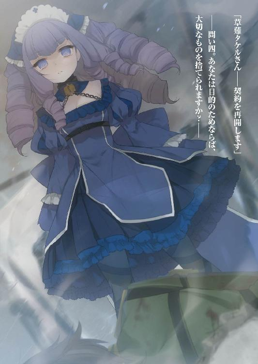

| 対魔導学園35試験小隊 1.英雄召喚<対魔導学園35試験小隊> (富士見ファンタジア文庫) | |
| 柳実 冬貴 & 切符 | |
| 富士見書房 (2012) | |


対魔導学園35試験小隊
１．英雄召喚
柳実冬貴

富士見ファンタジア文庫
本作品の全部または一部を無断で複製、転載、配信、送信したり、ホームページ上に転載することを禁止します。また、本作品の内容を無断で改変、改ざん等を行うことも禁止します。
本作品購入時にご承諾いただいた規約により、有償・無償にかかわらず本作品を第三者に譲渡することはできません。
本作品を示すサムネイルなどのイメージ画像は、再ダウンロード時に予告なく変更される場合があります。
本作品は縦書きでレイアウトされています。
また、ご覧になるリーディングシステムにより、表示の差が認められることがあります。
口絵・本文イラスト 切符
プロローグ
季節は春。対魔導学園中等部の二年生になった草薙タケルは、初日から氷結していた。
生徒達は座学を受けるものだとばかり思っていたのだが、いきなりアサルトライフルを一丁持たせられた挙げ句、「今からちょっと皆さんに殺し合いのようなものをしてもらいます」と告げられ、お互いペイント弾を用いて殺し合いごっこをするはめになった。
最初の授業、クラスメイト同士でのチームデスマッチ。
二〇対二〇。開始時の人数は総勢四〇名。
長期戦になるかと思われたその殺し合いごっこは、わずか三〇分で終わりを迎えた。
「............」
仰向けに倒れた草薙タケルは、額に押しつけられた冷たい銃口の感触に、ただただ驚愕するしかなかった。
開始直後、ライフルを使用せず、樹脂製の銃剣のみを手にデスマッチに臨んだタケルを、クラスメイト達は奇異な眼差しで見ていた。
しかし、タケルには剣で充分だった。剣だけがタケルの取り得だった。
戦闘慣れしていない他の生徒とは違い、闇に紛れて剣で相手を仕留めるやり方を、幼い頃からたたき込まれていたから──だから、タケルには自信があった。
『俺は負けねぇ。お前ら全員倒して剣術がすげぇってことを世に知らしめてやる』
事実、タケルは最後の最後まで負けなかった。
『誰にも負けねぇ！ 銃だろうが魔法だろうがなんだってぶった斬ってやる！』
初めから自信があった。
『お前が最後か......女だろうが、俺は容赦しねぇぞッ！』
銃剣一本でも、この場にいる誰にも負けないという自信が。
「......俺、負けたのか......？」
視線を上げると、信じられないものを見た。
目を疑うような光景。闇の中であってもなお輝く、夕焼け色の髪とコバルトブルーの瞳。まるで神話に出てくる戦乙女をそのまま具現化したかのような、美しい少女がタケルを見下ろしていた。
負けたことの悔しさも、自分が学園に入学した動機も、なにもかも吹き飛んだ。
言葉にならない完璧な美しさと強さが、そこにあったのだ。
少女は銃口を突きつけたまま、真っ直ぐにタケルを見下ろしている。
「私の勝ちだ」
この瞬間、『異端審問会のトップになって世界を変える』というタケルの目標はもろくも崩れ去った。
中等部時代。
およそ二年前の出来事である。
魔女が弾圧されるようになってから数百年。
『魔女狩り戦争』と呼ばれる魔女対人類の壮絶な戦いが終結した時、人類はその数を一〇分の一にまで減らしていた。
人類は一五〇年をかけて社会を再建。世界は急速な科学技術の発展を見せ、インターネットや携帯電話の普及によりさらなる経済成長の片鱗を見せ始めている。
魔女は管理され、幻想生物などはほぼ絶滅し、体内で魔力を生成できる人間もごくわずかとなった時代。
武力の頂点の座も、とっくの昔に剣から魔法、そして銃に移り変わっていた。
第一章 問題児、集う
異端審問官育成機関。
通称、『対魔導学園』
魔女や魔法使い、魔導遺産に対する畏怖、差別意識が本格化し始めた時代。
国はそれら【魔導】に関わる全ての脅威を取り締まるため、異端審問会を発足。
これに反旗を翻したのが、魔力を有する人間、すなわち魔女であった。
この動乱は後に『魔女狩り戦争』と呼ばれ、人類の大半を死滅させた忌むべき戦いとして人々の脳裏に焼き付いている。
魔女狩り戦争終結後、異端審問会の活動はさらに本格化。魔女への処罰は法として完全に確立され、異端審問官の育成機関である対魔導学園を創設。
異端審問会の権力は不動のものとなっていた。
「......クビ、ですか？」
対魔導学園理事長室にて、夕焼け色の髪をした少女は不服そうに眉をひそめた。
「そ。正確には資格の剝奪、かな。再取得は可能だからクビってわけでもない。君は今日から異端審問官ではなく、対魔導学園の一生徒ってことになるわけだ」
対魔導学園理事長兼、異端審問会会長、鳳颯月は薄い笑みをたたえながら言った。女性なのか男性なのか判断のつかない容貌をした彼の仕草には、独特な威圧感と色気がある。
「どうしてこういう処分に至ったのか......わかるよね？」
「............」
少女は心当たりがあるのか、押し黙った。颯月は年季の入った豪奢なデスクに置かれた紅茶を口にしながら、椅子の背もたれに体重を預ける。
「先日の失態、忘れたとは言わせないよ。下手をすれば審問会にとって致命的な問題になりかねなかったんだ。やり直せるチャンスが与えられただけ幸運と思うんだね」
「............」
「君は異端審問官『魔女狩り』としての使命を放棄した。これはその罰だよ」
颯月は両手を上げて言った。
異端審問官にも、それぞれに役割が決まっている。
各種抗魔兵器を開発、整備する『鍛冶師』
情報収集、潜入工作を担当する『隠密』
医療関連全般、魔法傷害の治療を担う『薬師』
強襲、突入、及び審問会に関わる設備の防衛を行う『騎士団』
そして独自に捜査、任意で戦闘を行うことが認められている『魔女狩り』
これらの様々な職種がある通り、異端審問官の仕事は魔女を狩ることだけではない。
魔導に関わる全てのことを解決するのが仕事だ。
魔女狩り戦争から一五〇年。魔法を駆使して活動する魔女や魔法使いと呼ばれる代物はさほど多くないのが現状だ。世界に残った魔女と呼ばれる人々は法律で子孫を残すことが許されないため、突然変異以外で魔力を持つ人間が生まれることはほとんど無い。
しかし、魔女以外にも脅威は存在する。
魔力を宿した物質、『魔導遺産』が、その一つだ。
魔導遺産の種類は様々で、剣、書物、銃、壺や陶器などの骨董品、さらには絵筆や木の葉、煙草の吸い殻などという代物まで存在する。無機物に魔力が宿ることは現代でも珍しくはなく、ごく希にだがとてつもない兵器になり得る物が出現することもある。
古くから存在が確認されており、伝説や伝承に残っている魔導遺産をロストタイプ、現代に出現する魔力を帯びた物質をイレギュラータイプと呼称。兵器としての価値だけでなく、歴史的価値の高い物も多く、コレクターも存在するため、裏組織によって高値で売買されることも少なくない。
他にもカルト集団や邪神崇拝などを行う魔力を持たない崇拝者達の逮捕や、人為的なものでない超自然的な不可視災害の対処、幻想生物の保護と研究などなど、仕事の幅は実に広い。
「ま、卒業まで我慢しろって言っているわけじゃないし、そう重く考えなくてもいいけどね。君に反省の色が見えるようになったら、その時はまた元の地位に戻してあげてもいいという考えだ。これに懲りたら、もうこの前のような間違った行動は──」
「お言葉ですが、先日の件に関して私は何も間違ったことをしたとは思っていません」
黙っていた少女が、口を開くなり颯月の言葉を遮った。
会長に向かって、審問官に過ぎない彼女がこのような口をきくのは本来ならば言語道断のはず。颯月は気にした風もなく、デスクに肘をつき、手に顎を乗せて口元だけで笑ってみせた。
「桜花、一つ質問をするよ。異端審問官の使命とはなんだい？」
颯月の問いに、桜花と呼ばれた少女は目を鋭く細めた。
「人々を魔法の脅威から守り、魔女や魔法使いを駆逐すること」
「駆逐ねぇ。そんなだから君は仲間内で《紅蓮姫》なんて不名誉なあだ名をつけられてしまうんだよ」
「............」
「異端審問官、ひいては我々審問会の果たさなければならない使命。それは魔女の逮捕、及び魔導遺産を押収することだ。殺したり破壊することが目的じゃないんだよ」
「......そんなことは、わかっているつもりです」
「無闇に殺して撲滅を目指す時代はもう終わったんだ。そんなやり方では冤罪も蔓延る。魔女といえど悪人ばかりではない。なりたくてなったわけじゃない人達が大勢いる。そういう人のためにも、我々は魔女を保護しなければならない」
桜花は拳を握りしめ、颯月の綺麗事に、湧き出た怒りをぐっと堪えていた。
「旧日本のことわざで餅は餅屋ってのがあるよね。異端審問官に魔女を殺すという役職は一つも無いんだよ」
「......言いたいことはわかります。自分の欠点も自覚しているつもりです。ですが、あの時は魔女を殺す以外に方法はありませんでした。それとも、人質にされた子供を見捨ててまで、魔女の逮捕を優先すべきだったとでも？」
「人質がありながら銃弾で額に風穴を開ける行為は、人命を優先した行動かな？ 人質が殺されてしまう可能性は考慮しなかったのかい？」
「私にそんな可能性はありません」
言い切った桜花の瞳には、自信と確信が宿っていた。
颯月はため息をついた。
「......とにかく、君はこれから学生をやり直すんだ。もう手続きは済んでいる。今日から、勉学に励むようにね」
颯月は返答を待たずしてデスクの引き出しを開けて、中から書類を取りだした。
「おとなしく処罰を受けて、また戻ってきなさい。君の実力ならすぐだから」
「......ですが、私は例の死体収集家の捜査の途中で......取引相手の手がかりだってもう少しで摑めそうなんです。お願いです、せめてもう少しだけ──」
「前にも言ったけど、あの事案は警察の管轄だということで、審問会と警察本部の間で合意が為された」
「しかし、いつ生きた人間に犠牲者が出るかわかりません......警察の手ぬるい捜査では」
「魔術的な痕跡が見つからなかった以上、審問会は手出しできないのは君も知っているだろう」
「......っ」
「だいたい、君はもう審問官じゃないんだ。もう捜査に口出しする権利は無いよ」
桜花は、あからさまに悔しそうな顔をした。
「ずっとそんな不服そうな顔をしていると美人が台無しだよ？ いい機会だと思いなさい。君はもう少し、コミュニケーション能力を磨くべきだと前から思っていたんだ。魔女狩り達の間でも、君の評判はすこぶる悪い。無愛想で言うこと聞かないって」
「......それはどうしようもありません。性格ですから」
「ほら、そういうところが問題なんだよ。私も君を一三歳で審問官にしてしまったことは早計だと思っていたんだよね......人間としての成長を学園で取得してきたまえよ」
颯月は心底呆れたようにため息をついて、桜花の方へ書類を投げた。
桜花はデスクに散らばった書類をまとめて、やはり不服そうに目を通す。
「......これは？」
「小隊名簿さ。君がいたのは中等部までだけど、高等部から必修となる学園試験小隊制度は、知ってるよね」
「はあ、まあ」
「君は第三五試験小隊に所属することになった。通称雑魚小隊なんて呼ばれてる」
「..................雑魚？」
すごくわかりやすい通称に、桜花はぽかんとした。
その反応を見て、颯月はこれまた嬉しそうに笑う。
「変わり者揃いでね、私のお気に入りの小隊なのさ」
「何故、私がそんな小隊に配属されなければならないのですか？」
「だって、ほら、ね？」
颯月は唐突に桜花を指さして、ニッコリと微笑む。
「変わり者」
「......っ！」
「はいはい怒らない怒らない。君には普段から激情家な一面があるんだもんなぁ。そこらへんも直せたらいいねぇ、学園生活でさ」
「配属の変更を希望します。理想的なのは私一人だけの隊です。その方が他人に迷惑がかからないし、私にとっても好都合です」
「それじゃ意味ないでしょー。それにもう決まっちゃったことは変えられません。メンバーの変更は絶対に認められないって、校則にあるからね」
ニシシと意地悪に笑う颯月。桜花は遺憾に思わざるを得ない。
「ま、そう悲観することもないよ。連携は取れていないが、個々の能力は突出しているところがあるからね。何よりこの小隊の中には一人、レリックイーターの候補者がいるんだ」
レリックイーター。その単語に、桜花は驚いて目を見開いた。
「ば、馬鹿な......こんな連中の中に、アレの候補者がいると言うのですか!?」
「うん。シリーズの最後の一つ......黄昏仕様は魔女狩り戦争以後、誰も所有者が決まっていなかったからね」
「ありえません！ 何故学生から選ばれるのです!? レリックイーターは魔女狩りだけが使用を許されているはずです！」
「それを言ったら君だって特例だったんだよ。一三歳で魔女狩りになって、すぐに《ヴラド》の契約者に選ばれたんだからね」
「それはそうですが......！ よりによって黄昏仕様のレリックイーターなんて」
「残念だけど君ほどの腕があっても、あれにはフラれたしね。他の魔女狩りも全員試してみたが、アレが首を縦に振ることはなかった。となれば、もう学生から候補者を選ばせるしかないじゃないか。それとも君は一般人の中から選出しろとでもいうのかい？」
颯月の意見に、桜花は下を向く。
レリックイーターとは、異端審問官『魔女狩り』のみが限定的に使用を許された兵器である。ただし兵器と言っても、現代に用いられる抗魔作用のあるミスリル鉱やアダマンチウムを素材に用いた抗魔銃器とは全く異なる代物で、魔女狩り以外の人間が使えば法に触れてしまう。
レリックイーターとは、紛れもなく魔導遺産なのだ。
魔力によって生まれた産物であり、人類にとって忌むべきモノなのである。
レリックイーターシリーズはその全てが銃を素体としている。どういう経緯で産まれたのかは極秘とされており真相は明かされていないが、そのどれもが強力な魔導遺産として厳重に扱われている。
毒をもって毒を制す。魔導を滅しようとする者にとっての最大の禁じ手。
異端審問会は畏怖と自戒の意を込め、この魔導遺産達に歴史上に存在する暴君、魔王の名をつけている。
「もちろんこちらとしても本意ではないんだ。我々が候補者を選ぶんじゃない。レリックイーターが契約者を選ぶ。君も通った道だし......わかるよね？」
「......はい」
言い聞かせるような颯月の言葉に、桜花は短く返事をした。
いまだに腑に落ちない気持ちを抱きながらも、手に取った書類をめくり、候補者達の顔写真を確認していく。
「念のために聞きますが、この三人の内、一人が候補者なんですよね？」
「ああ」
「どの生徒ですか？」
「うん......それはね......」
桜花が問うと、颯月は神妙な顔つきをして顎に手を当て、キッと鋭い視線を向けた。
「おしえてあげません」
............。
............。
桜花が無言で踵を返し、肩を怒らせながら理事長室を後にしようとする。
「ふはは！ 部外秘だからね教えてあげられないんだヨ！」
「あなたに真面目に聞いた私がバカでした......！」
「あー待って待って、も一つ報告ね。君の《ヴラド》は学生やっている間は使用できないことになったから、そこんとこよろしくー。緊急時でも使ったら怒るからねー」
「わかっていますよそんなこと！」
バン！ と扉を開けて、桜花が去っていく。
颯月は彼女の背中を見送りながら、しばらく楽しそうに笑っていた。
「やれやれ、年頃ってのは難しいね......」
椅子に背を深く預けて、肘掛に頰杖をつく。
「......おや？」
ふと颯月が部屋の隅を見やると、得体の知れない影が鎮座していた。
「ラピス、いつからそこに？」
「............」
「ダメじゃないか、まだ君は契約者がいないんだ。無駄に魔力を生成してはいけないよ。一人歩きは御法度だって言ったろう？」
颯月の呼びかけに答えるように、薄闇の中で影が蠢いた。まるで闇そのもののように思われたソレは、人の形を成し、影の中から静かに姿を現す。
現れたのは、服装から髪色、瞳の色までもが瑠璃色に染められた少女だった。肌の色は病的なほど白く、人間のそれとは比較にならないほどにしなやかだ。
少女は、まばたきも、息も、鼓動すら響かせずに、ただ無表情にその場に佇んでいた。
「君の維持も大変なんだ、まだ契約を実行しないのかい？」
「............」
「まだ迷っているのか......それとも」
少女は颯月の問いに答えない。
息すらせずに、佇む。
それでも瞳だけは深淵のように暗い闇を内包して、颯月を見ていた。
颯月は物言わぬ少女から何かを感じ取ったのか、目を細めた。
まるで、童話に出てくるチェシャ猫のような笑みを浮かべて。
「......そうか。考えておくよ」
「............」
「宿り木の名に恥じないやり方だ......末恐ろしい子だよ、お前は」
颯月はそう言って眠るように目を閉じると、喉を鳴らして不気味に笑った。
少女の表情は動かない。
ただ微かに、瑠璃色の蛍のような光が、少女の周りを浮遊していた。
＊＊＊
草薙タケルは剣術以外が絶望的だった。
苦手というわけでもなく、ダメというわけでもなく、絶望的なのだ。
彼が生まれた草薙家という家系は、現代から約三〇〇年前までは、有名な戦争屋の家系だった。剣が全ての兵器の頂点にあった時代、草薙家は数々の戦場にその名を轟かせていた。
剣術ならば唯一無二。天下無双の草薙流。戦場で草薙の者を見たら無条件で白旗を上げろと言われるまでに、草薙流は恐れられていた。
でも、そんなものは遥か昔のお話。
現代において剣術などというものは、武芸の道でしか役に立たない。
現実は、ペンは剣よりも強し。銃はペンよりも強し。
つまり当然のごとく、銃は剣よりも強しなのだ。
剣は底辺。時代遅れの鉄屑だ。
「おい。あれ、雑魚小隊の剣術バカだろ」
学園の廊下を歩くタケルを指さして、壁際でパックジュースに口をつける男子生徒二人組が嫌みったらしい笑みを浮かべた。
「ああ、この前の訓練で樹脂ナイフ持って突っ込んできたバカか」
「銃使わずに突撃とか何の冗談だよ。それに見ろよ、あの腰に下げてるの。あれって真剣だろ？」
生徒の言うとおり、タケルの腰には鞘と共に刀がぶら下がっていた。
切れ長な三白眼、一文字に結ばれた口、漆黒と呼ぶに相応しい色をした少し長めな前髪。まさに強面な武士と呼ぶに相応しい容姿をしている。
おまけに刀が制服のベルトに当たってカチャカチャと音が鳴るので、歩くだけで余計に目立っていた。
「日本刀だよな。大戦よりもっと前の主力兵器だ」
「あの二、三人斬ったらダメになるっていう使い道のわかんねー剣か？ なんでそんなもんぶら下げてんだ。バカなのか？」
「バカなんだろ。だから雑魚小隊なんかに配属されるんだ」
嘲笑が廊下に響き渡る。
ケタケタという耳障りな笑い声を背中に投げられながらも、タケルは背を真っ直ぐに伸ばして足を進めた。
後ろ姿は凜々しい。
だが、前は、鬼の形相一歩手前だった。
元々の目つきの悪さが際だって、まるで殺人鬼か何かのように顔が怒り狂っている。
周りの生徒も、あまりのタケルの恐ろしさに道を譲って壁際に避けていた。
「──!? はッ......!?」
タケルは周りの状況に気づき、鬼の形相を引っ込める。
「いかんいかん。......我慢......我慢だ......草薙タケル......！ 剣を馬鹿にされたくらいでいちいち怒ってなんかいられるか......！」
しかめっ面で一人ごちて、はぁと深くため息をつく。
「俺はもう、昔の俺とは違うんだ」
腰に下げた刀に手を当てる。草薙タケルになじむものはこれしかない。草薙タケルに残された道は、必然的にこれしか残っていなかった。
幼少の頃から勉学は底辺の底辺。手先も器用かと言われれば、不器用以外の何者でもない。文才も無ければ、絵の才も無いし、運動神経は優れているがスポーツにおいてのセンスや勘もマイナスを地で行っている。
何よりも絶望的と呼ぶに相応しい技能は、銃の射撃能力だ。
その才覚の無さは『呪い』と呼ぶに相応しい代物だった。狙った物に弾が当たらない、というレベルの話ではない。現実、弾が的を避けるのだ。銃口が真っ直ぐに向いていようと、至近距離であろうと、タケルの放った銃弾は的にかすりもしない。零距離ならばと引き金を絞ったとしても、何の運命のいたずらなのか、必ず銃が誤作動を起こして不発、最悪爆発という結果が待っている。
故に、草薙タケルには、剣の才能しか残されていなかった。剣だけならば、およそ現代で彼の右に出るものはいないと言い切れるほどに凄腕だが、そんなものがこのご時世にいったい何の役に立つというのか。
タケルは高ぶった怒りを抑え込み、自分の刀から手を離した。
「仕方ない......無能と罵られようが、俺にはこれしか無いんだ」
無能だったら、何もハイレベルな対魔導学園に入って、さらにハイレベルな異端審問官を目指さなくてもいいではないか。タケル自身、そう思わなくもない。
しかし、彼がこの職業を目指すのには、とてもとても切実な理由があった。
（金だ）
異端審問官はとても給料がいいのだ。
（家に代々残された借金......その上両親もすでにこの世にいない......それから何より最愛の妹のためにも、他の職では給料が全然足りないのだ！）
ぐっと拳を握り窓の外の空を見る。タケルの瞳に涙は流れておらずとも、何か切実な輝きを放っていた。
（ご先祖様お許しください......生きていくにはお金が必要なのです）
今はただ、金を稼ぐ。
二年前とは違い、今のタケルの望みはそれだけだった。
異端審問官になるためには、対魔導学園に入学すればいいというものではない。学園への入学は必要不可欠だが、中等部から高等部への進級試験があり、さらに高等部在学中に厳しいノルマをこなしてポイントを稼ぐことで、ようやく異端審問官になることができるのだ。
そのノルマというのが、一番の問題だった。
「......むぅ」
タケルは目の前の部屋のドアに対して、気落ちした顔で腹部を押さえた。
ドアのプレートには、「一学年第三五試験小隊」と記されている。
タケルは胃の痛みを感じながら、ドアをノックする。
「入っていいわよ～」
ドアの向こうから、そっけない声。
「あ、ちょっとま──」
続いて何やら焦ったような黄色い声が聞こえたのだが、タケルは止まることができずにドアを開けてしまった。
開けた瞬間、意味がわからなくなった。
「............」
「............」
目の前に、何故かバニーガールがいた。
しかも着替えの途中らしく、身長のわりに大きな白い二つの膨らみが、見えてはいけない部分がギリギリで見えていない状態で晒されている。胸もさることながら、なんとも扇情的な太ももと、無機物のはずなのにぴくんと動く兎耳から妙に目が離せない。
何故学園にバニーガールがいるのか。本来もっと硬派な学園ではなかったか。俺は夢でも見ているのか。
そんな疑問すら、タケルには浮かばない。
タケルは特に疑問に思うこともなく全てを理解し、泣きそうな顔になって部屋の壁際を見やる。
そこには口に空気を溜めて「ブププッ」と笑いを堪えている白衣を着た少女がいた。
タケルは一瞬でこの状況を理解した。
ああ、またか......と。
「き、き、き......っ」
バニーガールの顔が真っ赤に染まり、今にも悲鳴を上げようとしていた。
表情からは次に出てくる言葉が「キャー」であることは、お約束的に考えて予想できる。ところがそんな状況で、何故かタケルの方がぽろりと涙を流した。
「──ってなんであなたが泣くんですか!?」
バニーガールは、予想外のタケルの反応に、思わず跳び蹴りを入れてしまった。
みぞおちにもろに蹴りの決まったタケルは、ドアを吹っ飛ばして再び廊下へ。
よだれを垂らしながらピクピクしていると、バニーガールの少女がずかずかとやってきてタケルの胸ぐらを摑んだ。
「どういうことなんです!? 何故あなたがわたくしのバニーガール姿を見て泣きやがりますか!? 普通に考えて、ノーマルに考えて泣くべきはわたくしの方でしょう!?」
「......いや......」
「そんなにわたくしの姿が悲しいことになっていたと!? そんなに滑稽だったと!? 泣くほどに!? い、今のわたくしにはそんなに魅力が無いとでもおっしゃるのですか！」
「......ちげ......っ、お前は充分にいい身体して──」
「っっっっ!? 変態！ 変態変態！」
きゅーっと首を絞められて、タケルの顔はさらに青くなる。少女はと言えば涙目になりながらうーうー唸っている。
理由も口にできずに泡を吹き始めていると、奥にいる白衣の少女が笑いながらその様を見つつ、デジカメのシャッターを高速で切っていた。
「まさか泣き出すとは予想外だったわね。あはは、いい絵が撮れたわ」
「またお前の仕業か......！ うさぎで遊ぶのはやめろといつも言ってるだ──うぐぇっ」
「だぁって、こいつババ抜き弱いんだもん。罰ゲームよ罰ゲーム。名前もうさぎだしおっぱいおっきいし、バニーガール似合ってるじゃない？」
「お前のコスプレ趣味に巻き込まれる俺の身にも......なれっ」
「もしかしてわざと巻き込まれてる？ あ、うさぎのあられもない姿を見たいからわざとタイミング合わせてるのね？ あはは、この変態。変態小僧」
あんまりにも無邪気にバカにしてくるものだから、タケルは怒る気にもなれない。白衣の少女はデジカメの画像をにんまりと観覧している。
「どうしようかしらねぇ。構内にばらまこうかしらねぇ。うふ、うふふ、バニーガールとそれを見て涙する男の図。我ながら意味がわからなくてそそるわぁうふふふ」
不吉な算段を行っている白衣女に、「やめなさーい！」と飛びかかる半裸の少女。
騒がしい部屋を他所に、タケルは廊下で涙を流す。
彼らがタケルの所属する第三五試験小隊、通称『雑魚小隊』のメンバーだった。
同時に、彼らこそがタケルの胃痛の原因だったりする。
草薙タケルは、雑魚小隊の隊長なのだ。
高等部に入ると、学園の進級条件として特別なものが一つある。一般教養の成績だけでは、対魔導学園では進級できない。
学園試験小隊制度。
この課程をクリアしなければ二年生、三年生に上がることができないのだ。
試験小隊制は生徒達に競争意識を与えつつ、捜査経験を積ませるための試みであり、異端審問官になるための最大の難関と言われている。
対魔導学園の生徒は、あらかじめ選出されている生徒同士で小隊を編成し、魔法に関する事件解決などを行うことが義務づけられている。審問会や学園からは、兵器の部品や情報管理機材以外は一切の支援を得られないため、整備から情報収集、捜査、作戦立案から戦闘まで、全て生徒の自力で行わなければならない。
審問会側が小隊の構成を決めることになっており、メンバーの変更はよほどのことで無ければ許されない。もしもどうしようもない連中と組まされるなんてことになれば、たまったものではないのである。
たとえば、
「どうすべきか真面目に考えるべきではなくてっ!?」
こんな連中だ。
作業用の机をダンッと思い切り叩いて、隊員メンバーである西園寺うさぎが怒鳴った。対面に座るもう一人のメンバー、杉波斑鳩、そして草薙タケルは、揃って顔を上げる。
「高等部入学からもう半年、半年ですよ！ 隊長、現時点でのわたくし達の得たポイントを知っていますか!?」
うさぎに問い詰められて、タケルはばつの悪そうな顔をした。
「......ゼ、ゼロ、かな」
「そう！ ゼロ！ 半年でゼロ！ いい加減この現状を打開する策を考えませんと！」
うさぎの気迫にタケルが小さくなる。胃がキリキリと痛んだ。
彼の横にいた斑鳩が、だるそうに頰杖をついて口を尖らせる。
「とは言ってもねぇ。私達三人じゃどうしようもなくない？ 隊員が三人も抜けてちゃ、さばけそうな事案なんてそうそう無いわよ。しかも......この面子でしょ？」
斑鳩の言うとおり、現在の雑魚小隊はメンバーが三人しかいない。元々試験小隊は六人構成なのだが、雑魚小隊は三人も欠員が出ている。欠員の詳細は様々だが、隊を抜けるということはすなわち、退学したということだ。
ある者は精神を病み、ある者はおかしな宗教にはまり、ある者は早々に見切りをつけて学園を去った。
そして残った面子は──このいい意味でも、悪い意味でも尖った三人組。
「このままでは本当に退学に追い込まれてしまいます！ あなた方はそれでもいいんですか!?」
西園寺うさぎ。
異端審問官『魔女狩り』希望者。外見に似合わず狙撃の腕が並外れており、意外と馬鹿力だが、極度のあがり症なため任務中にとんでもないポカをやらかす。他の技術は並程度で、努力で補ってはいるが決して優秀とは言えない。性格は真面目だがプライドが高い。自分の名前にコンプレックスがあるらしく、下の名前で呼ぶとすぐに怒る。
「前衛が草薙だけじゃねぇ。どうしようもないわよねぇ」
杉波斑鳩。
異端審問官『鍛冶師』希望者。入学時の整備開発の成績はトップであり、整備その一点においての才能を買われて、この学園に入学することができた変わり者。推薦ですぐにでも審問官になれたのだが、本人はこれを拒否。「学生から青春を取り上げるな」という、本気か冗談かわからない理由で、高等部に進学してきた。確かに整備の腕は間違いなく学年でピカいちなのだが、本人は兵器開発や改造にしか興味を示さず、おまけに開発する兵器が実にピーキーな代物ばかりなため、扱い辛い。小隊の中では唯一、中等部時代のタケルと親しかったメンバーである。
「............めんぼくない」
最後に、剣術バカこと草薙タケル。
異端審問官『騎士団』希望者。射撃能力ゼロ、整備スキルゼロ、情報収集能力ゼロ、学力ゼロ。唯一の取り得は接近戦のみ。刀剣の類ならば何でも使いこなせると自負しているも、使う機会はほとんど無し。おまけに剣を馬鹿にされると頭に血が上ってしまい、猪突猛進して玉砕してしまうという致命的な欠点も抱えている。
元々隊長ではなかったのだが、一人抜け二人抜けていき、結局タケルがやらざるを得ない状況に陥ってしまった。銃が使えず、あまり戦力になった例しが無いので、隊長のくせに発言力はかなり低い。現在に至るまでいいこと無しの男だ。
「そうやってすぐに謝らないでくださいっ。あなたは隊長なんですよっ。もっと自覚を持ってくださいまし！」
何故か悔しそうな顔をして、うさぎはバンバンと机を叩く。
タケルは頭を指で搔いた。
「んなこと言ったって......向いてねぇんだよなぁ、根本的に」
「そ、そんなこと言わないでくださいなっ。隊長がそんなじゃ、わたくし達の立場がないじゃないですかっ。それにわたくしは草薙が隊長に向いていないなんて思ったこと一度もありません！」
「──お前の目は節穴かッ!?」
「どうしてそこでわたくしが責められるんですか!? せっかくわたくしが慰めてあげてるのに！」
かみ合っているようでかみ合っていない二人の会話を他所に、斑鳩が楽しそうにニヤニヤと笑う。
「うさぎちゃんはさ」
「名前で呼ばないでくださいッ！ ちゃんをつけないでくださいッ！」
「うさぎは草薙に自分を重ねてるわけね。だから草薙にはがんばってほしい、と」
「!? 別にわたくしはそんな......ただ本当に草薙は隊長に向いていると思っているだけでっ......」
「どのへんがぁ？」
「そ......その、心配性なところ......とか。結果は出ないけど努力家なところ......とか？ あとはその......仲間想いなところとか、お人好しなところとか」
「ほら、あんたにそっくりじゃない」
ぼっと音を立ててうさぎの顔が赤くなる。いかにもな反応に、斑鳩がさらに追い打ちをかけようとする。
「剣しか使えない男と、狙撃しか能が無い女。しかも自分の得意分野でも欠点を抱えている。似たもの同士、お似合いよあんたら」
やれやれと首を振る斑鳩に、タケルとうさぎは揃って彼女の方を見る。
「何よ、二人してこっち見て」
「「お前が言うな」」
「......あらやだほんと。私も似たもの同士じゃん。そうね、うん、私達は上手くやっていけると思うわ」
「「なんでポジティブ？」」
適当な態度の斑鳩に、二人がツッコミを入れるのは、もはやいつもの光景だ。
こうして無為に話が逸れに逸れて、結局何も行動せずに小隊活動が終了してしまうのが雑魚小隊の常だった。
「とにかく、情報が無いことには話になりません！ 何かありますか、草薙！」
「一応持ってきたが......期待すんなよ」
タケルはポケットからよれよれの紙切れを取り出して、うさぎに手渡す。ここ数日間でなんとか集めた貴重な情報だ。紙のよれよれ具合から努力がうかがえる。まさにタケルの血と汗と涙の結晶である。
うさぎは「ふむふむ」と頷きながらメモを読み上げる。
「えーと......五丁目の坂竹さんちの植木が触手をうねらせていたという噂が一件と......学生街周辺の路地裏にルーン文字のｔと思われる記号が記された壁があるという事案が一件......夜寝て朝起きると必ず、そこにいるはずのないおじさんの匂いがする枕が......」
「植木はオジギソウ。路地裏の落書きは相合い傘ね、ルーン文字のｔを見てみなさい、似ているわよ。それから枕は単なる加齢臭。たいして考えずともガセだとわかるような代物ばかりね」
読み上げている途中で斑鳩からツッコミが入った。
「ガセばっかりではありませんかーっ！」
「......めんぼくない。これでも、がんばったんだが」
「このままでは本当にまずいですっ。もうあと残り半年......半年で二〇〇ポイント！ たかだかＥクラスやＦクラスの魔導遺産を確保したところで雀の涙！ 塵も積もれば山となると言いますが、もう積み上げている猶予は我々には残されていないというのにっ！」
うさぎは頭を抱えて絶望的な状況を嘆いた。
度合いは異なるが、タケルもそれは同じ気持ちだった。
魔導遺産と魔術事件にはランクが存在する。より強力で歴史のある物ほど高いランクがつけられており、得るポイントも高い。Ｆは５、Ｅは10、Ｄは20、Ｃが30ポイントを取得できるようになっており、それ以降のランクは学生が請け負ってはいけないという規定が存在する。
（確かにそうだ......いまさらＦやＥを取り扱ったところで、ポイントは高が知れている。早い段階からならこれを積み上げればノルマに届いたかもしれないけど、もうそんな時じゃない。もはや猶予はねぇんだ......何か、もっと大きなヤマを相手にできれば......）
この際成功するかどうかは度外視して考えてみるも、何も思い浮かばない。
しばらくして、タケルもうさぎと同じように頭を抱えてしまう。
「......しょうがないわねぇ」
斑鳩が立体ディスプレイを起動させて、マウスカーソルを一つのフォルダに合わせてクリックした。そこには、タケル達がどんなに努力しても手に入らなかった質の高い情報が一つだけ記されていた。
「魔女狩り戦争中に出来上がったものだからイレギュラータイプだけど......Ｄランク相当の魔導遺産に関する情報よ。私の分野ではないけど、お前達を見るに見かねてね。斑鳩お姉さんがひと肌脱いでやったわ」
「「おおっ！」」
タケルとうさぎが顔をひっつかせながら、ディスプレイに映し出された文章に身を乗り出す。
「ターゲットは魔女狩り戦争初期、アンドレフ・イェーガーによって書かれた詩集『無軌道詩編』の初版本。原本ではないため魔力を生成できるだけの力は無いけど、印刷時にアンドレフ本人が印刷所で魔力を内包させたらしい。内容は支離滅裂で統一性の無い無意味な詩集のようだけど、最初から最後まで読むと必然的に暗号化された術式が脳内で発動してしまい、本に内包された魔力を用いて精神汚染魔法が発動。読者は発狂して自らの眼球をえぐり出し、舌を引っこ抜いて自殺してしまうとか」
斑鳩の説明のあまりのえぐさに、顔を青くするタケルとうさぎ。
人を殺せるだけの魔導遺産だとしたら、イレギュラータイプであろうと確かにＤランク以上の代物だった。アンドレフ・イェーガーのファンは現代でも多く、逸話も相まってコレクターからしてみれば非常に価値の高い本である。
「原本はすでに封印済み。初版本も残存しているのは五冊で、すでに異端審問官によって内四冊が押さえられた。残り一冊は押収現場から消えており、何者かによって持ち去られた形跡が見られたが、いまだに足取りが摑めていない。......というのが一週間前の状況ね」
感嘆の声を漏らす二人を他所に、斑鳩はさらに続ける。
「重要なのはここから。つい先日、残り一冊を持ち逃げした犯人を突き止めたの。一週間前の一斉逮捕でこの遺産売買組織は壊滅したけど、そのうちの一人の下っ端が一冊を持って逃走したんですって。そいつはその一冊を別の組織に売りさばいてとんずらしようとしているらしい。取引が行われるのは──今日の深夜〇時よ」
言い終えると、ふふんどうよ？ と斑鳩は胸を張った。
「すげぇな......いったいどうやって、そんな情報を手に入れたんだ。だいたい犯人を特定って、杉波はいつ捜査なんてしていたんだ？」
「私はしてないわよ。私にできるわけないでしょ。入念な捜査を重ね、ついに特定に至ったのは現在一年で成績トップの一八小隊の連中」
「......は？」
「一八小隊のデバイスにハッキングをしかけて情報を抜き出したのよ。容易いことだったわ」
「──待て。今のは聞き捨てならないぞ、なんてことをしてくれたんだ!?」
「ついでに奴らのファイルに書かれていた取引日時を一日ずらしておいたわ。だいたいハッキングはされる方が悪い。情報管理は隠密担当の義務なのだからねハッハッハー！」
「ハッハッハーじゃない！ それって犯罪だろう!?」
「校則には、情報収集にあらゆる手段を用いて構わないって書いてあるもの、ちゃんとルールに則っているわ」
「だからって他人が努力して取得したものを汚い手で強奪するんじゃありません！」
「いまさら引けないわよ。もう審問会に申請は出してあるしね」
「なっ......いやでも、申請の取り下げくらいできるだろう!? 今すぐ撤回して一八小隊に謝りに行くべきだ！」
いつものタケルなら反論することは滅多に無いのに、今回ばかりは引くことがなかった。
斑鳩の言う通り情報を盗むことは校則で許されているが、タケルは悪事に対しては極めてまっとうな思想を持っている。幼い頃、タケルの人格形成に多大な影響とトラウマを与えた人物が、悪事にうるさい人だったせいだ。
悪いことはいけない、すれば自分に災難が返ってくる。
タケルはそう教えられてきた。今でもその教訓を胸にしっかりと秘めている。
盗みはよくないと斑鳩に詰め寄るタケルの肩に、うさぎが手を置いた。
「草薙......あなたのそういうところ、私は好きですわ」
「うさぎ......！ わかってくれるか......！」
「......名前で呼ばないでくださいってば。不正を行わない姿勢が好きって意味ですからね？ 勘違いしないでくださいね？」
「そうだろうっ。やっぱりやるなら正々堂々っつーか、正攻法で成し遂げてこそやりがいがあるってもんだよなぁ」
この期に及んで理想を掲げるタケル。
しかし喜んだのも束の間、うさぎはずずいと顔を近づけて、血走った目で睨みながらタケルの肩を潰さんばかりに握りしめた。
「確かに好きと言いました。ですが！ 事は一刻を争うんです！ 今は正道か邪道かを言い争っている場合ではないっ！ このままでは我々は負け組になってしまいますっ！」
もうすでに負け組な気がする、とは思っていても口にしないタケル。
うさぎはタケルを諭すように熱く語る。
「あなたはいいんですか!? お金を稼ぎたいのではなかったのですか!?」
「ぐ......そりゃ、そうだが......」
タケルの心はおおいに揺れた。そう、彼は金を稼がなければいけない。家計は今も火の車。妹のことだってある。借金を返しつつ、自分の生活費。正直なところ、悪魔に魂を売ってでもこの状況をなんとかしたい。
タケルの胃が、またもやキューッと縮こまりたくなるような痛みをもよおす。
その時。いきなり、小隊室のドアが勢いよく開いた。
「──グッドアフタヌゥゥゥゥゥゥン！ 子供達ッ！」
小隊員の視線が高速でドアに移動する。
いきなり登場した人物を目の当たりにして、タケルとうさぎは顔面蒼白となった。
そこにいたのは流れるというかみなぎるような長い白髪と、くどいくらい美形な顔の持ち主だった。背景に薔薇でも似合いそうなその人物は、扉の前で奇抜なポーズを決めている。
対魔導学園理事長、鳳颯月だった。
「理事長......!?」
「いかにも私は理事長だよ！ びっくりしたかい？ ハトが豆鉄砲を誤射したかい？」
かなり寒いことを言いながら、ＨＡＨＡＨＡ！ と豪快に笑う颯月。
なんでこんなところに学園最高権力者がいるのだろう。
噓みたいな光景に、約二名の精神はざわめいた。
「おいやばいぞ、さっきの聞かれたんじゃねぇか......まるで計ったようなタイミングで登場したぞあの人」
「あ、焦るにはまだ早いです......まだそうと決まったわけでは......ここは冷静に、冷静になるのですっ」
だらだらと脂汗をかきながら、二人はこそこそと耳打ちする。
そんな二人とは違い、斑鳩は平然と椅子の上で颯月に足を向けながら、ふんと吐き捨てるように笑った。
「何の用ですか。こんな場末のバーみたいな小隊にやってくるほど暇なのか、あんたは」
「......すごい表現だね斑鳩君。あと私は一応この学園の理事長なんだがねっ。開口一番にそりゃないんじゃないかなもっとうやまうべきじゃないのかなっ」
颯月の明るい抗議に、斑鳩は唾でも吐きかけそうな勢いで侮蔑の視線を向けた。
タケルの脂汗が冷や汗に変わる。
「私が敬うのは尊敬する相手か愛する者だけよ。それより本当に何しに来たんですかあんた」
立て続けに斑鳩が罵倒に近い言葉を吐く。弁明の余地が無いほどに、斑鳩の態度は無礼そのもの。責任は誰にあるかと言われれば隊長であるタケルに降りかかるわけで、タケルはもうあわあわわと身体をバイブレーションさせることしかできなかった。
当の理事長は斑鳩の暴言をファンキーな笑顔で容易くはねのけた。
「ハッハッハ！ 相変わらず小生意気だねぇ。いや何、今日はちょっと視察しに来ただけだよ。君達三五試験小隊は何かと評判だから」
「なるほど。落ちこぼれの顔を拝みにきたわけだ。首でもはねていきますか？」
「いやいや。まあ耳にするのは悪い評判ばっかりだがね、結構尖っていて私はいい小隊だと思うんだ」
颯月は言うなりアゴに手を当てながら部屋を歩き、隊員の顔を一人一人覗き込んでいく。
斑鳩とは元々知り合いなのだろう。彼女をスルーしてうさぎ、次にタケルの目の前に立った。
必然的にタケルの姿勢は直立となり、家を支える柱のように動けなくなる。
颯月は、鼻と鼻がくっつくほどの距離まで顔を近づけて、タケルの顔をまじまじと眺めた。
「やあ、久しぶりだね草薙君。まともに顔を合わせるのは中等部の入学式以来かな？」
「ど、どうも......理事長」
親しげに話しかけてくる颯月。タケルも斑鳩と同じで颯月とは顔見知りだった。入学式の際、一度だけ理事長室に呼ばれたことがあったのだ。
そこでの会話は......正直今思い出すだけでも心臓が収縮してしまう。あの頃のタケルは礼儀知らずで世間知らずの子供だったため、そうとうに無礼なことを宣言してしまった。
確か、「あんたをその座から引きずり下ろしてやる」......とかなんとか。
今では考えられない。恐れ多いことこの上ない。
動揺して舌が回らないタケルを前にして、颯月は怪訝そうにした。
「あれ？ 君そんなキャラだったっけ？......ずいぶん落ち着いたんだなぁ。昔の君なら私のことを殺しそうな目で見ていたというのにー」
「は、ははは......すいません、思春期だったもんで......その節は」
肝を冷やす思いをしながら平謝りをする。
颯月はクスリと笑い、ぽんぽんとタケルの頭に手を置いた。
「どんな心境の変化か知らないけど、いいことだよ。いやぁ、うちの跳ねっ返り娘も少しは見習ってほしいもんだねぇ」
我が子でも眺めるように穏やかに笑う颯月。
こうして見ると改めて、男なのか女なのかわからない人物だった。そもそも男だと明言もしていないし、学園内でもその性別を決定づける証拠を持つ者はいなかった。謎が多いというか、謎しかない人物。それが学生達から見た鳳颯月の印象だ。
颯月はしばらくニヤニヤとタケルを吟味した後、ふむと頷いた。
「ともあれ、君たちの小隊活動の成績はお世辞にもよいとは言えないね。責任を誰かに追及するつもりはないが、脱落者が三人も出てしまっては小隊の存続も危うい。それは私としても避けたい。私は君達を気に入っているからね」
タケルの胃が悲鳴を上げる。
「そこで、だ。これは異例なのだが、三五小隊に補充要員を用意した」
メンバー全員の顔が上がる。
補充要員。取得ポイントの問題があるため、メンバーの変更は基本的に認められていないはず。
うさぎがタケルに耳打ちする。
「どうなっているんですの......？ 補充要員なんて前代未聞じゃなくて？」
「俺に聞かれてもな......とりあえず、さっきの会話は聞かれてはいなかったようだが」
タケル達が疑問に思っていると、颯月はドアの方へ振り返って「入りなさい」と声をかけた。
数秒間を置いた後、スチール製の素っ気ないドアが音も無くゆっくりと開かれる。
「────」
瞬間、タケルの心臓は止まりかけた。
忘れられるはずもない人物が現れた。タケルにとって全ての始まりとも、全ての終わりとも言える人間。
二年前のあの日、薄闇の中で見た絶対強者。
タケルの自信を粉々に打ち砕いた、忌むべき存在。
忘れられるはずがなかった。
その、夕焼け色と呼ぶに相応しい、沈みかけた太陽のような髪の持ち主を。
神話にでも出てきそうなほどの、美しい少女を。
「元魔女狩りの鳳桜花君だ。わけあって、このたび高等部へ編入してきた。まあ仲良くしてやってくれたまえ」
「よろしく」
「ちなみに私の娘だよ！ どうだい似てるだろう!? 眉毛のあたりとか鼻のあたりとか可愛らしいところ全般とか！ 見ての通り紛うことなき私の娘さ☆」
「義理の娘だ。血の繫がりは間違っても無いので誤解しないでほしい」
鳳桜花という少女の指摘に、謎の笑顔を浮かべる颯月。何がこの人のテンションをここまで引き上げているのかはわからないが、生徒達の前ではわりといつもこんな感じなので誰も気にしない。
タケルの横にいたうさぎは、桜花に見覚えがあるのか、いきなり不機嫌そうな顔をした。
「鳳桜花......知っていますわ。中等部時代、一年半で異端審問官の資格を得た超優等生」
「............」
「天才と七光りという人種は気に食いません......努力も知らずに容易く駆け上っていく......あなたもそう思うでしょう？」
「..................」
「......草薙？」
同意を求めたのに返答が無く、うさぎは横のタケルの顔を見上げた。
タケルは口を一文字に結び、まばたき一つせずに真っ直ぐに鳳桜花を視界に捉えていた。
「知り合いなのですか？」
「......ああ......元、クラスメイトだ」
表情を和らげて、タケルが短く答えた。何か含みがあるのを感じたのか、うさぎは斑鳩の方を向いた。桜花がタケルと同じクラスだったのなら、斑鳩とも同じなのだ。
斑鳩は視線を桜花に向け、無表情に颯月に問うた。
「何故鳳桜花は魔女狩りを辞めてうちの小隊に来たんですか？ あんたが校則を覆してまで入隊させようとしてるんだし......どうせ何か理由があるんでしょう？」
「......ふむ、それはねぇ」
颯月が少しだけ困ったように額に指を当てると、桜花が小隊メンバーへ一歩前へ足を踏み出した。
「悪いが、理由に関しては答えられない」
「これから一応仲間として一緒に活動するのよ。歩み寄ろうとするのは当然のことじゃない？」
歩み寄ろうとなんてしていないのが見え見えだが、斑鳩はそれらしく言った。
桜花は少しだけ考えた様子だったが、
「お前達には関係ないことだろう」
目を閉じてはっきりとそう答えた。
「......相変わらずね、あんたは」
頭を振って、斑鳩はもうそれ以上何も言わなかった。
桜花はどうにも斑鳩とはウマが合わないらしく、呆れ返ったような彼女の態度に少しムッとしていた。
そこで、桜花がタケルの視線に気づいた。
タケルは慌てて視線を逸らそうとしたが、澄んだ瞳の桜花を前にして、たじろぎを抑えて話しかけた。
「ひ、久しぶりだな、鳳」
「............」
「......元気......だったか？」
問うてくるタケルに、桜花が目を細める。
タケルは当時を思い出しながら、嫌な汗をかいた。二年前のタケルの印象は、はっきり言って最悪だろう。なにせデスマッチの最後の一対一で、かなり強気なことを宣った挙げ句に、手も足も出せずにボッコボコにやられたのだ。
ほとんどまともな会話をしたことはないが、最初の印象は充分すぎるほどに悪い。
「............」
桜花は警戒心と嫌悪のようなものを顔に滲ませている。
やはり嫌われてしまっている。タケルは肩を落とした。
その直後。
桜花が、彼に向かって口を開いた。
「............誰？」
..................ガクッ。
タケルは、肩を落とすどころか、その場で膝をついて挫折した。
嫌われている以前に、草薙タケルは鳳桜花に覚えられてすらいなかった。
第二章 出撃！ 雑魚小隊！
学園外繁華街裏通り。ベンチャー企業やテナント募集中のビルが建ち並ぶ、一見寂れたビル街の一角。
三五小隊は、それぞれの配置についていた。
特に目立った特徴の無い、築一〇年ほどの中途半端な高さのビル。ここが取引現場として使用されるであろう場所だった。現在は使用している企業がないのか、どの階層も空き部屋となっている。
目的はＤランク魔導遺産、『無軌道詩編』の押収。
結局桜花を加えた四人で、予定通り任務を行うことになった。
『とりあえずまだ初日だし、私と一緒に小隊室待機の方がいいんじゃない？』
ブリーフィング中に、一度整備した拳銃をわざわざ解体して確認を行っている桜花に、斑鳩が言った。
『......いや、問題ない。参加させてもらう』
『そう？ 別にいいけど。ずいぶんとやる気満々ね？』
『どんな任務であろうと全力で挑む主義だ。安心しろ、足を引っ張るつもりはない。よほどのことがなければ私は隊長の命令通りに動く』
高速で拳銃を組み立てながら、桜花は視線をタケルに移した。
特殊警棒で素振りなんぞしていたタケルは、いきなり見つめられて何事かと目をぱちくりさせた。
『お手並み拝見だな......草薙タケル』
桜花の放ったその一言は、タケルにプレッシャーを与えるのに充分だった。
「......はぁ」
不安な気持ちを捨てきれず、ため息をつく。
斑鳩はオペレーターとして小隊室に残り、無線で通信担当。うさぎは対面のビルの屋上で待機し、狙撃を担当。桜花は正面入り口から、行けるようであればそのまま潜入。
タケルは裏口担当だった。
「......裏口に見張りはいないみたいだ......そっちはどうだ？ 鳳」
《............。こっちも敵影は無い》
「よ、よし、行こう」
無線が切り替わり、オペレーターの斑鳩が割り込む。
《取引相手の組織もそうデカくはないはずよ。せいぜい小規模なギャング止まりというところね》
「なんでわかるんだ？」
《『無軌道詩編』を持って逃走したチンピラになって考えてみなさい。組織間のコネなんて高が知れているわ。大きい組織との取引はリスクが大きい》
確かに斑鳩の推測は説得力があった。
相手が小規模であるなら、それに越したことはない。
あまりにもターゲットの魔導遺産のクラスが高かったり、取引を抑える際の敵対組織が強大すぎた場合は、審問会からの捜査、出動許可が下りない。申請が通ったということは学生でも対処できるレベルだと審問会が推測したということだ。
だが、危険なのは同じこと。年間の対魔導学園の生徒の死者数は決して少なくない。危険度が低いと認定されたといっても、万が一ということもある。裏口周辺を警戒しつつ、建物内部へ侵入し、桜花と合流する。
「ずいぶん無警戒だな......本当に取引が行われてんのかな？」
「私が先行する。隊長には後ろを頼みたい。許可を」
「お、おう」
二人はお互いにカバーし合いながら、少しずつ進んで行く。
といっても、タケルの場合銃は持参しておらず、武器は警棒と腰に携えた刀のみなのでなんとなく格好がつかない。閉所での戦闘ならば警棒が有利な場面はあるが、よほどのことがないかぎりどこであろうと銃の方が有利だ。
一方桜花の武装も、ハンドガン一丁と腰に携えた特殊警棒のみだった。ハンドガンは自動拳銃。この街の警察で使用されている物と同一の型だが、異端審問会お抱えのアルケミスト社製、つまり抗魔銃器として改良されている代物だ。小型で安定した命中率を誇り、手の平にフィットするように構造されたグリップは女性や子供でも握りやすいと感じる代物だが、反面、装弾数の少なさと威力の低さがネックとなっている。
現在装弾されているのは麻酔弾だ。通常、試験小隊に携帯が許されている銃弾は麻酔弾とミスリル加工弾のみ。ミスリル弾の使用は敵が魔女、もしくは魔導遺産で武装した人間などに限られる。それ以外に殺傷能力のある銃弾は使ってはいけないことになっている。
サブウェポンとしては大変優秀な銃だったが、はっきり言って火力不足は否めない。取引相手の組織が判別できていない以上、備えあって憂い無しなのだが......。
桜花はあえて使い慣れているこの拳銃を選んだ。
「............」
桜花は冷静そのもので、動きにも無駄がなかった。足音を殺す歩き方からカバーポイントの位置まで、全てにおいて隙がない。さすがは元異端審問官と言うべきか、手慣れている印象を受ける。
桜花がハンドサインでクリアだと伝えてくる。
タケルはいったん「待て」と合図し、インカムに話しかけた。
「うさぎ、そっちはどうだ」
《な、ななな、七階のオフィスだけ、あ、あ、あ明かりがついていますわ。人数は......さ、ふ、二人っ》
うさぎはいつも通り緊張している様子だった。
「オーケー。七階だな」
《──べべべ別に焦ってなど、緊張してなどいません！ そんな風に思われるのは心外です！ わ、わたくしはただ、し、しし、慎重なだけで》
「誰もそんなこと言ってねぇだろっ。俺はただ状況を............？」
そこまで言って、タケルはおかしな点に気がついた。
「二人？ 取引相手は一人ってことか？」
《そのようですわよ。窓際しか見えないから、隠れているかもしれませんけど......わ、わたくし何かやらかしました!?》
取引相手が一人。まさか、組織を通さずコレクターに直接コンタクトを取ったというのだろうか。だったら二人だけというのも納得だが......はたしてあり得るだろうか？
《......ど、どうしますの？ もうやってしまいますの!? や、やぁれますわよこのわたくしならっ！ ちょちゃ、ちゃ、ちょちゃいのちゃいです！》
激しく嚙んでいる人間が言っても説得力が無かった。
「待て待て。俺達がオフィスに到着するのを待ってくれ」
うさぎの狙撃に関しては、命中率だけは信頼していないわけではないが、まだ中に敵がいるかもしれないので迂闊なことはできない。
「鳳は反対側の通路から回り込んでくれ。合図をしたら突入だ」
《............》
「おい、鳳？」
桜花はカバーポイントで膝を曲げてしゃがんだまま、天井を見つめていた。視線の先には通風口があるだけで、それ以外に何も無い。
（何やってんだあいつ......？）
呆けているのかと思い、タケルはインカムを使わずに身振り手振りと小声で桜花に向けてアピールする。
《了解》
少し遅れて、ハンドサインを送ってから、桜花が姿を消す。
（今のところは順調か。このまま滞り無く終わってくれればいいが）
タケルは警戒を維持しながら階段を上がり、七階にたどり着く。
ターゲットのいる部屋の入り口を確認する。
「......！」
人影が、一つ。敵は拳銃を片手に持ちながら、煙草をふかしていた。
「敵影確認......部屋の入り口に一人」
メンバーに報告しつつ、反対側の通路に桜花が到着するのを待つ。
入り口の見張りを倒してから取引現場へ突入となると、オフィス内部の奴らに気づかれる可能性が高い。突入した瞬間に銃撃戦が始まるリスクを考えると、やはりうさぎの狙撃と合わせて突入した方がいい。
「じゃ、じゃあ、全員でほぼ同時に行くぞ。うさぎは合図の三秒後に狙撃で中の二人を仕留める。俺は合図を出したら囮になって突っ込むから、見張りの注意がこっちに向いたら鳳は見張りを撃ってくれ。その隙に俺は中に突入......と、こんな感じで......いいか？」
《了解》
《あ、あなたにしては妥当な作戦じゃないですか。は、は、把握しましてよ？ だだ、大丈夫です問題ないですやってみせましてよ。と、ところで三秒後って、零カウントで射撃ですか？ そそそそれとも零はカウントせずに射撃ですか？ どどどどっち──》
《お前が数えるんだからどっちでもいいわよ～。ま～がんばんなさいね～》
約一名非常にやる気が感じられない上に作戦に関わっていないが、このさい聞いて聞かぬ振りをする。
タケルは桜花が反対側へ到着するのを待つ。
その間、微かにだが、取引現場の声を聞き取ることができた。
「......足がつくようなまねはしてないでしょうね？」
「心配するな。事務所の金庫番を懐柔して拝借させた。そちらに迷惑がかかることはない。こいつも使う必要が無くて済んだ」
「ソレは報酬のオプションだと思ってくれて構わないわ。使うなり売るなり好きにして。それより、組織自体は異端審問会に潰されたと聞いたけど、本当に大丈夫なのかしら」
「問題ねぇって言ってんだろ」
壁が薄いため、会話は筒抜けだった。
内容からターゲットに間違いないだろう。斑鳩の盗んだ情報は正しかった。
「......で、例のものは用意できた？」
「この通りだ」
衣擦れの音。
「......確かに。ご苦労だったわ。報酬は所定の位置に置いておく」
「そんなものどうするつもりだ？ ただの破片だろ」
壁に耳を当てていたタケルは眉根を寄せた。
破片？ 『無軌道詩編』ではないのか？
「お前達には関係のないことよ。こっちの事情に首を突っ込まないで」
「......いけすかねぇ女だ......ところで、もう一つ買い取ってほしいもんがあるんだが」
「......？」
「おい、見せてやれ」
再び衣擦れ。
「......なによそれ」
「『無軌道詩編』の初版本の一つだ。どさくさに紛れて一冊失敬させてもらった。そんなガラクタなんかよりよっぽど上等な代物だ。どうだい、言い値で構わねぇから一つ」
「......本当に、どうしようもない馬鹿な連中ね、あんた達」
場の空気が張り詰めたのが伝わってくる。
「異端審問会を舐めすぎにもほどがあるわ。連中が気づいてないとでも思ってんの？」
「......あ？」
「組織が壊滅したのはその本が原因よ。一冊抜けがあれば奴ら血眼で追ってくる。それこそ、地獄の果てまでね」
不穏な話の展開に、タケルの頰を汗が伝った。
襲撃が気づかれる。ここで警戒されるのは非常にまずい。
《所定の位置についた。指示を》
ギリギリのタイミングで桜花からの報告が入る。タケルは腰に刺さっていた特殊警棒を展開。電流のスイッチをオンにして右手にしっかりと握る。
「準備はいいか」
《問題ない》
《い、いいい、いつでもぉ！》
返事を耳にして、タケルは足に力を込める。
そして目を鋭く細めた瞬間、
「状況──開始ッ」
タケルは角から飛び出て敵の注意を引く。
敵は当然こちらに気づき、銃口を向けようとする。
タケルは左下方へ警棒を構え、足を止めずに敵へ向かって直進。
無謀な特攻。当然のごとくこれはフェイク。
後方より二発。敵は背後からの銃撃に一瞬で崩れ落ちた。
予定通りに桜花がやってくれたのだろう。
同時に、
《や、やりましたわ！ 二人とも沈めましてよ！ さっすがわたくしです見ていましたか草薙っ》
焦りが生じたせいか狙撃のタイミングが少し早かったが、問題ない。タケルはオフィスへ突入するために倒れた敵を素通りし、ドア横に背をつけた。
桜花が素早くこちらを見て頷いたのを確認すると、タケルはドアを蹴破ってオフィスの中へ突入した。
「──異端審問官だ！ 全員動くな！」
順調に終わった、と、タケルは内心喜んでいた。
初のポイントゲット。まだ進級のノルマにはほど遠いが、これで少しは希望が......。
............。
「......ぇぇ？」
タケルはドアの向こうに広がっていた光景に目を点にする。
確かに確認した。突入前のうさぎの無線。二人、つまり全員沈めた、と言っていた。聞き間違いでは断じてない。
それなのに......。
何故目の前に、銃口をこちらに向けた黒ずくめのお兄さん達が七人もいるのか。
「あの......うさぎ、さん？」
《なんですっ。もう見ましたわよねっ、わたくしの仕留めたぼんくらどもを！ すごいでしょう、二人とも脳天をぶち抜いてやりましてよ！ オーッホッホホッ！》
「えーっと、今目の前にですね......二人どころか七人ほどのお兄さん達に囲まれているんですけど」
《......そんなバカな！ 確かに倒しましてよ!? 警備員風の制服男を二人！》
タケルは考えずとも、何が起こったのかを把握した。
「お前それ......反対側のビルじゃね」
《......あっ》
「お前撃ったのただの警備員じゃね!? なんで警備員撃つんだよ見ればわかるだろ!?」
《.....................ここ、こういうことも.........たまにはあります》
あってたまるかっ！ 麻酔弾じゃなかったら洒落にならないっ！
ツッコもうとしたタケルだったが、これは隊長のミスでもある。うさぎが絶望的なあがり症、であり得ないような行動に出てしまうことは元々わかっていたことなのだ。
敵は正確には九つ。マフィアらしき男七人と、コートと帽子で顔の見えない人間──恐らくシルエットから女──が一人。
そして、もう一つ。
最大の予想外と言うべきその存在を見たタケルは、何故こんなものがこんなところにあるのかという疑問を消し去れなかった。
無骨な装甲に覆われた人型。人間を一回り大きくしたようなシルエット。
間違いない。今のところ無人のようだが、あれはまさしく過去に審問会が使用していた重装甲歩兵用強化外骨格......『ドラグーン』だった。
（なんてこった......こんなものを持ち出してくる組織だなんて、聞いてねぇぞ......！）
どう考えてもそのへんのチンピラが所持できるような代物ではない。斑鳩の推測も審問会の判断も間違っていた。たかがＤランク魔導遺産の取引にしては物騒すぎる。突然の介入者に狼狽する男七人とは違い、コートの女はすでに窓を開けて縁に足をかけていた。
「言わんこっちゃないわね。あたしは先においとまさせてもらうわよ。あんた達で勝手に片付けなさい」
言って、女は窓の縁を蹴った。蹴る前の一瞬、顔がタケルの方を見た。
「っ──待て！」
駆け寄ろうとしたが、それよりも早く女は飛び降りた。この場所はビルの七階。普通の人間なら怪我どころでは済まないはずだ。
しかし、タケルが窓際に駆け寄るよりも前に、リーダー格らしき男が銃を向けた。
「動くんじゃねぇ......」
「こ、こいつ、異端審問官って言ってたぞ。まずいんじゃねぇか!?」
「慌てるんじゃねぇよ。こっちにはドラグーンだってある。それによく見やがれ、こいつはまだ正規の異端審問官じゃねぇ。試験小隊ってやつだ。なあ？ お前対魔導学園の生徒だろ？ 半端もんがこんなところに何しに来やがった」
リーダー格の男が一人と、そいつに従っているだけであろう男が五人。さらには、部屋の隅で『無軌道詩編』を抱えてぶつぶつと何か呟いているチンピラ風の男が一人。
状況は、絶望的だ。一対一なら警棒でも勝つ自信はあるが、七対一で......しかもドラグーンがいては相手にならない。
「鳳......来るなよ」
敵に聞こえぬように吐息のような小ささでインカムに呟く。
後ろにもう一人いると気づかれれば桜花を巻き込むことになる。
敵のリーダーは、不敵に笑っている。勝利を確信している者の笑み。幾度となく見てきた、奢りを隠さない笑みだ。前のタケルだったら、プライドを優先して突っ込んでいただろう。
「は、はは......えーっと......ちょ、ちょっと下校中に道に迷ってしまって」
しかし今のタケルはそんな無謀なことはしない。というかできない。
愛想笑いと苦し紛れの言い訳をした。
「そうかぁ道に迷ったかぁ。そいつは難儀したなぁ」
「え、ええ。まあ......は、ははは」
「ハハハハハハハッ！」
「あは、あははははは......は」
「何笑ってやがる──てめぇはもうここで詰みだ」
次の瞬間、リーダーが舌を出して、トリガーに指をかけた。
タケルはその動きを目で追う。
（どうする？ やれるだけやってみるか？）
警棒を捨て、腰に携えた刀の柄を指先で触れる。
自分で考えておきながら胸の内から笑いがこみ上げた。実に現実的じゃない。銃に対して剣など、馬鹿げている。数年前の自分ならばやってやれないことはないと突っ込んだかもしれないが、今のタケルは身の程をわきまえている。
（やれて二人......よくて三人。しかも銃弾を何発かくらった状態で、だ）
近距離なのはいいが数が悪い。文字通り「決死」の特攻にならざるを得ない。
戦闘を行ってこの場を切り抜ける方法は、何一つ残されていない。
......いや。
一つだけ、タケルには打開策があった。
（いや......ダメだ。どっちにしろ待ってるのは俺にとって破滅だけじゃねぇか......！）
唯一の打開策を持ちながら、タケルは苦悩した。
草薙流という剣術の流派の掟に、禁じ手として用意された「術」が、この状況での唯一の打開策だった。
タケルは頭を振ると、刀に触れた指先を離した。
おそらく事情を察知した斑鳩が審問会に連絡を取り、騎士団の出動要請を出してもらっているはずだ。
騎士団が来るまで、会話で時間を──
「？ おい見ろよこいつ、刀なんか下げてるぜ？ 銃も持たねぇで刀なんか装備してんぞ！ ギャハハマジかよ信じらんねぇ頭おかしいんじゃねぇの!?」
敵の仲間の一人がタケルを指さして侮辱する。
それに釣られるように、周りの連中も笑い出す。
「最近の審問官はずいぶんと古風だな！ お侍様とは恐れ入ったぜ！」
「今時一般警官ですら銃の携帯が義務づけられてるってのにいい根性してるぜ！ 正気かよこのガキ！」
ギャハハハという侮蔑の笑い声が響く中、タケルは目を見開いて手の動きを止めた。
頭がおかしい。時代遅れ。ござるって言ってみろよ。
侮蔑の声が飛び交う。かつて何度も聞かされてきた声だ。
タケルは、その声にゆっくりと顔に影を落としていく。
状況に気づいたのか、インカムから斑鳩の声が飛び込んできた。
《まずい......草薙、聞くんじゃないわよ。なんとなく何が起こってるかわかったけど、今怒ったら最悪の状況になるわ》
「............わかってる......っ」
《なんとか説得しなさい。話を長引かせて。もう昔のあんたじゃないんでしょ。今回の任務は全面的に私の調査不足だったのを認めるから、お願いだから──》
「わかってる......ッ！」
タケルの足の先から、炎のような熱気がゆっくりと上っていく。タケル自身も身体と頭が熱くなっていくのを感じて、歯を食いしばった。
この最悪の状況下で、タケルの悪い性質が表に出始めたのだ。
（我慢......我慢しろ！ 昔の俺とは違うんだ、こんなことでキレてちゃ世の中渡っていけない......っ！ 剣が銃に劣ることなんてわかりきったことだろうタケル！ 時代遅れなプライドなんて捨てちまえ！ こんなもん、耐えてりゃすぐに収まるだろうが......っ）
唇を血が出るほどに嚙みしめ、痛みによって精神を落ち着けようとする。
（今に始まったことじゃねぇ......我慢だ......我慢、我慢、我慢我慢我慢......！）
必死に怒りを堪えるタケル。
ここでキレれば自分だけでなく隊員にも迷惑がかかる。それだけは避けなければと、タケルは怒りを呑み込んだ。
──が。
「剣術か。んなもんが何の役に立つ？ てめぇと一緒で、剣なんざ魔法にも銃にも勝てねぇただの鉄屑だろうが。もういいからのたうちまわれよ鉄屑野郎」
リーダーの放ったこの一言で。
タケルの頭の中で、何かがプチンと切れる音がした。
《あーあ......終わったわ。もう好きにして》
斑鳩の嘆息は、もはやタケルの耳に届かない。
「すぐには殺さねぇから安心しろや。てめぇの臓器を余すことなく売りさばいてやるまではな。なぁに、足に穴が開くだけだ。侍なんだからそんくらい我慢できるよなぁ？」
敵の声も届かず、状況はもはや止まることなく進行する。
トリガーにかけられたリーダーの指に、力が籠もる。
同時に、タケルの指もゆっくりと再び刀に触れた。
マズルフラッシュと共に、銃口から弾丸が飛び出し、タケル目がけて突き抜ける。
しかし──
その弾丸は、ビデオのスロー再生のように、
ゆっ......くりと速度を落とした。
弾丸だけではない。タケルの視界に映るもの全ての速度が、一様にスローモーションになる。
銃口の火花も、衝撃に揺れる髪も、空中を舞う埃も、建物の外から聞こえる喧噪の声も、全て。
それはタケルの身体も例外ではなく、刀を鞘から引き抜いた手も、セメントの中で足搔いているかのように重たく速度を落とした。
世界が停滞する。世界が鈍化する。
されど今起こっていることは、その真逆だった。
周りの世界は速度を変えていないし、時間も普通に流れている。
高速化しているのは──
何もかもを置き去りにしたのは──
タケルの脳。
ただそれだけだった。
＊＊＊
かつてタケルは力を手に入れるために、一人の「怪物」に指南を受けていた。
その怪物は現代で唯一、草薙諸刃流と呼ばれる剣術を完全に会得した「元」人間だった。
草薙流には二つの流派が存在する。公に知られているのは、タケルの家に伝わる草薙真明流であり、これは対人を目的とした殺人剣である。
対して諸刃流とは、およそ一〇〇〇年前に猛威を振るっていたバケモノを斬るためのもの。つまり、人ならざる者と相対するための技だった。
後者を知る者は、現代では数少ない。
タケルは、その諸刃流の教えを請うため、目の前の鬼を討つ怪物に問うた。
──剣で銃に勝ちたい。
──剣で銃に勝つにはどうしたらいいの？
『......タケル、そいつは無理だ。人間の身体は銃弾みたいに早く動けない。どんなに鍛えても、どんなに剣術を学んでも、銃弾の速さには追いつけないんだよ』
──どうして剣じゃ勝てないの？
『そりゃお前、速すぎて見えないからだ。運とよほどの実力があれば銃弾の一つくらい弾き落とせるかもしれないけど、まあそこまでだわ。諦めんさい』
......それでも勝ちたい。
『無理だってば。死ぬだけだって』
──それでも勝ちたい。
『やめときんさい。剣じゃ無理』
──それでも勝ちたい！
『わっかんないかな。絶対無理なんだって』
──それでも勝ちたいッ!!
............。
............。
『一つ』
『一つだけ、方法がある。その代わり、これを使い続けるとお前はいずれ後悔することになるぞ。自分自身どころか、お前の大切な人を傷つけることになるかもしれない』
──それでもいい、教えて！
『......いいだろう、お前の覚悟、受け取った。いいかタケル、お前が一番鍛えなきゃいけないのは身体じゃない』
──？
『限界を突破すんのはな......ここだよ、タケル』
──どこ？
『ここ』
『お前の頭んなかの ミジンコみたいな 脳みそ だ』
＊＊＊
──ギィィィンッ──！
けたたましい金属音を耳にして、その場にいた全員が驚愕を露わにした。
目の前の光景が信じられない。全員がそんな顔をしていた。
リーダーは間違いなく銃を撃ったはず。間違いなく真っ直ぐに撃ったはず。この距離ならば外すことはない。たとえド素人の子供が撃ったとしても、外す方が難しい距離だ。
だというのに、タケルは健在している。
倒れてもいない。血も出ていない。開いたはずの風穴はどこにもない。
そこにあるのは、真っ二つになって床に転がる弾丸と、刀を抜刀した状態で黙り込むタケルの姿だけだった。
「......なん......だ？」
リーダーは顔を引き攣らせて、続けざまに二発銃弾を放つ。
そのことごとくが、金属音を立てるだけで当たらなかった。
彼らはタケルが銃弾を刀で防いでいるという事実に気づくまで、しばらく時間がかかった。
重い静寂が立ち籠める。
「......言ったな......」
タケルの声が、その静寂を引き裂く。重く、太く、今までの弱腰な少年からは想像もできないようなドスの利いた声。
「......今鉄屑と言ったな......覚悟しろよ貴様ら」
微かに顔を上げ、伸びた前髪の中から鬼のような形相を覗かせた。
その場にいた全員がすくみ上がる。
そこに──刀を構えた一匹の鬼がいたからだ。
タケルは叫ぶ。静かに、けれど鬼の咆哮のように荒々しく。
「草薙諸刃流皆伝、草薙哮。
尋常も糞もねぇ──一方的に斬らせてもらう」
そのあまりの迫力に、誰一人動けなかった。
刀を水平に構えたまま、タケルは完全に臨戦態勢。闘争本能が前面に押し出されて、少しでも動けば息をする間もなく宣言通りに斬られてしまいそうな迫力があった。
ギョッとしたまま固まる七人の男達。
彼らはまだ、タケルが銃弾を斬り落としたことが信じられない。
当然だろう。そんな漫画の中だけの技術を本当にやってのける人間など、いるはずがないのだ。
だが草薙流とは、そんな漫画のような技を体得するための、馬鹿げた流派なのだ。
タケルの発動させた技は、『掃魔刀』という歴とした剣術である。草薙真明流の原点、草薙諸刃流の異形の剣術。数百年前に絶滅が確認された、鬼と呼ばれる旧日本の幻想生物を、人の身で駆逐するために生み出された邪道な剣。
その一つが『掃魔刀』だった。
簡単に言えば、脳のリミッターを一時的に解除し、処理能力を加速させただけである。人は生と死の境目に置かれ、極限状態に陥ると、希に脳の使用率が上昇する。
曰く、走馬燈のように自分の記憶映像が流れた。
曰く、世界がスローモーションになった。
曰く、火事場の馬鹿力が出た。
これらの現象は緊急時の脳の活性化、あるいは誤作動から起こるものだという説が存在する。全ては、生存本能として元から備わっている力なのだ。
掃魔刀はこの本能を任意で発動させるという、草薙流の禁じ手だった。
草薙の人間は、鬼と戦うためにこの技を編み出したのだ。
「こいつ......っ！」
リーダーが下ろしかけていた拳銃を、再び構えて連射する。
マガジンが空になるまで、トリガーを引き絞った。
届かない──届かない。
けたたましい金属音と、跳弾の音色が奏でられただけだった。
「............ひっ」
硝煙の漂う部屋の中に、草薙タケルは健在している。
タケルは余裕を見せて、口元に弧を描いていた。
一見、戦況は覆ったかに見えるし、タケルも余裕がありそうに見えるが、見た目ほどには身体に余裕はなかった。
この掃魔刀を発動させた状態での肉体駆動にはとんでもない負担がかかる。無理に動かそうとすれば肉は切れ、骨は折れる。身体機能に限っては性能向上できるのではなく、自壊を厭わず動かせるというだけだ。
脳の「本気」には、肉体はついてこれない。
今やタケルの足の筋肉は数本繊維が断裂していた。骨も痛んでいる。このまま続ければ罅が入り粉砕するだろう。
だが、しかし、
「......こんなもんかよ」
今のタケルに、そんなことを考えるだけの理性は残されていなかった。
幼少の頃から剣術に並々ならぬプライドを持っていたタケルは、剣術を馬鹿にされると頭に血が上ってしまうのだ。小さい頃は問題児として近所で有名だったものである。
中等部二年のとある敗北をきっかけに、タケルはようやく自分を見つめ直し、変わることができた。性格は穏やかになり、傍目から見れば気弱な少年ともとれる言動の持ち主だ。
けれど、ある程度我慢の限界を超えてしまうと頭に血が上り、素の荒々しい部分が前面に押し出されてしまうのである。
「鉄屑かどうか今から証明してやる。一人一人なんてまどろっこしい真似は必要ない。全員まとめてかかってこい」
「ひ、ひぃっ」
「錆びになれると思うなよ。血がつかねぇほどの斬撃ってやつを見せてやる......！」
牙のような犬歯を口元から覗かせて、鬼の形相でタケルが笑う。
こうなっては、もはや誰もタケルを止められない。
チンピラ七人がこの場で頭を下げようとも、ドラグーンが起動しようとも、騎士団が到着しようとも。たぶん怒りを収めることはできないだろう。
もし、タケルのことを止められる者がいるとすれば、
いるとすれば、それは──
《お兄ちゃん、怖い顔......しないで？》
ただ一人。タケルのたった一人の肉親である、妹だけだろう。
「──なっ！」
インカムから聞こえた声に、タケルが素っ頓狂な声を上げる。
その単純な一言で、タケルの沸き立っていた怒りはどこかへ吹っ飛んでしまった。
決めては「お兄ちゃん」だった。
《......落ち着いた？ 草薙》
「え!? あれ!? 今の、あ、あれ!?」
《私の声よ、このシスコン。どう？ 似てたでしょ？》
言われてみれば、妹の声音とはだいぶ調子が違うなと思うタケル。そもそも妹が斑鳩と一緒にいるなどということは、絶対にあり得ないのだ。
タケルはホッと息をついた。あのままやっていたら、確実に取り返しのつかないことになっていただろう。敵を殺してしまうとかそういう意味ではなく、タケルの身体が取り返しのつかないことになっていた。普通に考えて、掃魔刀を発動させたところで銃を持つ七人相手では勝つ見込みはない。一斉に撃たれてしまえば手の施しようが無いし、全員斬る前に身体が自壊する。草薙の剣術はそれほど都合良くは扱えない。
ストッパーをかけられたことに感謝しつつ、タケルは構えていた刀を下ろそうとした。
《で、あんたどうするの。この状況》
言われて周りを見れば、チンピラ七人が怯え切った顔で銃をタケルに向けていた。
タケルがあんまりにも恐ろしい顔で脅すものだから、やられる前にやってしまえな精神で、すっかりその気になってトリガーに指をかけている。
やっちまった。その一言につきる。
「あ、あは、さっきのは冗談！ イッツアジョーク！ 血がつかないほどの斬撃とか冗談に決まってるじゃないですかぁっ。ほら俺、あの、思春期特有の病気持ちなんですよだからたまにカッコつけたこと口走っちゃうっていうかあは、あははは！」
銃弾を叩き落とす光景を見せられて、冗談で通るわけがなかった。
常人ならざる力を見せつけられれば、集団で襲いかかってくるのは当然。
（ど、どうする？ 武器を捨てて手を上げるか？ それとも土下座か？ 土下座は得意だがいまさら謝ったところでもう遅い気もする）
タケルが高速で頭を回転させていると、
パリン......。
突然、一つだけ点いていた天井の蛍光灯が砕けた。
いきなり視界が暗転したため、その場にいた全員の思考が一瞬停止する。
そんな中でタケルは見た。
七人の頭上。天井に備え付けられた通気口から。
夕焼け色の何かが降ってきた。
「ぐぎゃ！」
ソレは敵の頭上に着地した。
全員が倒れた男に目を向ける。
そこには一人の少女が、ふわりとスカートと夕焼け色の髪を浮遊させながら、男を足蹴にしていた。
あまりに場違いな美しい少女。
舞い上がった長い髪が重力に従い、ゆっくりと落ちていく。
その髪の間からは、深い蒼の双眸が、宝石のように鋭く光っていた。
「鳳！」
タケルが名前を呼ぶ。
「なっ......てめ！」
一人が銃口をタケルから桜花へと向けようとする。
それよりも速く、桜花は動いた。
着地した反動で足蹴にしていた男を蹴り、銃口を向けようとした男目がけて跳躍。
そのまま左手を、敵の拳銃に押し当てた。
桜花が触れただけで、銃が地面を転がる。
桜花は止まらない。一人の武器を無力化すると同時に、比較的反応の速かった。二人へ射撃。的確に胸部に一発ずつ麻酔弾をお見舞いする。
動きはまさに激流。すかさず、武器を落とされて呆けている男の顎に肘鉄を炸裂させ、身体を反転させて跳躍。
豹のようなしなやかさで宙を舞い、さらにもう一人の顔面に強烈な跳び蹴り。
いきなり仲間の全員を失った残り一人は、ただ困惑するしかない。
彼はなすすべもなく、着地した桜花の足払いによって仰向けに倒れた。
わっ、という悲鳴。背中に痛みを感じつつ、最後の一人が目を開けた直後。
噓みたいに美しい少女が──彼の視界に入る。
自分を見下ろす少女に、男は放心する。中等部のデスマッチでタケルが経験したものと彼の放心は、とてもよく似ていた。
あまりに綺麗すぎて、あまりに強すぎて、言葉が出てこない。
その些細な感動の中で、彼は腹に向かって銃口を突き刺され、零距離からの麻酔弾によってあえなく意識を失った。
全て、あっという間の出来事。
桜花は涼しい顔で立ち上がり、長い髪を手で払った。
──が、まだ終わりではない。
一番無視してはいけない存在。桜花の背後に、巨大な影。
「後ろだ！」
タケルは思わず叫んだ。
無人だったはずだが、騒ぎの間に『無軌道詩編』を持って何か呟いていた男がいつのまにか乗り込んでいたようだ。
ドラグーンが、巨大な腕を振り上げている。桜花はタケルの方を向いたまま、やはり涼しい顔をしていた。
「──伏せていろ。手を出すな」
桜花がタケルにそう告げる。
次の瞬間、一気に腰を落としたかと思えば、桜花の姿が消えていた。
空を切り裂いて、巨大な拳がオフィスの床を砕く。
《くそっ、外した!?》
狼狽した声が、ドラグーンの装甲の中から聞こえてくる。桜花は低く前方へ飛び、ローリングして膝をつく体勢で、麻酔弾から実弾のマガジンに装塡していた。
すぐさまドラグーンが拳を引き抜き、桜花を捕捉する。
桜花はドラグーンが動くよりも早く、軽く三発、敵の右腕の関節に射撃。もちろん実弾であろうとこの程度の威力ではダメージにならない。
《俺はこんなところで捕まりたくねぇんだよおおおおおおッ！》
怯えきった叫び声と共に、ドラグーンの左腕に備え付けられたミニガンの銃身が不気味な回転音を発する。
「やべっ！」
タケルは咄嗟に床に伏せ、頭を守る。
桜花が床を蹴り、オフィス内を走り出すと同時に、回転する銃身から暴風のような勢いで銃弾がばらまかれた。
けたたましい銃撃音と破裂音。ミニガンの銃弾は椅子や机だけでなく、壁すらぶち破って桜花の軌跡を追う。
桜花はオフィスの壁沿いを走り抜け、背後スレスレを強力な衝撃が襲っているというのに、平然と銃口をドラグーンの右腕に向けてトリガーを引いていた。
木片が飛び散り埃は舞い上がり、弾丸飛び交う地獄のような光景の中を、少女が疾走する。まるで夜道で尾を引くテールランプのように髪を靡かせながら、桜花はオフィスの角を曲がりざまに床を蹴り、今度はドラグーンに向かって飛び込んだ。
スライディング。桜花の頭上ギリギリを銃弾が通り過ぎていく。
桜花は床を滑りながら、ドラグーンの懐に潜り込む。
巨大な分、懐に入り込んでしまえばミニガンは怖くない。
だが、接近戦ではドラグーンのナックルが待っていた。
振り上げられる巨大な右拳。桜花は床に仰向けになったまま動かない。
このままではもろにくらってしまうと思い、反射的にタケルが『掃魔刀』を発動させようとした、その時。
──ギ......ギギギ......！
ドラグーンの右腕から、軋むような音が聞こえた。
振り上げられた右腕は下ろされることなく、空中で停止している。腕はギリギリと音を立てて震えるだけで、動かない。
《なっ、なんでっ!?》
操縦する男が悲鳴のような声を上げる。
タケルはよく目を凝らしてドラグーンの右腕を見た。
丁度関節部のわずかな隙間。ウォームギアの機構に、三発もの銃弾が食い込んでいた。
あれでは動かすことなどできない。メンテナンスで人の手によって取り出す以外に方法は無い。
「旧式のドラグーンの欠点は関節駆動の露出と脆弱性だ。しかもそいつは近接戦闘用ではない」
《だ、だからって......拳銃程度で止まるわきゃねぇだろ!?》
男の言うことはもっともだった。
神がかった銃の腕前だった。隙間はわずか三センチ程度。並の人間にはとてもじゃないが不可能だ。威力が無い分命中精度がいいと言っても拳銃には限度があるし、何より戦闘中の緊張の中でそれをやってのけるなど、尋常ではない。
《ちくしょっ、動けっ！ 動けよぉっ！》
操縦者がドラグーンの身体を揺らすが、振り上げた腕は曲がったまま空を切る。
その時すでに、操縦者は桜花の姿を見失っていた。
どこだ？ そう思うよりも先に、
カンッ......という軽い振動を、操縦者は背中越しに感じた。
「............」
中腰のドラグーンの背中。その装甲の上に、夕焼け色の強者が立っている。
その冷めた眼差しは、銃口と共にドラグーンの首元、背の上部に備え付けられた排気口に突き刺さった。
《ば、ばけも──》
バケモノ。そう言おうとした瞬間。
排気のためのわずかな隙間に銃口を当て、桜花はトリガーを引き絞った。
《ぎゃああああああああ！》
中から悲鳴。ドラグーンはその巨体を揺らして振り払おうとするが、しっかりとドラグーンの頭を摑んで桜花は決して振り落とされない。髪と身体を激しく揺らしながらも、弾切れになるまで銃弾を排気口から内部へ射撃し続けた。
排気口から中に侵入した弾丸は内部で激しく跳弾し、計器だけでなく操縦者の肉体も突き破った。
撃ち尽くした頃、ドラグーンはようやく煙を上げて停止。
操縦席のハッチが開き、ぶわっと煙があふれ出た。
「げふっ......が......ご......」
操縦者が姿を現す。肩と足に一発ずつ、銃弾が肉を引き裂いていた。
本当に倒してしまった。生身でドラグーンを。
本来ならば対戦車兵器が必要になる相手を、サブウェポンの拳銃のみで制圧。はたしてそんな前例がいままで存在しただろうか。
わかっていたことだが、
最初から、わかっていたことだが、
（......格が、違いすぎる）
開いた口が塞がらないタケルを他所に、虫の息の操縦者に向けて、操縦席に足をかけた桜花が銃口を向ける。
「......ド素人がドラグーンを扱うとこうなる。勉強になったか？」
「......く......くそくら......え」
「旧式の廃棄品であろうがなかろうが、許可無くドラグーンを運用することは法律違反だ。もしもドラグーンを用いて敵対した場合、任意での射殺が許されている」
「へ......へへ......やってみろよ、どうせ、で......できねぇくせに」
「............」
「てめぇら、無抵抗な人間には銃撃っちゃいけねぇんだろ。わかってんだぜ」
侮辱するような物言いをする男に、桜花は黙り込んだ。それに対して余計に男は調子に乗った。
「ほら見ろ。撃てやしねぇんだ」
「............」
「てめぇらは目の前で俺がガキを殺したって、そうやって見てる──」
──瞬間。
銃声が轟いた。
「ぎゃあああああああ、あ！ いづ！ いっでえええええええええええええええ！」
男が無傷だった左足を押さえて操縦席でのたうち回っている。
タケルは呆然として動けなかったが、桜花が引きがねを引いたのだとすぐに気づいた。
「お、おいっ！」
タケルは駆け寄ろうとしたが、すぐに足を止めてしまった。
桜花がコバルトブルーの瞳を見開いたまま、じっと男が苦しむ様を見下ろしていた。
彼女の瞳から、何か、とても危ういものを感じたのだ。
「わぐ、悪かった！ ゆ、許してくれぇ、もう撃たないでくれぇっ！ これなら返す！ 返すから！」
男が懐から『無軌道詩編』を取り出し、弱々しく差し出してくる。
桜花はそれを見て、ゆっくりとだが表情を暗く、険しくしていった。
「やってみろと言ったのはお前だぞ」
「......ごほっ......そん」
「てっきり殺してほしいのだと思ったが、違うのか？ こちらとしても好都合だ。その方がすごく助かる」
「じょ、冗談だっ！ 冗談だってぇっ......謝るからぁた、たたすけてくれぇ！」
惨めに泣きわめく男を前にして、桜花は目を鋭く細めていく。オフィスに響くのは男の悲鳴と泣き声だけ。
そんな中で、桜花の口元が震える。
タケルは確かに、鈴の音のような小さな声を聞いた。
「屑が......屑が......強大な力を手に入れてもそれを正しく使おうとはしない。貴様らは力があろうと無かろうと私腹を肥やすか他人を傷つけるかのどちらかだ......反吐が出る」
感じ取れるのは明らかな憎しみと冷たい殺意。何が彼女をそこまで怒りに燃え立たせているのか、タケルにはわからなかった。
彼女の奥から湧き出た怒りが次第に尋常ではないものに変容していくのが、直感でわかった。
虫の知らせとでも言おうか。
突如として湧き出た殺気に、タケルは微かな戦慄を覚えた。
「......駆逐してやる。貴様らも、魔女も......全て......！」
桜花が銃口の先を男の足から頭へ移し、構えたところでタケルは叫んだ。
「な、何やってんだよッ！ そうまでしなくてもいいだろう!?」
「相手は強化外骨格で武装している。この処置は正当なものだろう、隊長さん」
「武装って......もう無力化できただろうが！」
「そうか。そうだな。しかしこいつが今持っているのは魔導遺産だ。おや......殺す理由ができたな」
「こじつけだ！ 差し出してきてんじゃねぇかよ！ だったら何も殺す必要はねぇ！」
「黙れ。この場はすでに私のものだ。私が来なければ、お前の敗北は必然だった。わかったらそこで見ていろ」
「......なっ......」
桜花は隊長であるタケルの言葉を受け入れようとはしなかった。
明らかにプロのすることではなかった。異端審問官であろうと、任意の射殺が許されるのは限定的な状況下のみだ。無抵抗な相手を殺せば、問題になる。
間違っているとはっきり言える。別にタケルはこの死にそうな男のことを庇っているわけではない。はっきり言ってしまえばこんなチンピラがどうなろうとタケルは知ったこっちゃない。
この男を殺すことは、桜花や小隊にとっていい結果を生まないと思ったからだ。この場は隊長として、なんとしても止めるべきだ。
「さあ......魔女狩りを始めようか」
死にかけの蟻でも見るような目をしながら、桜花が歪に笑う。
（──間に合えッ！）
タケルはすかさず『掃魔刀』を発動させた。頭で判断を下す前に身体が動いていた。
セメントの中で動いているような重圧を全身に感じながら、スローになった世界で敵に突進する。
「......なっ」
桜花が驚愕を露わにする。さっきまで後ろにいたはずのタケルが、いつの間にか男を守るように桜花の目の前に立ちはだかり、腕を摑んでいた。
堅く桜花の手首を摑みながら、タケルは真剣な面持ちで何か諭すようなことを言おうとした。
のだが、
「!? ど──わっ！」
「──くッ！」
『掃魔刀』の勢いが強すぎたせいでそのまま体勢を崩し、タケルと桜花は二人一緒に床に倒れた。
「いつつ......」
頭をさすりながら身体を起こし、目を開ける。
............。
凍った。
「────」
「............」
押し倒す形で、タケルは桜花の上に覆い被さっていた。しかも床についていたはずの手には、なんともいえない感触。水風船？ マシュマロ？ ゴムボール？ そのどれにも当てはまらない、温かく柔らかな膨らみだった。
ただでさえ早かった心臓が早鐘を加速させた。
「────」
言葉が出てこない。頭の中にあるのは「結構、デカいな」という率直すぎる感想しか浮かばなかった。
桜花の表情に特に変化はない。ただ、ほんのりと顔が赤いことだけはわかった。
「だ、大丈夫」
苦し紛れに、タケルがそう言った。何が大丈夫なのか自分でもよくわからないが、とにかくこの状況をやり過ごすための言葉を探す。
「俺」
「............」
「俺──貧乳派だから！」
............。
......チャキ。
「ごめん噓！ そういう問題じゃなかったです！ 言い訳です血迷いました許してください！」
額に銃口をあてがわれて、タケルは両手を挙げて降参の構えを取った。
桜花は真っ赤になりながら身体を起こし、ゴリゴリゴリと銃口を押しつけてくる。
「......ぅぅぅぅぅう、うううううっ」
恥ずかしそうに唸っている。意外と言っては失礼だが、予想に反して乙女だったらしい。中等部時代やさっきの戦闘を見る限り、女版ターミネーターな印象だったし、てっきり性格的に冷たく平手打ち一発とか、「どいてくれる？」の一言だけとかそういう展開を予測していたのだが。
涙目になっている。結構かわいいとこあるな、とかそんなことを考えてしまう。
そしてこれは撃たれる。確実に撃たれる。
「待て！ 落ち着け鳳！」
「さっさとっ──どけぇええええッ！」
トリガーに力が籠もる。死を覚悟するタケル。
次の瞬間。
額を撃ち抜かれたはずなのに、何故か痛みは後頭部にやってきた。
「え、なん......～～れ？」
タケルは振り返ろうとして、失敗した。
身体から力が抜け、そのままポインと桜花の胸に顔を埋めてしまう。なんだか頭をしっちゃかめっちゃかに殴られている気がするが、もはや痛みすら感じない。
『こ、今度こそ仕留めました!? 仕留めましたわよね!? や、やった！ やったーっ！』
インカムに飛び込んでくる喜びに満ちた声。朦朧とする意識の中、タケルは理解する。
撃ったのは桜花ではなくうさぎだ。きっと何が起こっているか把握できず、焦ってタケルを敵と勘違いして誤射したのだろう。麻酔弾だったのは不幸中の幸いだった。
状況を報告することを怠った結果がこれである。
「けっきょく......こう......なる......のか」
自業自得という言葉が、頭を過ぎる前に、タケルは気を失った。
「まったくっ......！」
桜花は自分の胸で幸せそうな顔で気を失っているタケルを乱暴にどかし、耳元でうるさいインカムを投げ捨てると、夕焼け色の髪を鬱陶しそうにかき上げた。
「雑魚だ雑魚だと聞いてはいたが......まさかここまでとは」
呆れてものもいえないような顔で、額に手を当てる。
床に転がって、借金取りに追われているらしき夢を見てうなされているタケルを見て、桜花は腹立たしそうに眉間に皺を寄せる。
今回の任務は恐らく、桜花がいなければ確実に失敗していただろう。チンピラが相手ならば三五小隊の連中だけでもどうにかなったかもしれないが、ドラグーンを持ち出されたとなれば話は別。
明らかに学生の範疇を超えたレベル。桜花がいなければ全滅は免れなかった。
（妙だ......）
中破したドラグーンを見て、桜花は目を細める。
（この連中がドラグーンなんか持っているはずがない。所持していたとして『無軌道詩編』程度の魔導遺産に持ち出すのは変だ......そうなると何か別の......）
今回の件には何か裏がある。
桜花がそう考えた瞬間、
「むにゃむにゃ......す、すみません、来週には必ず......必ず払いますからっ......ああやめて家具を壊さないでむにゃむにゃ......」
「............」
真横から聞こえてきた寝言に思考を妨げられて、桜花は頰を痙攣させた。
「よりによってこんなのが隊長か......」
ため息をつく。
「はぁ、何故理事長は、こんな連中にレリックイーターを与えようなどと考えているのだ？」
疲れた顔で一人ごちて、失望を内包した瞳を、そのままタケルへ向ける。
薄幸そうな顔でうなされているタケルの姿を、ぼんやりと眺めた。
（接近戦以外何もできなくて、弱腰で、統率力も何も無い......いいとこ無しだ。おまけにキレやすいという欠陥までかかえている）
見れば見るほど失望がわき起こる。
（......でも......私の衝動を身を挺して止めに入ったのは、この男が初めてか）
その一点に関しては評価、と言うより感謝の念が無いわけでもなかった。
桜花は自分の欠点を自覚している。この致命的な癖は、桜花自身の目的にも支障をきたしかねなかった。
キレやすいという点においては、タケルと自分は似ているのかもしれない。
そう考えると、フッと皮肉めいた笑みが桜花の顔に浮かぶ。
「............」
タケルの寝顔を見ていると、桜花は少しだけ肩が軽くなるような錯覚を覚えた。
心の中に浮上したのは、微かな期待。
桜花の中の孤独が、わずかに薄らいだ。
だからこそ、桜花はあえて、
──あえて、
「............いまさらだ」
その期待を切り捨てて、タケルから視線を外し、窓の外の夜空を見た。
空は街のネオンの明かりに濁って、星一つ見えなかった。
＊＊＊
遠方のビルの屋上。
そこで、瑠璃色の少女は全てを見ていた。
貯水タンクの上で足を宙に遊ばせながら、風に髪を靡かせる。
少女は一人、夜空に佇む。
「くさなぎ......たける......」
彼の名前を囁いた少女の髪が、重力に逆らって浮遊する。
月明かりが地上から昇ってきた砂を反射しているのか、
少女の周りには、キラキラと光る瑠璃色の粒子が、蛍のように舞っていた。
第三章 不器用な人たち
今から一五〇年前。一人の魔女によって、大規模な不可視災害が誘発され、人類のほとんどが死滅した。不可視災害の後遺症は現在も続いており、世界中のいたるところに人の住める環境ではない聖域と呼ばれる汚染区域が存在した。
唯一の救いは、聖域はこれ以上拡大しないということだけだ。現在の人類が一五〇年足らずでここまで復興できたのは、そのおかげだと言える。
「............大嫌い......この街」
色鮮やかに光り輝くネオンを見上げながら、コンビニ袋を下げた少女はぼそりと呟いた。
髪型はセミロングでキャスケット帽を目深に被っている。背は平均よりも少し低いくらい。服は女物のジャケットに結構きわどいミニスカートで、ロングブーツを履いている。どういうわけかまだ秋だというのに首にマフラーを巻いていた。
少女は築二〇年ほどのマンションの階段を早足で駆け上り、中ほどの部屋のドアの前で立ち止まった。
ポケットからカギを取り出し、無造作にドアを開け放つ。蹴り捨てるように靴を脱ぎ、そのままリビングまで歩いた。テーブルと冷蔵庫以外に何もない、簡素な部屋。
少女は明かりもつけずにコンビニ袋と何かの包みをテーブルに置くと、奥の襖を睨んだ。
「......臭うわよ、ホーンテッド」
襖に向けて声をかけ、不愉快そうに椅子に腰を下ろす。
すると、
「──おや？ 帰ってきていたのですか。全然気づきませんでした」
襖の向こうから、男の声が返ってきた。
少女がしばらく座ったままじっとしていると、襖が開いて一人の男が姿を現した。
異様な格好をした男だった。
精肉解体所などで使う業務用の前掛けと、手術用のマスクとゴム手袋を装備しており、右手にはナタを、左手にはノコギリを持っている。恐らく純白であったであろうそれらの装備は、どす黒い血に染まっていた。
あからさまに不快そうに少女は舌打ちをする。
「......お前」
「ああ、こんな格好でもうしわけないですね。ちょっと素材が暴れたもので。はっはっは、すぐに着替えますんでそんな顔しないでください」
「......別に構わない......ここに長居するつもりはないし」
男は、「おや」と少し残念そうに目をぱちくりさせてから、口元のマスクをゴミ箱に放り投げた。
男の顔があらわになる。男は目を細めて、満面の笑みとも言えるほどのさわやかな表情を少女に向けていた。血みどろな身体とは実にミスマッチな好青年が立っている。
少女は、心底嫌そうに彼を睨む。
男は笑顔でその敵意に応えるだけだ。
「ずいぶん遅かったですねぇ。失敗したんじゃないかとひやひやしましたよ」
「こっちは常にマークされてんのよ。そのへん理解しなさいよ」
「それは重々。いやぁ、あなたが我々に協力するようになってもう一年ですか......そろそろ慣れましたか？」
「......好きで協力してるわけじゃない」
「やはり慣れませんか。先輩の娘でも血なまぐさいのは酷でしょうし」
少女はまた不快そうな顔で、男の言い分に舌打ちをする。
男は、少女の悔しそうな顔に満足そうに顔を歪めてから、テーブルの上を見た。
「例の物は滞り無く？」
「破片はちゃんと手に入ったわ」
「学園の試験小隊に押し入られたって情報が入ってきてますけど、大丈夫でしたか？」
「......っ、どこから得た情報よ」
「いやぁなに、我々に協力してくれているのはあなただけではありませんから」
「胸くそ悪い......問題ないわよ。顔は見られてないし、教団の足跡も残ってないから大丈夫。警戒はされてしまっただろうけど......」
「それは何よりです。大丈夫ですよ、他の団員が目立つ事件をあえて起こしてくれていますから。それに、いまさら警戒されたところでレベルは高が知れています。今の異端審問会は平和ボケですからね」
男はそう言うと、テーブルのビニール袋に目をやった。
「......あ、買ってきてくれたんですねお弁当。わざわざすみませんねぇ。ありがとうございますー」
男は心の底から嬉しそうに礼を言うと、前掛けと手袋を外してその場で弁当を頰張った。
実に幸せそうにコンビニ弁当を食べている。
「買ってこいってお前が頼んだんだろうが......」
「いやぁ、どうも僕はこのコンビニ弁当というのに目が無くて......この防腐剤と着色料がいいんですよねぇ、実に馴染み深い味がします」
むふーと息を吸い込みながら、弁当の後味を楽しむ。
そんな光景を見ている少女の表情は、実に険しいものだった。
「そんなことより、何なのよ、その破片。そんなものどうするつもり？」
少女の質問に、弁当を食うことに没頭していた男が、ぴたりと箸を止める。
口の中の物を飲み込むまで、箸の先を向ける。
「んぐ......これですか？」
「ああ。見たところ魔力も残ってないし術式だって施されてない。変換器にもなりゃしないわよ......なんでもないただの鉄屑じゃない......」
少女が言うと、男はこつこつと嬉しそうに笑ってみせた。
「くふ、わかりませんか？ これはかの偉大な伝説を作り上げた人物が使用していた、魔導遺産の破片なんですよ。あなたも知ってるはずですよ......ちゃぶ台を囲むバケモノじみた人達の親玉です」
「だったら何なの。破片なんて何の価値もない。魔導遺産は壊されたら存在価値を失うんでしょ」
「そんなことはありません。僕は死霊術師であり錬金術師であり召喚師でもありますからね......《英雄》には戦うための武器が必要でしょう？ そのための破片です」
「............あんなもの、本当に呼び出す気なの？」
不安気な少女に、男が微笑を浮かべる。
弁当を机に置き、口元を手ぬぐいで拭う。
「あなたがこの破片を持ってきてくれたおかげで戦力が揃いました。今そこで仕上げた奴で最後です。どうにもこの土地は旧日本の風習が強くて人が死ぬと火葬にしちゃうんですよねぇ。収集のためにシンパを雇ったとはいえ、素材を集めるのに苦労しました。こればっかりは現地調達するしかありませんし」
「......今回の作戦でいったい何人殺したの」
「ざっと五〇人ですかね。安心してください、半数は犯罪者ばかりです。もちろんなるべく遺体安置所から拝借するようにはしましたが、やはり新鮮な筋肉が必要になっちゃうんですよ。まともに動かすとなればそりゃあもう......」
笑顔だが死んだ魚のような目をして楽しそうに話す男に、少女は殺意の籠もった視線を向ける。
彼女の殺意に気づいたのは、男が全てを話し終えた後だった。
「おや？ どうしました？ 怖い顔して」
「......何の因果もなければ、今すぐお前をこの場で殺してやるのに」
噓でも冗談でもない、心の底から吐き出すような、低い声。
それを聞いて男は満足そうに目を細める。
「殺したくても殺せないでしょ？ 僕を殺せばどういう運命が待っているか......わかりますよね？」
「............」
「それでは困るんじゃないですか？ 大魔女の娘、二階堂マリさん」
男が、少女の名前を口にする。
直後、男は確かに少女の歯ぎしりの音を聞いた。
「無駄口叩くな......！ 身分を弁えろよ死霊術師......ッ！」
マリと呼ばれた少女が男に摑みかかろうとした瞬間、襖の奥で何かが蠢いた。
少女は足を止め、歯を食いしばる。
不気味に輝く双眸が、ぽつりぽつりと闇の中に浮かび上がった。
何かいる。生き物ではない何かが、襖の奥に無数に存在している。
「大丈夫ですよ。要人の救出が成功したあかつきには、あなたの要求は受け入れるつもりです。でも失敗した時は......また情報提供に手を貸してもらいますけどね」
彼の言っていることが噓かどうかは、少女には判断がつかない。
ただ、彼女には彼の言うことに逆らうことが決してできない理由があった。
「作戦の決行は明日です」
「............絶対に約束を守れ」
「一般人は巻き込まない......でしたね。心配はいりませんよ。我々幻想教団の敵は異端審問会のみ。罪もない一般人を犠牲にしては、我々の指針に関わる」
「............」
「必ずや勝利し、魔女に対する差別や偏見を撤廃してみせましょう。我々には戦乙女と英雄達がついている。もはや異端審問会の独裁も長くは続かないでしょう」
男は言い終えると、紳士らしく右手を胸に添え、左手を広げて礼をした。
「それでは──戦乙女のご加護を」
少女が去った後、男......死霊術師ホーンテッドは椅子に座って弁当をがっついていた。
部屋には死臭が立ちこめており、普通の人間ならばあまりの血なまぐささに嘔吐してしまうだろう。
しかし、ホーンテッドはそんな状況で平然と弁当を平らげた。
ご満悦な様子で背もたれに体重を預け、お茶を一杯啜る。
男がほっと一息吐いていると、そこへ、
「──噓つきだね、ホーンテッドは」
襖の闇の中から、鈴の音のような声。
ホーンテッドは、首だけ動かして闇に微笑む。
「聞いていたのか？ ナハト」
「あれだけ騒いでいれば嫌でも聞こえるよ。安眠を妨害されてボクは酷く不機嫌だよ」
気だるい声だった。声音から、それが少女のものであることは明白だ。
ホーンテッドはお茶の入った茶碗を、まるでワイングラスのように手で弄ぶ。
「で？ いったい何が噓つきなんだ？」
「さっきマリに言っていたことだよ。この斥候が終われば要求に応えるとか、一般人を巻き込まないとかどうとか」
「ああ......あれか」
ホーンテッドは口元を歪めて、クックックと籠もった笑い声を吐く。
「そうとも、あれは噓だ。......何故噓をついたか理由がわかるか？ ナハト」
問われて、声はしばし間を置いて答える。
「....................................なんとなく」
「わからないか、ならば教えてやる」
「いや、なんとなくわか──」
「僕が彼女に噓をついた理由......それはね」
「............」
言いたいんだなこいつ......といった感じで、声の主は黙った。
ホーンテッドは次の瞬間カッと目を見開き、
「──マリちゃんの悔しがる顔が見たいからさ！」
猟奇的で恍惚とした表情を炸裂させた。
「あの子かわいいんだもんなぁ。いろいろ迫害されて育ったから強気な口調だけどその実とても心が弱々しい。ああたまらない。ああいう子こそ恥辱や屈辱を味わわせて泣かせてやるべきだろう？ 肉体的にではなく精神的に」
「......うん、なんとなくそうだと思った。変態さんだもんね」
「お前もそう思うだろうナハト」
「いや、同意は激しくしかねるよ」
「お前だってあの子が悔しそうに下唇を嚙んでいるところを見たいだろう？ 瞳に涙を溜めて顔を真っ赤にしながらこっちを睨んでいる姿をおがみたいだろう？」
「いや......だから」
「そうかそうかそうだろうそうだろう」
......もはや何を言っても無駄だった。
「いつか彼女に言ってやるんだぁ......君は一生幻想教団から逃げられないんだよってね。アハハハハハ」
ホーンテッドがこういう話をし出すと止まらないことを知っている声の主は、半ば諦めたようなため息をついた。
声の主は、先行きが不安でたまらなかった。
彼女はいまだにピンとこないのだ。
この目の前で極めて特殊な萌えについて語っている変態紳士が、異端審問会に唯一太刀打ちできる魔術結社『幻想教団』の上層部の一人だなんていう、見て見ぬ振りをしたくなるような事実が、いまだに信じられない。
「アハハハ、ハ──ゲホゲホッッ！ ぐふ、こひゅ、ふひひひひ！」
「............」
死霊術師であり錬金術師であり召喚師であり、おまけに教会の元神父でもある冒瀆的な人間、幻想教団のホーンテッド。
彼の年齢や本名、生い立ちを知る者は、教団の中でもほとんどいない。
「............不安だ」
ホーンテッドにナハトと呼ばれている存在。
Ｓランク魔導遺産、魔剣『ダーインスレイヴ』は、目の前で生理的不快感をもよおす己が主を眺めつつ、ため息のようにそう呟いた。
＊＊＊
作戦成功から一週間が経過し、三五小隊の成績は良い方向へ激変した。『無軌道詩編』確保から今に至るまで、すでにＤランク魔導遺産を三つ押収。あの雑魚小隊が一週間でこれだけの戦果をあげたという噂は、すでに他の小隊メンバーに届いていた。
といっても、評価されているのは三五小隊全体ではなく、鳳桜花だけだ。
他のメンバーは、以前より余計に惨めな思いをしている。
一年の教室の並ぶ廊下を背筋をピンと伸ばして凜々しく歩く桜花に、生徒達の視線は釘付けだった。
「ねえ見て、あの人でしょ、特別待遇で雑魚小隊に入隊した人って」
「なんでも元魔女狩りだっていう話じゃない？ 本物の魔女狩りなんて初めて見たよ」
「たった一人で一週間でＤランク三つ押収でしょ？ すごいわよねぇ......やっぱ凄腕なんだわ、魔女狩りって」
「美人だし、スタイルいいし、その上強い。憧れるわぁ」
「でもなんで雑魚小隊なんかに入っちゃったのかなぁ。うちの小隊に来てくれれば進級ノルマなんか楽勝なのにー」
「噂じゃ、あまりに雑魚小隊が酷いんで救済措置として理事長がプロを呼んできたって話よ。不平等よねぇ？」
「ほんとよね。あんな連中にはもったいない人材よ。見てよあの冴えない連中、特に隊長！ 何あれ目つき悪いし剣なんかぶら下げてるし！ なんかもうダメダメな感じがひしひしと！」
「あの人、小隊以外の成績もビリっけつなんでしょ？ マジないわー」
キビキビと歩く桜花の後ろ。五メートルほど離れた場所を、三五小隊三人組が歩いているのを見て、生徒達はやっかみと軽蔑の視線を向けていた。
元々、歩けばクスクス笑われていたのでこういうことには慣れっこなはずだが、やっかみは初めてだった。ダメダメ小隊に超一流の助っ人が入ったとなれば、他の生徒から不満の声をぶつけられるのは当たり前と言えば当たり前である。
いつも以上に所在なさそうに、桜花以外のメンバーはとぼとぼと廊下を歩いた。
午前中の授業が終わり、小隊室でうさぎは作業机を両手で思い切り叩いた。
「どういうことか説明してくださいますか!? 鳳桜花！」
問い詰められて、自分の銃の整備をしていた桜花は涼しい顔をしながらも首を傾げた。
「何をだ？」
「ここ連日のあなたの態度です！ あなたわたくし達をバカにしてますの!?」
「そんなつもりは毛頭ないが、もし失礼なことをしていたのなら謝ろう。すまなかった」
桜花の素直な態度に、うさぎはなおさら「きぃぃぃぃ！」と金切り声を上げた。
「謝れと言っているのではないんです！ 説明しろと言っているんです！」
「だから何を」
「どうしてあなたはわたくし達を捜査に参加させないんです!? いつも自分勝手に行動して、勝手に魔導遺産を持ち帰ってくる！ これでは私達の面子が丸つぶれではないですかっ！」
「別にいいではないか。お前達は欲しくても得られなかったポイントを何もせずとも稼げるのだ。何が不満だというんだ？」
「わたくし達は全自動ポイント稼ぎ機が欲しいわけではありません！ あなたのワンマンプレイのせいで、わたくし達がどんなに惨めな思いをしているのか知っていますか!?」
「活動したいのなら、お前達は別でやればいい。私は一人で大丈夫だ」
桜花は『無軌道詩編』の一件からずっとこんな調子だった。
うさぎが怒るのも無理はない。タケルも納得いかないとまではいかないまでも、「これってどうなのかなぁ？」とは常々思っていた。
うさぎは頭から湯気が出そうなほど顔を真っ赤にして、桜花の胸ぐらを摑む勢いだ。
「こんな侮辱は......生まれて初めてです......ッ！ あなた何様ですの!?」
突進しそうなうさぎを羽交い締めにして、タケルが止める。ドウドウと暴れ馬をなだめるように小さい背中をさすってやる。
「やめておきなさい。この女に何を言っても無駄よ。自分の目的にしか興味がないから」
整備用机で何故かエロ本雑誌を読みふけっていた斑鳩が、うさぎに言った。
彼女の言葉に、桜花は小さく嘆息する。
「言っておくが、これはお前達三五小隊にとって最善の方法だ」
「へぇ、私達にとって最善ねぇ？ 聞かせてもらおうじゃない。どういう思考回路でそういう結論に至ったのか」
斑鳩は本を置いて、腕を組みながら不敵な笑みを浮かべて問うた。
桜花は、
「......そういうことなら、はっきりと言わせてもらおう」
と告げて、愛用の銃を置いて立ち上がった。
メンバー全員が、顔を上げる。
視線が桜花に集中され、部屋全体が静まりかえる。
桜花は淡々と次の言葉を吐いた。
「お前達にとって最良の選択は、何もしないことだ」
斑鳩が視線を細め、うさぎは何か言おうと立ち上がる。さすがのタケルも、顔をしかめた。
「どういう......意味ですの」
うさぎが問う。
「出動はするなという意味だ。簡単に言えば、お前達の実力では組織やカルトの関わる魔導遺産を相手にした場合、死ぬ可能性が極めて高い」
「なっ......あなた、言うに事欠いて」
「私一人の方が成功率も生還率も高い」
「......なんですってぇぇぇ！」
「まず西園寺、お前の狙撃能力には致命的な欠点がある。狙撃は任務の要になることも多い。前衛はお前の援護を信じて敵地で活動をする。それなのに致命的なあがり症のせいで明後日の方向に射撃し、仕舞いには誤射によって味方が倒されていく。そんな者に、私は背中を任せたくはない。できればお前にはもうライフルを持ってほしくない」
「ぐ......ぬ」
悔しそうに涙目になるうさぎ。
次に桜花は斑鳩を見やった。
「杉波、お前もだ。整備の腕は認めよう。相変わらずたいしたものだ。が、改造の度が過ぎている。勝手に私の拳銃を改造するな。フルオート機能を搭載させるな。強装弾を撃てるようにするな。明らかな違法改造だぞ」
......そんなことしてたのか。
タケルは銃器を扱えないので知らなかったが、呆れてものも言えない。
「強装弾は別に構わないでしょ。ちゃんと反動で分解しないようにしっかり作り込んであるし」
「分解せずとも反動軽減を考慮しろ。フルオート機能はどう言い訳するつもりだ」
「弾幕張れるじゃん？」
「装弾数九発でどうしろと。試験小隊はアルケミスト社からの支給品以外の部品を使うことを許されていない。改造に用いている部品は明らかに外部から発注されたものだろう」
「ロマンへの代償よ。そのくらいは大目に見なさいよー」
斑鳩がずいぶんと偏ったロマンを語り、ぶーと口を尖らせている。桜花はこれ以上言っても無駄だと判断したようで、音も無く椅子を引いて立ち上がった。
そしてうさぎの横でおろおろしているタケルの近くまでやってきて、彼を見た。
「最後に......草薙」
他の二人には無感情な声で指摘していたのに、タケルの時だけは違った。
タケルは、椅子の上でピンと背筋を伸ばして、ごくりと喉を鳴らす。桜花の顔には、明らかな嫌悪が含まれていたからだ。
「お前は隊長を続けるべきではない。今私が彼女らに伝えたことは、本来お前の口から言うべきことだった。隊員を無為に死なせたいのか？」
正論。本当に、返す言葉もなかった。
タケルもその点は自覚していた。だが己の不出来を棚に上げて部下に偉そうな口を叩けるのか？ と、いつも気後れしてしまう。とても情けないことのような気がしてならない。
「それとも実力が無いから偉そうなことは言えないか？」
全てお見通しだった。
「......だからお前は隊長失格だというのだ」
侮蔑の笑みと、さらにキツいお言葉。
何も言い返せない。こんなことすらできない自分は、隊長としての心構えの時点からなっていないのだろう。
自虐でも何でもなく、現在の状況から考えてタケルはそう思った。
「............その通り、かもな」
タケルがいつものように胃が痛そうにしていると、
何故か、桜花は髪を逆立て、目を大きく見開いた。
さらには表情の険しさに拍車がかかる。
「貴様に異端審問官になる資格はない......！」
激情を露わにして、桜花はタケルににじり寄り、タケルの上着を思い切り摑んだ。
いきなりのことに反応できず、タケルはなすがまま桜花に引き寄せられた。
「......鳳」
「志望動機については理事長から聞いている。金のためにこの職を目指しているそうだな......俗物が......恥を知れ！」
「......っ！」
「私利私欲で悪を裁けると思うな......審問会を腐らせるのは貴様のような輩だということを自覚しろ！」
タケルは押し黙った。
一瞬、視界が赤く染まって、昔の自分に戻ってしまいそうになった。
お前にそんな風に言われる筋合いはない。
お前に俺の何がわかる。
お前に俺達の──何がわかる！
「............」
そう言ってしまいそうなのを、タケルはぐっと堪えた。
表面だけ見れば、そう取られても仕方がない。桜花はタケルについて何も知らないのだ。逆に言えば、タケルも桜花のことを何も知らない。
だから堪えた。堪えて、呑み込んだ。
「ずいぶんご高説を並べてくれたけど、あんたにそれを言う資格があるの？」
その時、椅子に座っていた斑鳩が言った。
「......何？」
「草薙に資格が無いと言うのなら、あんたはどうなの？ そもそも鳳は、異端審問官の資格を剝奪されて学園に戻ってきたんでしょ」
静かに、淡々と、斑鳩は桜花を責めた。
桜花は斑鳩に言われて、押し黙って下を向いた。
「知ってるわよ。あんたが異端審問官達の間でどう呼ばれているのか」
「......っ」
「《紅蓮姫》。命令してもいないのに勝手に犯人を殺して、現場を血の海に変えてしまう疫病神だって。これじゃ上の人間はたまったものじゃないわよねぇ」
「......勝手に......人のことを調べたのか」
「あんたも他人のことは言えないでしょ。草薙の志望動機を勝手に探るような真似をしていたんだから」
「あれは......理事長が......っ」
桜花は言いかけて、言葉を呑み込んだ。強く握られた拳が、音を立てていた。
「............」
桜花は結局、斑鳩に反論はしなかった。ただ静かに目を閉じて、踵を返しただけだ。
「私のことについては、否定するつもりは......無い。だが小隊活動での指摘に噓はないし、撤回するつもりもない。草薙が今現在隊長失格なのは目に見えて明らかだ」
桜花は気持ちを切り替えたのか、もう元に戻っていた。
桜花は皆に背を向けて、出口へと歩いた。
「他の者もそうだ。このままでは全員死亡するという予測は正しい。お前達とこのまま共倒れなんて、私は御免被る」
「「「............」」」
「言いたいことはそれだけだ」
それだけ言い残して、桜花は小隊室を去って行った。
しん......と静まりかえり、気まずい空気が立ち籠める。
「......あの完全実力主義者め。自分以外に信じられるものが何も無いのか」
「まあ、だいたい指摘通りなんだけどな......」
「それにしたって、草薙に対してはずいぶんと棘があったみたいだけど。あんた、あいつに何かした？」
タケルの頭の中で、一週間前の出来事が過ぎる。
手に摑んだ柔らかさを思い出して、タケルは顔を赤くした。
斑鳩はじっとタケルの顔を探るように見ていたが、作業机に転がっていたミント味の棒キャンディーを口にくわえると、部屋の天井を仰いだ。
「......このスケベ小僧」
「!?」
驚愕の表情で斑鳩を見る。もしかして、無線のスイッチが入っていたため、あの場での出来事を全て聞いていたのだろうか。
タケルは肩を落としてうなだれた。
「あいつの犯罪者や魔女への対応は、聞いた限りじゃ異常よ。明らかに憎しみを持っているわ」
「やっぱ調べたんだ......お前もなんだかんだ言って、鳳と上手くやる方法を探してたんだな」
「いや、弱味を握っておこうと思って」
「......ですよね」
斑鳩を見直しそうになった自分を、タケルは瞬時に戒めた。
「でも探るまでもなかったわ。《紅蓮姫》ってあだ名は結構有名よ。犯人逮捕や魔導遺産を押収した数はたいしたもんだけど、それと同じくらいに射殺数もびっくりするくらいに多いの」
「............」
「たぶん、過去に何かあったんじゃないかしらね」
興味無いけど、と付け加えて、斑鳩はちゅぱちゅぱとミントキャンディーをしゃぶった。
射殺数が多い。タケルも、その件には心当たりがある。先日の『無軌道詩編』の一件で、桜花の危うさには気づいていた。
『......駆逐してやる。貴様らも、魔女も、全て......！』
あの言葉には、確かに憎しみが宿っていた。
正直、同じ小隊の仲間として、気にならないと言えば噓になる。
「あいつ、いつも一人だったってさ。行動のせいで気味悪がられてみんな近づかなかったらしいけど、周りがプライベートに誘ってもＮＯの一点張り。何か理由があるのか......それとも典型的な人格破綻者か。ともかく性格悪いのは確かよね」
「「............」」
「？ 何よ二人してこっち見て」
「「お前が言うな」」
二人で声を揃えて言うと、なによぅ、と斑鳩はミントキャンディーをくわえながら口を尖らせた。
ほどよく空気が和んだからか、桜花との言い争いの間ずっとおどおどしていたうさぎ──彼女は意外と修羅場に弱い──が急にふんぞり返ってここぞとばかりに会話に入ってくる。
「まったく、あの女も素直じゃありませんわね！ 何故もっと上手にやれないのでしょう！」
「......？ 何のことだうさぎ？」
「鳳桜花ですよっ。不器用にもほどがあります。もっと素直に気持ちを伝えればいいものを」
「ふぅん......お前にはあいつのことがわかるのか？」
教えを請おうと、横でふんぞり返るうさぎに問う。
うさぎはフンスと鼻を鳴らして、大きめな胸を反らせた。
「当然ですっ。わたくしは乙女の鑑ですものっ」
「はあ」
「簡単です。いいですか？ あの女は友達がいなくてわたくし達の輪に入りたくてしょうがないけど、不器用故にそれができなくて隊長であるあなたに執着し、『自分はあなた達より優秀だから仲間にいれてくださいな』という遠回しな誘ってオーラを醸し出しているんです！ 強がってはいますが素直になれないだけです。そうに決まっていますわっ。あの女絶対友達いませんわよっ」
「明らかに突き放すような態度に見えたが」
「ようはつまり──鳳桜花は度し難いさみしんぼさん！」
ふふふんどうよ？ という顔でさらに胸を反らせるうさぎ。
偶然にも、この時タケルと斑鳩は同じ感想を抱いていた。
「「それ普段のお前じゃね？」」
二人はその感想を口に出した。
「ぬなっ!? わたくしのどこがさみしんぼさんだと言うんですか!?」
「一人だけ中等部時代に面識が無かったから、仲間はずれみたいで寂しいって、顔に書いてあるわよ」
「べべべ別にわたくしはそんなっ、寂しくなんかっ」
「友達いないっていうのもあんたと一致するわね」
「ぐぅぅぅっ」
「兎は寂しいと死んじゃうって本当なのかしらね～？」
「ぬなぁぁぁぁぁ杉波斑鳩ーっ！」
ポッポーと蒸気を出しながら斑鳩に突進するも、頭を押さえつけられて手が届かずにわたわたとする。
騒がしい小隊室で、タケルはこの先どうするかを考えていた。
桜花の言っていることは正しい。彼女一人で活動した方が、ポイントは稼げるだろう。
けれど、それでは小隊の意味がない。隊長としてその選択だけは間違っていると言える。
（いまさら隊長面か......でも鳳の言っていたことはごもっともだし、俺も小隊の今後を真剣に考えねぇとな）
思わず苦笑する。
（......同じ小隊の仲間としては、なんとか認めてもらいたいところだよなぁ）
助け合い、連携を取ることができれば、全体を通しての実力向上へ繫がるだろう。前の段階では、連携もできなければ実力も無かった。でも、今は桜花という戦力を得たために、実力だけは備わっている。
これである程度連携......そこまで行かなくとも、交流を重ねることができれば、きっといい結果を生むはずなのだ。
何より......
「......仲間になったんだ。このままは、まずいだろ」
タケルは一人ごちて、椅子から立ち上がって二人に近づいた。
タケルは、作業台に静かに両手を置き、静かに目を閉じる。
ここにきて、ようやく今まで読んできた教本が無駄にならずに済むと、タケルは心の中で奮起した。
「──提案がある」
目を開いた時のタケルの表情には、自信と使命感が宿っていた。
数分後。三人は食堂の入り口で壁に張り付いて中の様子をうかがっていた。
三人して望遠鏡を覗き込みながら、じーっと何かを観察している様は、傍から見たら変質者のように見える。通り過ぎて行く学生達がひそひそと耳打ちしていた。
三人はそんな視線をものともせず、ターゲット......鳳桜花の姿を監視する。
「......目標を捕捉したわ」
「......案の定一人で昼食っぽいですわね」
「昼食のメニューは？ メニューは何だ？」
桜花は窓際の席でムスッとした顔で一人で座っている。
そしてテーブルにおかれていたのは......。
「......あんぱんと、牛乳......。なんであんぱんと牛乳？」
「あんぱんと牛乳って.........草薙みたいな奴ですわね」
「なっ！ お前らあんぱんと牛乳馬鹿にすんなよっ。すんげぇうまいんだぞっ。牛乳と合わせて一六〇円！ 財布にも優しいし、この組み合わせは最強なんだ！」
「「声がでかい」」
「............すいません」
あんぱんと牛乳に並々ならぬこだわりがあるため黙っていられなかったタケルは、いさめられて肩を落とした。
引き続き桜花を観察する。
桜花は瓶牛乳のフタを開け、あんぱんを袋から出して両手に持つと、ぴたりと動きを止め、突然、キョロキョロと辺りを警戒した。
慌てて三人は身を隠した。
「なんで飯食うだけなのにあんな警戒してんだ？」
「......何かあるわね」
「あ、あんぱんと牛乳に何があるっていうんですの......？」
警戒が収まるのを待ち、再び顔を出す。ただ食事をしようとしているだけなのに、何故こうも緊張感があるのか。
三人がごくりと息を呑むと、ついに桜花がゆっくりとあんぱんを口に運んだ。
そして、......モフッ。
「食った」「食べましたわ」「食ったぞ」
ただあんぱんを食べただけなのに、何故か三人は手に汗握っている。その仕草がおかしくてよけいに周りの視線を集めていた。
続けて、桜花が牛乳瓶に手を伸ばして、ごくりと一口牛乳を飲んだ。
さらに一呼吸置いた後。
「......～～～～♪」
ムスッとしていた桜花の表情が、氷が溶けるようにほころんだ。
「「「............」」」
あまりに不釣り合いな可愛らしい表情で、三人は言葉を失った。まるで温泉にでもつかった直後のような、心底安らいだ表情をしていた。
「............」
しかしそれも一瞬。すぐに元の表情に戻して、またあんぱんにかじりつく。
「～～～～♪（モフモフ）」
そしてまたほころび、またむっつりの繰り返し。よく見ると、あんぱんを口に運ぶ時だけ微かに足をパタパタさせている。
これほど表情の落差が激しい情景を、三人はいまだかつて見たことがなかった。
「......大好物ねこれは」
「ぶ......不器用ですわ。全然喜びが隠せてないです」
「意外と......普通な奴なのかもしれんな」
普段とのギャップに、タケルとうさぎはコメントに困った。斑鳩はといえばニヤニヤしながら持参のデジカメでシャッターを切りまくっている。
「うふ、うふふふふ、つ、使える。プライドが高いあの女にはいろいろ使えるわよこのネタ。こ、ここここの弱味で、どどどどんなコスプレさせようかしら」
「おい何写真撮ってんだ、早く戻るぞ！」
「や、やっぱアンパンの人!? 銃と勇気だけが友達!? 誰得なの!? 著作権とか大丈夫かしらどうしよう草薙！」
「暴走してねぇで行くぞもう！」
一人でハァハァしている斑鳩の首根っこを摑んで、三人はそそくさとその場から退散した。
............一時間半後。
「......確かに、あんたの提案にのった手前、もう引くに引けないんだけどさ......もっとなんか......なんか他にあったんじゃない？」
はさみと折り紙を手に持った斑鳩が、小隊室の作業机で不愉快そうに言った。
文句を言いながらも、斑鳩は手を休めない。折り紙を四つ折りにして線をつけ、線にそってはさみでチョキチョキと切っていく。それを輪っか状にしてのりで鎖のように繫いでいくという単調作業を、かれこれ一時間ほど続けていた。
斑鳩の作った輪飾りは小隊室のいたるところにひっつけられており、天井には白布の幕に「雑魚小隊☆新メンバー歓迎会」ときったない字で書かれている。
自分で雑魚小隊と書いてしまうあたり自虐の極みである。
「ああ！ これで鳳も少しは心を開くはずだ！」
「小学生の発想ね」
「でも『新入社員とのつきあい方』っていう本に歓迎会はポイント高いって書いてあったし！」
まさに素人の浅知恵である。斑鳩は目を線にしてタケルを睨んだ。
「こんなので、あの鉄面皮が喜ぶと思う？」
「そんなの、やってみないとわからないだろ」
「度し難い不器用さね......さすが友達いない小隊の隊長だわ」
「.........いないけどさ」
「私もいないけどさ」
あきれ顔でタケルを非難しつつも、斑鳩の手際は悪くなかった。さすが鍛冶師志望と言うべきだろうか、実に手先が器用だ。
「なんだかんだ言って、杉波もちゃんと手伝ってくれてるじゃないか」
「隊長命令だしね。やるわよ。それに、鳳とはウマが合わないけど実力は確かでしょ。草薙が固執するのもわからなくはないわ」
なかなか人を認めない斑鳩でも、桜花の実力だけは認めているようだった。タケルは柔らかい表情をしながら、自分の頰を搔く。
「まあ、それだけじゃないけどな」
「憧れの相手だもんねぇ」
「......ん？」
「自分を変えるきっかけを作った女......惚れたか少年」
「そんなんじゃねぇって、俺はただ仲間として少しは」
タケルが否定しようとしたその時、簡易キッチンの方からトテトテとうさぎが走ってきた。
「できましたよ草薙！ 我ながら会心の出来ですっ！」
両手に大きなショートケーキののった皿を持って、頰にクリームをつけたうさぎが自信満々の顔でタケルの前に立つ。斑鳩の用意した兎柄のエプロンをしぶしぶつけているわりには、とてもよく似合っている。
タケルは驚いた様子で、
「うさぎ、ほんとに料理できたのか」
「子供の頃にお祖母さまから教わっていましたっ。ほら、この通り、あんことクリームのショートケーキですわっ」
ふふん、と胸を張るうさぎに、斑鳩が怪訝そうな顔をする。
「あんことクリームぅ？ それ美味しいの......？」
「む......文句を言うのは食べてみてからにしてくださいまし。これであの女もイチコロですわよっ」
試食用の小さい皿にのったケーキを、タケルと斑鳩に差し出す。
斑鳩は毒味気分のようだったが、二人はぱくりと一口ケーキを頰張った。
もぐもぐと咀嚼していると、二人の顔が見る見る内に驚きを表していく。
「......あら、おいしい。意外ね」
「ほんとだ、めちゃくちゃうまいぞ。うさぎ、お前才能あるんじゃないか？」
斑鳩の素直な感想と、タケルの絶賛を受けて、うさぎはキョトンとしてから目をぱちくりさせた。さっきまで自信満々だったのに頰を赤らめて、下に視線を彷徨わせている。
「名前で呼ばれるのは気にくいませんが......まさかそんな手放しで誉められるとは......お、思ってもいませんでしたわ」
「いや、本当においしいぞ。すげぇんだな、うさぎって。俺は剣術以外になんにもできないから尊敬するぜ」
「......そ、そうですか。おいしいですか。よかっ、よかったです。食べる人に喜んでもらえるというのは、とても......作った甲斐がありますねっ」
照れくさそうではあるが、心から喜んでいるようだった。火照った頰を冷ますために手を当てて、うつむき加減に微笑んでいる。
その姿が自分の妹と重なった気がして、思わずタケルはうさぎの頭を撫でそうになった。
しかし、その時。
「──入るぞ」
ノックと共にドアががちゃりと開いて、全員が振り向いた。
タケルは慌てて机の上のクラッカーを他二人に持たせた。
そして、
ぱすん......ぱすん..............................ぱすん。
非常に虚しい音を響かせて、タイミングがばらばらの三人のクラッカーが放たれた。
入室した桜花は若干の驚きを見せながらも、不快そうに髪の毛に被さった色紙を払う。
空気が凍っていた。
「......これは、何のつもりだ」
ものすごい形相で睨みつけてくる。
タケルは顔を引き攣らせながらも、笑顔で、
「あ、あのな......今日はお前の歓迎──」
そこで、タケルは桜花の状態に気がついた。制服を砂と埃で汚し、服だけでなく、そこら中擦り傷だらけになっている。
「......お前、どうしたんだその怪我!?」
「少し敵が抵抗を見せただけだ。戦闘が発生することなど珍しいことじゃない。魔導遺産の確保には成功した。問題無い」
「問題無いって......すげぇ血出てるじゃねぇか！ 待ってろ、今すぐ」
「そんなことより、これはどういう状況だ？」
目を細めて、微かな怒りを込めて桜花は言葉を吐く。
メンバー一人一人に視線を送ってから、最後にタケルを強く睨んだ。
「......小隊活動時間に宴会か。いいご身分だな、隊長さん」
「いやこれは、お前のために催したんだが......」
「......？ わ、私のため？」
「ほら、まだやってなかっただろ？ お前の歓迎会」
「............」
そこで初めて、桜花が天井に下がっている幕に気がついた。
桜花は、一瞬戸惑うような表情を見せた。
「俺達はまだお前のことをよく知らないし、お前も、俺達のこと知らないだろ？」
「............」
「だから、まず最初は交流を深めようと思ってな」
苦笑に近い笑顔を浮かべるタケルに、桜花は少し困っているようだった。視線を彷徨わせて、どう対応していいかわからない様子だ。
けれど、徐々に顔に影を落としていくと、軽く息を吐いて普段の冷めた顔を上げた。
「......悪いが、私にそんな暇はない。お前達で好きにやるといい」
「や、そう言うなよ。お前のために杉波が飾りつけをして、うさぎがあんこのショートケーキ作ってくれたんだっ。俺は......正直何の役にも立ってなかったが、でも他の二人のためだと思って」
「馴れ合いは性に合わないんだ。それに、私はお前達と違って......遊びで異端審問官になろうとしているわけじゃないからな」
そこまで言うと、桜花は再び入り口のドアを開け、外へ出て行ってしまった。
その時見えた桜花の横顔は、怒っているわけでもなく、軽蔑しているわけでもなく、ただどことなく......寂しそうに見えた。
タケルは救急箱を摑むと、小隊室を飛び出して桜花の背中を追った。
「鳳！」
桜花の背中を発見したタケルは、桜花を呼びながら駆け足で近づいた。
桜花は面倒くさそうに足を止め、振り返る。
「何だ？」
「どこ行くんだ？」
「関係ないだろう」
「ちょっと待てって、ひでぇ怪我だって。応急手当くらいさせろってば」
桜花は左足からかなり出血していた。交通事故にでもあったかのように痛々しくすりむいている。だというのに、桜花は足を庇うそぶりも見せず、再びすたすたと歩き出した。
「そのくらい自分でできる。お前には関係ないとさっきから言ってるだろう」
「あるさ、同じ小隊のメンバーで、俺はお前の隊長だ」
「......こんな時だけ隊長面......」
冷めた目で睨まれる。
しかしタケルは、この時ばかりは引かなかった。
「おうよ。隊長権限だ。大人しく俺の手当を受けろ」
珍しく強気に出て、救急箱を前に出すタケル。
桜花は妙に強きなタケルを前に、どこかやりづらそうにため息をついた。
桜花を中庭のベンチに座らせて、応急箱から消毒液とガーゼ、包帯を取り出す。
タケルは何の予告もなく、桜花の足に優しく触れた。
「なっ!?」
「？ どうした？」
「い......いや、やるなら......早くしろ。時間が押している」
顔を背け、ほんのり頰を染めながら、桜花はタケルに命令する。
タケルはまず傷の状態を見るために、水で血を洗い流した。
「よかった。出血のわりにはそれほど重傷じゃないな」
「だからたいしたこと無いと言っただろう。動いたからおおげさに血が出ただけだ」
「でも一応、医者でも《薬師》でもいいから診てもらえよな。もしかしたら痕が残るかもしれねぇし」
「気にするようなことじゃない。このくらいの傷ならいくらでもある」
言われて、タケルはまじまじと桜花の脚を見つめてしまう。
「......っ、何をじろじろと見ている......」
「ああいや......すまん、そのわりに綺麗な脚をしてるなぁと思って」
思ったことをそのまま口にすると、桜花の顔がボッと赤くなった。
「き......き、綺麗？」
「ああ、見とれるほど綺麗だ」
「っっっ！」
「パッと見じゃわかんなかったけど、柔軟ないい筋肉がついてるし、バランスも偏ってない。結構理想型に近いんじゃないか」
「......あ、ああ。そういう意味か」
「？ 他にどういう意味があるんだ？」
「な、なんでもないっ。黙ってさっさと終わらせろっ」
赤くなってそっぽを向く桜花に、タケルは首を傾げた。
別にタケルは桜花の女性として美しい脚に興味が無いわけでも、鈍感というわけでもない。ただ今は応急手当に全神経を傾けるために、完全に雑念を捨てているだけだ。不器用なタケルはそうしないと逆に手元が狂って傷を悪化させかねないのである。
タケルは慎重に消毒液を傷口に吹きかける。
「......んっ」
「悪い、痛かったか」
「平気だ。痛みには慣れている」
「はは、変なこと言う奴だな」
「？ 何が変だと言うんだ」
「俺の経験上、痛みに慣れるなんてことはない。我慢できるってだけで、痛いものは痛い。痛がっていい時はめいっぱい痛がった方が精神的に負担が小さいぞ。これ豆知識な？」
ちょっとだけ自慢そうに笑いながら、タケルは手当を続けた。
「............」
桜花はタケルの言葉を吟味しながら、変なことを言う男だな、という顔で目を細めていた。
痛い時は痛がればいい。
その言葉が、少し心の中に残っているようだった。
桜花は応急手当が終わるまで、始終どこか居心地が悪そうに視線を彷徨わせていた。
「よしっ。できたぞ」
手をパンと叩いて、額の汗を拭いつつタケルが言った。
桜花は目を線にしながら、自分の脚を見る。
包帯がコブのようになるまでむちゃくちゃに脚に巻かれていた。
「......著しく機動性が落ちた気がするのだが」
「あ、あっはは......いやぁ、知ってると思うけど、俺すんげー不器用なのよね」
タケルが、人が良さそうな顔で、頭を搔きながら苦笑する。
その無害な表情を見ていると、自分でやったほうがマシだ、などと非難する気もなくなった。
桜花は脚に巻かれた包帯をぎこちなく手で触れて、困惑したような顔で立ち上がった。
「......れ、礼は言わないぞ。お前が勝手にやったことだ」
「礼なんかいいさ。仲間なんだから当然だろ？」
「............」
仲間という言葉にまた居心地が悪そうにして、桜花はタケルを置いて歩き出した。
「あ、待てよ。どこ行くんだ？」
タケルが救急箱に道具を手際悪く仕舞いながら、桜花の後をついていく。
「小隊活動だ。これからまた一件かたづけに行く」
「その脚でか？ やめとけ......せめて小隊全員で取りかかったほうがいい」
「ダメだ。私が追っている連中はお前達には危険すぎる。先日の二の舞になるのがオチだ」
「......だったらなおさら行かせられねぇな。鳳はいったい何を追ってるんだ？ 魔導遺産か？ それとも魔女か？」
「関係ないだろう」
「あるって。俺はお前の隊長だ」
またもや隊長権限を振りかざし、タケルは強気に出た。
桜花は明らかに苛立っていたが、手当をしてもらった手前、強くは出られなかった。
仕方なく、桜花は足を止めて真剣な面持ちでタケルと向かい合った。
「......『無軌道詩編』の一件を覚えているな？」
「？ ああ」
「あれはまだ解決していない」
言われて、確かにそうだとタケルは思い返した。
突入した時、取引相手らしき人間を取り逃がしていたはずだった。
「あの連中には不可解な点が多かった。ただのマフィアの構成員にしては武装が充実しすぎていたし、お前の証言を吟味するならば、取引の品は『無軌道詩編』がメインではなかったと考えて間違いない」
「もしかして、取引相手の情報を摑んだのか？」
「いや。まだそこまでは至っていない。確保した権限で優先的に尋問はさせてもらったが、あまり有益な情報は得られなかった。ただ、取引の品の詳細は摑んだ。なんでも魔導遺産の破片らしい。破片は刀身のみで特徴が無いことから特定はできていないが、剣の形をしているはずだ」
「破片って......魔導遺産ってのは形を破壊されると術式も破壊されて存在価値を無くすんだろう？」
「その通りだ。そんな価値の無い代物を奴らはかなりの高額で取引していた。となると、取引相手はコレクターや売買組織とは考えにくい」
「？ なんでだ？」
さっきから疑問符しか浮かべないタケルに、桜花は隠しもせずに苛立ちを顔に出す。
「ド素人が破片なんか手に入れてどうする。相手は魔術結社の可能性が極めて高い」
「ま、魔術結社って......魔女や魔法使いの集団か？ 今時そんな時代錯誤な組織存在するのか？」
剣に固執する自分が言えた義理はないが、とタケルが考える。魔女がほぼ管理されている現代で、魔女達が徒党を組んで活動することは極めて難しい。
しかし桜花は冗談でもなんでもないと言うように、目を細めた。
「《幻想教団》。そのほとんどが謎に包まれているが、確実に実在する魔術結社だ」
タケルもその名前は聞いたことがあった。学園でもたまに噂に出る、都市伝説じみた集団だ。噂では、魔女狩り戦争以前から生きながらえているような魔女や魔法使い達が手を組み、審問会の打倒を目指して活動している、とか。
もし実在すればとんでもない話だ。古の魔女など、現代兵器を用いても太刀打ちできるかどうかすらわからない。現代と過去では、魔女の強さは圧倒的に過去の方が強力だ。一瞬で街を消し去れるような、そんなレベルの魔法を連発するような連中が、かつては大勢いたのである。
「最近になって、別件で妙な事件が相次いでいる。魔女も魔導遺産も関わっていないため、本来ならば警察の管轄だが、私はそうは思わない。奴ら、死体をかき集めて報酬と引き替えに取引していた。死体なんて取引するのは魔女だけだ」
「でも......それと前回の件に関係があるのか？」
「あの連中も依頼主に頼まれたそうだ。『新鮮な死体があれば我々が買い取る』......とな」
タケルは思わず息を呑んだ。それだけの共通点で相手が《幻想教団》と決めつけるのは早計だが、確かに『無軌道詩編』の件との繫がりが見えてきた。
犯人らの目的が一体何なのかは見当もつかないが、普通に考えれば、
「──何かの準備を行っていると私は考えている。《幻想教団》かどうかは別にしても、魔女ないし魔導遺産が関わっているのは明らかだ。私はこれから、たれ込みがあったカルト集団の集会所に乗り込む」
「もしかして、ここ最近、一人でその死体を集めていた集団をターゲットに捜査していたのか？」
「ああ。押収した魔導遺産はその副産物だ」
タケルは改めて、なんつーアグレッシブな女だ......と思った。
「もういいだろう。わかったら小隊室に戻って隊員とちちくりあっていろ」
「いやいや待てよ。もし本当に相手が《幻想教団》や魔女だとしたら、学生の範疇を超えてるだろ？ お前は得た情報を上や魔女狩りに報告して終えるべきなんじゃないのか」
「ふん......魔女狩りの連中は別件の大きなヤマにかかりっきりだ。どうせまともに取り合ってはくれないさ。私が魔女狩りの任を解かれる前も、警察の管轄だと言って報告に耳を貸さなかった。私は単独でもこの事件を解決してみせる」
言って、桜花は瞳に薄暗い光を宿し、拳を握りしめていた。
言い分からすると、クビになる前もこの件について追っていたのだろう。桜花の瞳には、何か執念のようなものが宿っているように、タケルには思えてならなかった。
それは深く、悲しい。
憎しみにも似た......
「......これでわかっただろう？ 私が追っている連中はお前達には荷が重すぎる上に、審問会はポイント取得対象の事案として認めていない。ポイント目当てで捜査をしているお前達にメリットは無いのだ......ついてくるな」
ついてきても足手まといになるとも取れるし、メンバーのことを案じているとも取れる言い方だった。
桜花はスタスタと歩いて行ってしまう。
タケルは足を止めそうになった。しかしそんな危険な代物に桜花が関わっていると知って、一人で行かせてしまうほどタケルは隊長失格ではない。
「俺も付き合わせてもらうぜ」
「............。何故だ」
「何故って......そんな怪我してる奴を一人で行かせるわけにはいかないだろ。どうせ止めても聞かないだろうから、俺も一緒に行く」
桜花はあからさまに鬱陶しそうに眉をひそめた。
「......怪我は問題ないと言っているだろう」
「気にしてないつもりでも、いざという時に怪我を庇って動きが鈍っちまうもんだぞ」
「私に限ってそんなことはあり得ない。だいたい全然痛くない」
「やせ我慢すんなって。痛いだろうどう考えても」
「痛くないと言っている」
「痛いっつーの」
「痛くない」
「痛い」
「しつこいぞ」
「お前、負けず嫌いって言われない？」
珍しく一歩も引かないタケルに、桜花は心底うんざりしたような顔をした。
結局、最後に折れたのは桜花の方だった。
タケルと桜花は応急手当を終え、一通り装備を調えて現場に足を運んだ。
タケルはうさぎと斑鳩も誘うべきだと提案したが、桜花に拒否されてしまった。意固地になるなと言いたかったが、今回は場所が閉所なため少人数で行った方がいいという、桜花の説得力のある意見にタケルも同意した。
場所はかつて東京湾と呼ばれていた海の、とある港。コンテナヤード付近の草むらにぽつんと建っている、比較的大きなプレハブだった。
見た感じ、ただの廃屋にも見えるそのプレハブは、朽ち果ててはいるが妙な点が多かった。ボロボロな外観と違い、扉だけ新しく、錠前も新調されている。それも錠前はかなりの数で、鎖でぐるぐる巻きにされていた。
明らかに中から人の気配がする。
タケルと桜花はドアの両サイドに立ち、錠前を確認した。
普通の方法では開きそうにないとわかると、桜花は背中のホルスターに装備されたソードオフショットガンを抜いた。
それをタケルに手渡そうとしてくる。お前が錠前を破壊しろ、という意味だ。
「............（フルフルフル！）」
「............」
桜花はタケルの呪われているかのような銃の腕前を知らない。冗談抜きに、下手をすると桜花を撃ち殺しかねないのだ。
桜花は心底失望したような顔をして、扉から少し離れてショットガンを構えた。
──耳をつんざくような銃声が一発。錠前は吹き飛び、ドアは無防備になった。
すかさずタケルがドアを蹴破った。
「ばかっ、突入は私が──」
桜花がタケルを止めようとした、その瞬間。
──ピンッ、という、何かが引き抜かれるような音がした。
「──草薙ッ！」
桜花に呼ばれて、タケルが振り返る。
タケルが見たのは、突然抱きついてくる桜花の姿だった。
抱きつくというよりタックルのようなものをくらって、受け身を取れなかったタケルはそのまま倒れる。
一瞬、女の子独特の甘い香りが鼻をくすぐり、唇と唇が重なりそうになって、息を呑む。
そんな煩悩に意識を持って行かれそうになった、その直後、突入しようとしていたドア付近から凄まじい爆音が轟いた。
煙の中で咳き込みながら、タケルは何が起こったのかを理解する。
「ま、まさか......トラップ!?」
「立て！ 逃げられるぞ！」
タケルが気づくよりも前に、桜花は姿勢を起こすとそのままプレハブの裏手に走った。
タケルもすぐさま後を追うと、丁度エンジンをかけて走り出した黒いライトバンが見えた。あらかじめ罠が発動したらいつでも逃げられるように準備していたに違いない。
「くそっ......遅かった」
どんどん小さくなっていくライトバンを前に、タケルは顔をしかめる。
「いや、まだだ」
桜花は銃のマガジンを実弾に換え、片膝をついて構えた。
そして、異様に銃身を跳ね上がらせながら連続して三発射撃。
すでにライトバンは豆粒のように小さい。
「さすがに無理──」
タケルがそう言いかけた時、豆粒のようになったライトバンの走行が揺らぎ、そのまま近くのコンテナに衝突して逆さまに転倒した。桜花の放った銃弾はライトバンのタイヤに全弾直撃したようだった。
「............うそだろ」
「たいした作り込みだが......やはり反動は度し難いな」
拳銃からマガジンを引き抜きつつ言って、桜花は涼しい顔で立ち上がった。
斑鳩特製の銃と強装弾だったからといって、敵の逃走経路が直線だったからといって、無風だったからといって、拳銃で、あの距離で、あの反動で、あろうことかタイヤを撃ち抜くなんて......凄腕どころの話ではない。
タケルは目の前で起こったことが信じられずに呆けてしまった。
「草薙、お前は車の連中を確保しろ。私は小屋を確認してくる」
「......わ、わかった。さっきは、助けてくれてありが──」
「礼はいいから早く行け！」
怒鳴られて、逃げるように車に走るタケル。
もはやどっちが隊長なんだかわからなかった。
タケルはライトバンの中で気を失っていた三人の男に手錠をかけ、急ぎ足でプレハブ小屋に戻ってくると、裏口のドアから中へ入る。
入ってすぐに、タケルはその小屋の異常性に気づいた。
異様な臭い。生臭いような、吐き気を催す臭気。
タケルは警戒しつつ、小屋の廊下を進んだ。臭いの強い方向へ、足を進める。
そして丁度廊下の突き当たり、恐らく寝室であろう部屋の、開け放たれた扉の前に、桜花の姿を見つけた。
鼻を押さえつつ、タケルは桜花の顔を覗き込む。
「............」
桜花は、目を大きく見開いたまま、完全に動きを停止していた。
タケルが声をかけようとした、その時。
「どうし──ぐ......っ!?」
さっきとは比べものにならない異様な臭気に、思わず鼻を押さえた。
目に染みるような血の香り。タケルは胃からこみ上げるものをなんとか堪え、内部の状況を把握する。
──地獄が、そこにあった。
ビニール袋に詰められた、無数の人間の一部。手や足、頭や胴体。五分割された数人分の人間の部品が、パーツ分けされた状態で袋に詰められている。
だが、問題はそこではなかった。
「......あ......ぁ」
思わず、嗚咽のようなものが口から零れ出た。
窓から吹き込んできた風にカーテンが煽られて、ゆらゆらと揺れている。日光がクリーム色のカーテンに当たって、夕方のように部屋を照らしていた。
壁一面を彩るように、おびただしい量の血しぶきが飛び散っている。
そしてその地獄の中央、ベッドの上に、幼い子供が眠っていた。
胸の中央に、包丁を突き刺された状態で。
「────」
タケルは悔しげに目を細め、下唇を嚙んだ。
ドラマや映画のように間一髪で助けがくるなんてことは、現実ではほとんどあり得ない。救助が間に合う確率など、無いに等しい。そんなことはわかっている。曲がりなりにも異端審問官になると決めた時、こういった現場にぶつかることはある程度覚悟していた。
そう、覚悟はしていたのだ。
けれどこれは......あまりにも。
あまりにも、現実すぎる。
「............」
桜花は冷たくなった少年に、よろよろと手を伸ばしていた。
おぼつかない手で少年の上半身を起こし、赤ん坊に接するように胸に抱く。
「......すまない......遅くなってしまった」
震えた、優しい声だった。
「辛かったろう。痛かったろう......でも、もう苦しむことはないから......」
少年の亡骸を抱いて、桜花は彼の頰を撫でた。
「ごめんな......もう大丈夫だから。お姉ちゃんが......全部背負ってあげるから......」
その慈愛に満ちて、酷く悲しい光景を、タケルは見ていることができなかった。
あまりにも悲しく、やるせなくて。
「お姉ちゃんが......全部」
だから。
「全部......ッ！」
だから、桜花の異変に気づくのが、わずかに遅れた。
目を離していた隙に桜花は少年を寝かせ、背中のショットガンを抜いていたのだ。
一瞬何をするのかわからなかったが、振り返った彼女の形相を見た瞬間、タケルは理解した。
ショットガン用の麻酔弾なんて存在しない。あれに装塡されているのは殺傷能力のあるミスリル散弾。
桜花は、車にいる三人を殺すつもりなのだ。
「──鳳！」
タケルは部屋を出て犯人達の方へ戻ろうとする桜花に、飛びかかるような勢いで摑みかかった。
「なにやってんだ！」
「どけ」
「やめろダメだ！ ここでお前が奴らを殺せば、もうお前にはあとがねぇんだぞ！」
「離せ」
「やめろ！ 殺したら全部ダメになる！」
「離せ！」
半狂乱になって、桜花はタケルの拘束を解こうとしていた。頰を涙でぬらし、瞳に殺意を宿して、叫んでいた。
その鬼気迫る姿を見て、タケルは絶対に止めなければと思った。
必死に桜花に抱きつき、銃を下ろさせる。
「──させねぇよ！ お前はこの子のような人を出したくないから異端審問官になったんだろう!? 違うのかよ！」
「......っ、く......！」
「お前のこと知らねぇけど......きっとそうなんだろう......!? ここでダメにしちまったら、これからお前が救うことのできる相手を、救えなくなっちまうんだぞ......！」
「くぅ......ぅぅ、ぅぅぅっ！」
「それでもいいのかよ!?」
「......ぅ.........ぅぅっ」
タケルの声が届いたのか、ようやく桜花は力を抜いた。
床に膝をつき、銃を落とす。
そしてそのまま桜花は口元に手を当てて、その場で吐くと気を失った。
街の喧騒から離れた場所にある墓地。
ここは近くに紅葉が綺麗な公園があるため、昼間はそれなりに賑わっている。
公園で子供達の遊ぶ声。キスを交わす恋人達。
それらの幸せが、この場所にいると不思議と遠くに感じた。
ここだけぽっかりと、悲しみが佇んでいる。そんな印象を訪れた者に与えている。
「............」
桜花は一つのお墓の前でしゃがみ込み、かれこれ一時間ほど墓石を見つめていた。
タケルはそんな彼女の背中を立ったまま眺めている。
事件の後、タケルは審問会に連絡を取り、薬師部隊と騎士団を呼び、報告を手短に済ませ、桜花を病院に連れて行こうとした。
だが桜花はその申し出を断り、一人でこの場所にやってきた。
放っておけなかったタケルは、彼女の後ろをついて歩き、今に至る。
「......さっきは、取り乱してすまなかったな」
背を向けたまま、桜花は言う。
「どうして、ついてきた？」
「お前が心配だったからに決まってんだろ」
即答。桜花は静かに髪を揺らして、顔をこちらに向けた。
「............何故？」
か細い声。凜々しく、はきはきとした本来の桜花の声とは、全くの別物だった。
今まで見たこともないような、儚い表情をした桜花に、思わず釘付けになる。どこか眠たそうな、疲れたようなその姿を見て、今にも抱きしめてしまいたいという不可解な衝動がタケルを襲った。
「そりゃお前......俺、隊長だから」
「......またそれか」
「これでも一応、仲間になりたいと思ってんだよ。わ、わりぃかよ......」
「こんな私と仲間になりたいわけないだろう」
タケルの答えを否定して、桜花はまた前を向いた。
「......幻滅しただろう」
「幻滅って、何が？」
「さっきの私の取り乱し様だ。正直引いたんじゃないか？」
「......引きはしねぇけど、びっくりはしたな」
タケルの正直な答えに、桜花は苦笑を漏らした。
「もうわかっているとは思うが......どうしてもダメなんだ。凶悪な敵を前にすると、頭に血が上ってしまう。我を忘れて、処刑だなんだと、引き金を絞ってしまう。特に子供を犠牲にするような犯人にはな」
「............」
「《紅蓮姫》......まったく、おあつらえ向きなあだ名だ」
彼女が関わった事件は、最後には紅蓮のような血の海しか残らない。
だから《紅蓮姫》
けれどそれは、やりたくてやっている習性ではないのだと、桜花の口ぶりから感じ取れる。きっと桜花の中のナニカがそうさせているだけに過ぎないのだ。
「それが原因で、私は審問官をクビになった。本当は私も、お前達を非難できるような立場にはいない。どうしようもない欠陥品なのは......私の方だ」
桜花はため息混じりに言いながら、道中のコンビニで買ったあんぱんと牛乳を袋から取り出し、それを目の前の墓に供え、手を合わせた。
再び静かな時が過ぎる。
「......このお墓、お前の家族のか？」
「......両親と......妹の墓だ」
「妹がいたのか」
「うん。いた」
桜花は供えた牛乳瓶を指でつんとつついた。
「......妹が好きだったんだ、あんぱんと牛乳」
少しだけ声を弾ませて、懐かしそうに桜花は言った。
こんな穏やかに話をする桜花を、タケルは初めて見た。
「そんなものおいしいはずがないって言う私に......食べてみて、食べてみて、って......何度もお願いしてきてたっけ」
タケルは黙って聞いていた。黙って、静かに耳を傾けていた。
「私は意固地になって、嫌だって何度も断った。するといつも、おいしいのに、と頰を膨らませて怒るんだ。子供だろ？ 自分がおいしいと思うものは、他の人間もおいしいに決まってるって、あの子はそんな風に思ってたんだよ」
「............」
「............結局私は、妹が生きている間に、食べてやることはできなかった」
「............」
「こんなに......おいしかったのにな」
ふっと、牛乳瓶をつつく桜花の手が落ちる。
夕焼け色の髪が風に流されて、寒々しく宙を舞う。
タケルは桜花の小さな背中を眺めながら、下を向いた。
聞かなきゃいけない、と思った。ここで目を逸らしたら、きっと桜花はまた一人で歩いて行ってしまう。そう思えてならなかった。
「......もしかして、お前の、家族は」
「............」
「お前の......妹は」
喉の奥で言葉がつかえて、うまく出てこない。
こんな時に、桜花の闇に踏み込む一歩が前へ出ない。タケルは自分が情けなくなった。
けれど、タケルが踏み出すよりも先に、
「ああ......そうだ」
桜花が立ち上がり、勢いよく振り返った。
そして、まるで突きつけるように、
「家族は、魔女に殺された」
突き放すように、自分の闇を口にした。
＊＊＊
桜花は孤児だった。
赤ん坊の頃にゴミ捨て場に、本当の母親の死体と一緒に捨てられていたらしい。
施設でもなかなか心を開かず、無口で何も話さない子供だったと言う。
そんな彼女を引き取ったのが、桜花の亡くなった義理の両親だった。
朗らかな父と、優しい母。
そして、可愛い妹。
凍てついていた桜花の心は、家族と触れ合うことで、次第に溶けていった。
けれど、ある日。
突然家に、魔女がやってきた。
『──さあ、お父さんとお母さんを殺しなさい』
とても優しくて、不気味な声だった。
『──そうすれば、大切な妹の命だけは助けてあげるよ』
あれは、桜花が家族とようやく馴染み、義父と義母のことを「お父さん」「お母さん」と呼べるようになった日のことだった。
何故桜花の家だったのか。理由はわからない。
魔女は彼女の家にやってきて、桜花にナイフを握らせた。
そして言ったのだ。
父と母を殺せば、妹の命が救えると。
桜花は泣いて嫌がった。殺したくないと叫んだ。魔女はそれを許さなかった。歓喜と悦楽に委ねるように身を震わせながら、魔女はクスクスと笑うのだ。
どうすればいいのかわからなかった。お父さんとお母さんを殺したくなんかない。でもそうしないと大切な妹が......こんな私にいつも笑ってくれた妹を失ってしまう。
桜花の心はボロボロになった。ただ涙を流す人形になった。
もうナイフを手に持っていられなくて、指から離そうとした。
その時、父と母が桜花を抱くように、自らの胸にナイフを刺した。
──大丈夫だから......。
父と母の温もりが消えていくのを肌で感じながら。
──大丈夫だからね......。
優しい二人の声を聞きながら。
──あなたの妹を......よろしくね。
桜花は、壊れた。
『よくがんばったね......でも残念』
魔女が笑う。
『ちょっと遅かったみたいだよ......時間切れ』
魔女が笑う。
高らかに。楽しそうに。嬉しそうに。魔女は絶望を振りまいた。
桜花は何かによって身体の自由を奪われていくのを感じた。自分の足が勝手に動いて、床に座っている妹に近づいていく。
意識は、はっきりとしていた。
──怖いよ。
手に持ったナイフの感触も。
──怖いよ、お姉ちゃん......。
妹の、怯えた声も。
──助けてよ......お姉ちゃん。
妹を切り裂いた感触も。
──ど、して......？ おねえ......ちゃ............
桜花ははっきりとした意識の中で、最愛の妹を、ズタズタにした。
叫びたくても叫べない。泣きたくても涙が出ない。
身体が言うことを聞かなくて。心はガラスみたいに砕け散って。今すぐ自分の命を終わりにしたくて。
そう、願っていたのに。
魔女は最後に、桜花にこう命令した。
『 笑え 』
頰の肉は痙攣し、口元が無理矢理弧を描く。
悲しみにしゃがれた声を高らかに、
桜花は、大好きだった家族の死を、
笑うことを強要された。
＊＊＊
......凄惨、としか言いようがなかった。
桜花の闇。桜花の真実。彼女が戦う理由。少女が暴走する理由。
それはあまりにも、悲しかった。
「私は魔女に全てを奪われた。私は魔女を許さない。そして......」
瞳に蒼くて暗い炎を宿し、ここにはいない、どこかにいるはずの魔女に殺意を向けている。
一度言葉を切って、桜花は自分の手の平を見つめた。
そして目を細め、心底辛そうに拳を握った。
「......私は、私を許さない。人生の全てを魔女の駆逐と、魔女の被害者のために使うと誓った。そのために今まで生きてきた。これからもずっと......死ぬまで」
「............」
「それが私の全てだ」
言い終えると、桜花は睨むようにタケルを見つめた後、ふと目を細めて、苦笑した。
「これでわかっただろう。私がいればお前達に迷惑がかかる。同じように、他人がいれば私の復讐の邪魔になる」
自分の胸に手を当てて、桜花は少しだけ申し訳なさそうにタケルに言う。
「私はすでに壊れている。私の暴走は止められない。だからもう、私を一人にしておいてくれ」
「............」
「私は、お前達の仲間にはなれないよ」
はっきりとした声で、はっきりとした瞳で、
真っ直ぐにタケルを相手にしながら、桜花は......。
（いや、違う）
タケルは、桜花の言葉を否定する。
過ぎったのは二年前の映像。夕焼け色の髪を持つ絶対強者のイメージ。
鳳桜花。
それはタケルにとって、自分を変えるきっかけとなった存在だった。
自分を立ち止まらせた張本人だった。
かつてタケルも、桜花と同じように、憎しみだけを糧にして突っ走っていた。かつて桜花と同じように、タケルも壊れていた。
だが、それでも止まることができた。敗北をきっかけにして、振り返ることができた。
だから否定する。
「なれるさ、仲間に」
タケルは、桜花の孤独を否定する。
「俺はお前の復讐を否定したりはしねぇよ。でも復讐だけの人生なんて、そんなのはいくらなんでも悲しすぎる」
「......悲しくても、やらなくてはならないのだ」
「わかってるよ。やること自体は止めねぇ。復讐が何も生まないなんて、そんな綺麗事は言わねぇ」
「............」
「でもその代わり」
何事かと、桜花はわずかに首を傾げた。
タケルは桜花を真っ直ぐに見つめ、親指を自分に向けていた。
そして、こんなことを言い放った。
「──半分、俺に背負わせろ」
その一言が、桜花から表情を失わせた。
背負う？ それはいったい、どういう意味で？
「手伝わせろって言ってるんだ。俺もお前と一緒に、悪い魔女を裁くことに全力を出す。お前の家族の仇を取る。どうよ？」
桜花は絶句していた。
意味がわからないとでもいうように。
「......何を......言って......」
「言葉の通りだよ」
あっけらかんとそんなことを真顔で言ったタケルに、ついに桜花の憤りが爆発する。
「調子に乗るな！ 関係のないお前が何故私の復讐を手伝う!?」
「言っただろ、仲間だと思ってるって」
首を傾げながら、タケルが言った。
桜花は頭痛がしたのか額に手を当ててよろめいた。
「っ、だからって......何故手伝うことになる......っ」
「ダメか？」
「だいたい図々しいにもほどがある！ お節介にもほどがある！ 私の復讐は私だけのものだ！」
「別に横取りなんかしねーって。一人より二人って言うだろ？ 単純計算だ。猿でもわかる。だから俺でもわかる」
「うぐ？......いやいやいや！ お前を私の復讐に巻き込めるかッ！」
「俺は全然構わねぇよ？」
「私が構う！」
「え......なんでぇ？」
本気で困ったような顔で、タケルは首を傾げた。
桜花は言葉が通じず、会話にならない苛立ちに卒倒寸前にまでなったが、怒りにまかせてタケルを指差した。
「何だというんだお前は......っ！ 人の事情にずかずか入り込もうとして！ 仲間？ そんなものが、復讐に荷担する理由になどなるものかっ」
肩で息をしながら、桜花は言った。
タケルも同じく肩で息をしながらも、桜花を真っ直ぐ見た。
「仲間だからってだけじゃねぇよ。もう一個あるぜ。お前を助けたいと思う理由」
「戯れ言を......！」
「お前が、辛そうだからだ」
桜花は衝撃を受けたようにのけぞりながら、全力で意味がわからないというような顔をする。
「......ハぁ!? 私は辛そうになど──」
「じゃあお前、何で今泣いてんだよ」
............。
「......？」
「泣いてんじゃねーかよ。目いっぱいに、涙溜めてさ」
「いや......そん......」
「墓参りに来てからずっとだぞ、それ」
桜花はこの時初めて、自分の頰に触れた。
指先についた雫を見て、絶句する。
「涙っていうのは痛みと一緒でさ。我慢する必要なんかどこにも無いんだぞ」
「う......そ......」
「もう我慢しなくていいんだよ。鳳」
呆然とする桜花に、タケルは声を穏やかにして告げる。
復讐を手伝う。実際、こんなものはタケルのエゴだ。そこを否定するつもりはない。
でもやっぱりタケルには、放っておけなかった。
「俺はもう、お前を一人になんかできない」
目の前で泣いている女の子を、放ってなんておけなかった。
「隊長としてじゃない。俺は草薙タケルという人間として、お前の隣を歩く」
彼女の復讐が終わった時、誰もそばにいてやれないのは、あまりにも悲しすぎるから。
だから、一緒に茨の道を歩く人間がいても、いいと思った。
「いや、歩かせてもらうぜ。これからは一緒に泣いて、一緒に苦しんで......意地でも一緒に戦ってやるからな」
他に誰もいないのなら、自分がいてやるべきだ。
疲れてしまった時、肩に寄りかかれる相手くらい、いたっていい。
自分でも、そのくらいのことはできるはずだと、そう思ったのだ。
ぽたぽたと瞼から零れる水滴を前にして、桜花は呆然と立ちすくむ。
（誰かに縋りたいとでもいうのか......この私が......？ 苦しかったとでもいうのか......家族のための復讐が......？）
認めない。認めない。認めちゃいけない。そんなことをすれば前に進めなくなってしまう。無関係の人間に迷惑がかかる。
桜花は涙を拭って、タケルを見た。
この涙は噓だ。本心じゃない。そう強がってみせた。
「は......はは、何が手伝うだ......バカバカしい。だいたい、お前程度の力で、何ができるというんだ」
「......お前、まだそんなこと言って......確かに俺の力は、たいしたことねぇかもしれねぇけど、一緒にいて涙を止めてやることくらい」
「う、うるさい！ 泣いてない！ いままで一度も魔導遺産や魔女の逮捕に成功したことの無いお前が......何の役に立つ!? 剣術以外に能の無いお前なんかっ......私はっ......いらない！」
「............」
「剣術なんかが、私の復讐の役に立つものかッ！」
思ってもないことを言う。戦力的な問題など気にもしていないのに、桜花はタケルを突き放した。
「............」
確かに突き放した。
だが、それは、
「.........オーケー、わかった」
それは逆に、タケルに火をつけた。
むしろ踏んでしまったと言い換えた方がいい。
タケルの、地雷を。
「え？」
「そこまで言うなら、仕方ない」
声音の変わったタケルに、桜花は呆けた顔を上げる。
タケルはゆっくりと腰の刀に触れると、一気に引き抜いた。
太陽光を反射して、剣の刀身がまばゆく光る。
その光の中で、不敵に笑う鬼がいた。
「手伝わせてくれるには、どのくらいの成果が必要なんだ？ 魔導遺産のＢランクか？ Ａランクか？ それともＳか？」
「......？ な、何を......言って」
「いいぜ、どんなもんでも構わねぇ。証明してやるよ。ＢだろうがＡだろうがＳだろうが、はたまたＳＳだろうが。この俺が全部まとめて土に還してやるから、よぉく見とけ」
宣言した。
「覚悟しとけよ、鳳桜花」
自信に満ちた鬼の顔で、タケルは宣言した。
桜花は知らない。見ていないからわからない。
この草薙タケルという男に、剣術が役に立たないなどという言葉は禁物だということを。
もうこうなってしまったからには止められない。
こうなったらもう桜花は諦めるしかない。
タケルを、自分の復讐に荷担させるしかないのだ。
＊＊＊
「う～～ん、いい天気だ。こんな日は部屋に籠もって日がな一日、ネットでエロ画像収集に勤しみたいもんだよね。二次元の──お前もそう思うだろナハト？」
「いやだから思わないってば」
涼やかな秋の風を全身で感じながら、死霊術師ホーンテッドは大きく伸びをしながら不健康なことを言った。そのくどいくらい爽やかな顔には、黒い法衣が嫌味なほど似合っており、言動からは予想もできないほどに神秘的だ。
彼の腰に携えられた剣、ナハトは、同意を求める言葉をはねのける。こんな変態と一緒にされてたまるか、という心境である。
ここは大手企業のビル屋上。屋上に描かれたヘリポートの円の上で、ホーンテッドは眼下の街を眺める。
「穏やかなものだよね......僕が生きていた頃とは大違いな光景だ。誰も飢えてはおらず、誰も怯えてもいない。平和とはこんな光景を指している言葉なのだろうね」
感慨深そうに、街ゆく人々を目で追う。
「こういう景色も悪くない。心穏やかでいられるからね。小学生達の笑顔も、女子中学生達のブラチラも、女子高生達のミニスカも......僕は全て尊く思うよ」
「......キモい」
ナハトがささやかな罵倒を投げかける。
気づかずに、ホーンテッドは目を閉じて両手を広げた。
「......だが」
その姿には哀愁とも言うべきものが漂い、胸の中心に空虚な穴でも開いて凍えているかのように、悲しげだった。
「だが......しかしだ。この場所の人々には決定的なもの......人間として必須なものがどこにも無いんだ......そう、たとえば......あえて言うなれば」
ホーンテッドが広げた腕を瞳に涙を溜めて切なげに天高く掲げた。
そして──
「──愛が無いッッ！」
ヘリポートの中心に、思い切り手の平を叩きつけた。
瞬間、まっさらだったヘリポートに、赤褐色に光るいびつな陣が出現した。屋上全てを覆うような、巨大な円形。中心で跪くホーンテッドは、腰から十字架のナイフを引き抜き、思い切り自らの手の平を突き刺した。
何度も、何度も。
「明日が無いッ！ 希望が無いッ！ 渇望が無いッ！ 絶望が無いッ！ 悲鳴が無いッ！血湧き肉躍るような狂乱が無いッ！ 人とはいかに平穏で噓偽りのない安らぎの中にあろうと生きるという苦行の中でそれらの娯楽とも言うべき概念を求め敬いそして享受し続けるべきなのだッ！」
穴だらけになった彼の手からは、おびただしいほどの血が流れていく。その血液はただ屋上に広がっていくのではなく、不可思議な模様を描いていた。
陣の光がその血液に伝播し、巨大な魔法陣を形成していく。
「さぁ見せてくれ......僕に見せておくれ、平和の子達よ......この平和の時代の終焉を......安楽の幕引きを......」
一つの魔法を完成させたホーンテッドは、悦に溺れたような火照った顔で空を仰ぐ。
偶然か必然か、空からは雲の切れ間から彼に向かって光が降り注いでいた。
魔法陣の中心に指先を当てて再び目を閉じ、懐から分厚い本を取り出す。本は、風によりひとりでに開きバラバラと音を立てて荒ぶる。
【刻は満ちた。死者には煤けた腐肉を、亡者には牝山羊の凝血を与えん。三度の凱歌を欲するならば、行軍の足並みを止めるなかれ。此処より先に栄光は在らず、此処より先に堕落は無い。ただ凱旋のみを求めるならば応えよ──戦乙女が喚んでいる】
詠唱を終えたホーンテッドは目を見開き、指先から体中の魔力を陣に向けて放った。
屋上のコンクリートの床はまるで水面のように波打ち、雷を伴う。次第にその雷は雲の中を飛ぶ竜のように巨大になり、空を照らした。
『──ゴォォァ......ァァァア......ァ』
そして来訪する、異形の使者。その異形は液状化した床から、巨大な身体を這いださせた。
ガチャリ、ガチャリと重々しい金属音を響かせて、巨体はその場に跪く。
物言わぬ異形を前にして、ホーンテッドは満足そうに「うん」と頷いた。
「さて......それじゃ働いてもらおうか。目標は対魔導学園、罪を犯した魔女が隔離されている禁忌区域だ」
『............』
「そこに捕らえられている、《幻想教団》の要人を救出してこい」
靴音を鳴らしながら、召喚した異形に近づき、コンとその表皮を拳で叩く。
「そんじゃ、せいぜいがんばれよ。世界一有名な、英雄さん」
──街から悲鳴と爆煙が上がったのは、その直後だった。
＊＊＊
遠くの繁華街から、爆発と共に白煙が上がったのを見て、墓地にいたタケルと桜花は揃って戦慄した。
足下の地面が、微かに振動する。
「!? 何だ!?」
「......っ！」
全身を強張らせて、二人一緒に街の方を見やる。
同時に、腕時計型のデバイスが警報を鳴らした。この警報は、学園だけでなく異端審問会全体の緊急事態を意味する。恐らく、この警報を耳にしたことがある者はそう多くない。
何故なら、警報が鳴ったのは今からおよそ二〇年も前のことなのだ。
遠くに聞こえた爆音と悲鳴。その数は、数える間も無く不気味なほどの早さで増えていく。
この公園の穏やかさと遠くの惨劇の差に、タケルは現実味が湧かずに立ちすくむ。
公園にいた全ての人々が、タケルと同じ反応をしていた。
そんな中で、ただ一人状況を把握した桜花が、立体映像デバイスの緊急事項に目を通す。
桜花は一瞬顔を強張らせた後、すぐに口を一文字に結んだ。
「何が起こった？」
戦慄するタケルに、桜花は髪を靡かせて振り返る。
そしてただ一言、復讐だけを糧として生きる少女は、こう告げた。
「──テロだ」
爆音と悲鳴は、さらに勢いを増していく。
第四章 英雄召喚
タケルを置き去りにして、桜花は学園へ向けて疾走していた。
街中の至る所から悲鳴が轟いていた。敵がいったい何なのか。それを判別するのは、桜花には容易いことだった。
街の中で暴れ回っている異形達。肌色の皮膚をした舌の長い人型。そいつらには目も無ければ鼻も無い。あるのは耳と大きく裂けた口だけだ。
「──死霊術師かッ」
死霊術師。主に降霊を得意とし、死体や土塊を操り己が兵とする低俗な魔法使い。
あの異形達は、紛れもなく死体だ。辺りを漂う腐臭と、異形の挙動を見ればわかる。死霊術師は操る死体に、目的を絞らせるために必要のない器官を封じることがよくある。その理由として、あまり五感を与えすぎると死体が自我を持つことがあるからだと言われていた。
目と鼻を塞がれているということは、聴覚感知。
視覚感知なんかよりずっと厄介だった。街の住民は皆悲鳴を上げながら逃げている。これでは敵の思うつぼだ。
「──異端審問官です！ できるだけ音を立てずに逃げてください！ 悲鳴を上げると襲ってきます！ できるだけ音を立てずに！」
桜花の声は、周りの悲鳴にかき消されて皆には届かなかった。
「騎士団の連中はまだか......ッ」
桜花は大通りのスクランブル交差点で足を止め、逃げ惑う人々の中心で銃を引き抜き、空へ向けた。続けて弾が切れるまで連射する。そうすることで、人々を襲っていた死体達は標的を桜花に変えた。
口からだらだらと唾液を垂らした死体共が、身体を低く落として襲いかかってくる。これだけの運動能力があるということは、素材はさぞや新鮮だったのだろう。
桜花の瞳が、怒りに染まる。
「──外道がぁッ！」
桜花は怒号を飛ばすと同時にホルスターから予備の銃を引き抜いた。
死霊術師に対する憎しみを込めて、ハンドガンを水平に構えて死体めがけて撃ち放つ。弾が尽きれば、強烈な右回し蹴りを飛びかかってきた死体に炸裂させる。
敵は収まることを知らない。桜花は回し蹴りの勢いをそのままに足を切り替え、上半身を落として上段蹴りを放つ。その間に予備の銃を捨て、太ももに取り付けたガンベルトからマガジンを引き抜き、リロード。
桜花は攻撃が収まるまで、まるで暴風のように銃弾と蹴りの嵐を敵に浴びせた。
「............」
交差点に蔓延っていた死体共は、あっという間に全滅した。桜花は再びマガジンを交換し、警戒を少しも緩めずに周辺を見回す。
誰もいない。さっき機能停止させた死体と、犠牲者の死体以外は。
敵は再び起き上がる。苦しむようなうめき声を上げて。
桜花が倒した死体が、ではない。犠牲者の死体が、起き上がったのだ。
死霊術師の厄介なところは、魔力の感染力にある。あの屍食鬼と呼ばれる化け物に嚙まれて死んだ人間は、同じく屍食鬼として蘇るのだ。
桜花の周りには、まるでＢ級ホラー映画のような光景が広がっていた。
再び桜花が戦闘態勢に入ろうとした時。
背後から、銃声と共に銃弾が死体めがけて掃射された。
援軍、異端審問官『騎士団』の連中がようやくやってきたのだ。彼らは最新鋭のドラグーンと強襲用バイクに跨がり、桜花の前までやってくる。
先頭をバイクで走っていた審問官がエンジンを落とし、彼女の前で停車する。
「試験小隊の学生か。ここはいい、さっさと学園に戻れ」
隊長らしき男が、遅れてくるなりそんなことを口走った。
桜花は文句の一つも言いたくなったが、現状を把握するためにいくつか質問をする。
「アラームが鳴ったということは、騎士団だけでなく魔女狩りも出動しているはずでは？彼らは今どこに？」
「知らん。俺たちは街の屍食鬼を駆逐しろと、命令を受けただけだ」
審問官はバイクから降りて、銃を片手に持ったまま部下に各個撃破の命令を下す。桜花のことなどお構いなしといった様子だ。
「......敵は死霊術師と屍食鬼だけではありませんね。さきほどの爆発はこの程度の脅威では起こらない。いったい何が起こっているのですか？」
「わからん。だが、部下の一人が接触したらしい。そいつの話では......」
命令をし終えた審問官は、銃を構えて桜花に背を向ける。
彼は去り際に、一言だけ残して行った。
「──《英雄》が出現したらしい」
英雄。その単語に、桜花は絶句した。
──対魔導学園理事長室。
にわかに慌ただしくなった学園を窓から見下ろしながら、颯月はデスク備え付けの無線機のスイッチをオンにする。
「それで、どんな調子かな？」
《先行した騎士団から連絡が入っています。といっても断末魔ですが、お聞きになりますか？》
「頼むよ」
ブヅッ、という通信が切り替わる音の後、酷いノイズが颯月の耳に飛び込んでくる。ノイズに混じる悲鳴が人の声だと判別するのに、多少の時間を有した。
《こちら騎士団第八警備！ 敵は屍食鬼だけじゃない！ 繰り返す！ 敵は屍食鬼だけじゃない！ 至急応援を──》
直後、悲鳴。
再び通信が切り替わる音がして、今度は瓦礫の崩れる音と、か細い息づかいが聞こえてくる。
《至急......魔女狩りの......応援要請を。敵は......抗魔銃器がほとんど、効かない。召喚魔法の産物......《英雄》だと思われる。......奴は、魔導遺産っ......を》
「............」
《俺は......固有魔法を......見た。一一人の......騎士が......一斉に............あの......英雄は......きっと......───》
耳鳴りのような音。まるで何かをチャージしているような音。
審問官の言葉が聞こえなくなり、次の瞬間、轟音によって通信が途絶した。
颯月は目を見開いたまま、硬直している。
《以上が、騎士団先発部隊からの最後の通信です。次、モニター映します》
通信相手の秘書官がガラス窓に内蔵されているモニターに映像を流す。
そこに映っていたのは、まるで黄金の甲冑を着た巨人のような......人工的に作られた機械人形のような怪物が映っていた。
《理事長、どう思われますか？》
「......ああ。間違いない。肉体は別物のようだが、敵は英雄だ。しかも実に強力な奴だね」
颯月は英雄と口にして、身震いした。
──《英雄》──
それは異端審問会にとって、もはや過去の産物だと思われていた魔法生物の一種だ。
魔女狩り戦争時代、敵対した魔女の一人が行使した、ある召喚魔法。
高位召喚魔法の中には、現代では実現不可能な規格外のものが三つ存在する。
《英雄召喚》《伝説召喚》《神話召喚》
その内の一つ、英雄召喚。今から一五〇年前に一度使用されたことのあるその魔法は、魔女達の中でも、才のある異端のみが使用できるという禁断の魔法だった。
かつてまだ幻想生物が世界中に蔓延り、魔法が当たり前のように使用されていた時代。神に匹敵するほどの力を持った武人達が数多くいた。彼らの武勲は死後も語り継がれ、英雄物語として現代にも残っている。
戦争中、追い詰められた魔女達は彼らを蘇らせ、先兵として使役するという暴挙に及んだ。この召喚魔法は、およそ数万という単位の罪のない人々の命を犠牲にしなければ為し得ないため、結果として多くの尊い命が失われたのである。
とても常人には使用できるものではない。
されどそれが今、現代に再び蘇っている。
颯月は、肩を震わせて......笑った。
「──くくっ、くははははは！ まさか英雄なんてものをまた引っ張り出してくるとはな！ 幻想教団はいったいどうやってあんなものを呼び寄せたんだろうねぇ！」
ここ最近で数万単位の人間が死んだなどという報告は入っていない。
方法なんて皆目見当がつかないよ、と颯月は腹を抱えて笑う。
「......いいねぇ、懐かしいねぇ、面白くなってきたじゃないか。あいつらはまた始めようっていうのかな、あのバカみたいに人が死んだ戦争を」
颯月の瞳には、狂気が内包されていた。
通信相手の秘書も、困惑しているのが窺える。
《......あの、理事長。いったいどうすれば。速度は遅いですが、英雄はまっすぐ学園の方へ向かっています》
「狙いは魔導遺産封印塔......いや、魔女達が収容されている禁忌区域かな......さて、どうするか。英雄が相手では、騎士団では少々力不足......」
そこで、颯月は目を細め、いつものチェシャ猫のような笑みを浮かべた。
「あぁ......そうだった。いるじゃないか、おあつらえ向きの奴が。なるほどそう考えれば......これはあいつを目覚めさせるのにいい機会だ」
《......理事長？》
「今から全生徒に放送を流す。マイクを園内のスピーカーに直結させてくれ」
《は、はい。避難命令でしょうか？》
戸惑う秘書に、颯月は「避難？ バカ言っちゃいけないよ！」とすっとんきょうな声を上げた。
「そんな戦力を削ぐようなことするわけないじゃないか。いるだろう？ 丁度壁になってくれそうな人材がそこら中にごまんと！」
颯月の物言いに、秘書も彼が何をしようとしているのか気がついたようだった。
《理事長っ、それはあまりにも！ すぐにレリックイーターの使用許可を出して魔女狩りを出動させるべきです！》
「もちろん出動させるさ。ただし魔女狩りの連中は、もしもの時以外手を出させるな。なに、たかが英雄一人だけだ。高位魔女のほうがよっぽど恐ろしい。レリックイーターがあればどうとでもなる」
《では何故......何故学生を利用する必要があるのですか!? 彼らはまだ正規の異端審問官ではないのですよ!?》
秘書の悲鳴のような声は颯月には届かない。
「......さぁて、彼と彼女はきちんと契約を結んでくれるかな」
もはや彼の笑い声を止められるものは、そこには誰もいなかった。
「ちくしょう！ 鳳の奴......勝手に一人で行っちまいやがって！」
タケルは道路に転がっていた自転車を拝借して全力で学園の方へ向かっていた。
推測だが、桜花が向かったのは魔女がいる方向、つまり爆発が起こっている場所だ。
爆発が少しずつ学園の方へ移動しているため、必然的にタケルは学園への道を辿っている。
「......嫌な予感がする」
あのまま桜花を一人で魔女のいる場所へ向かわせてはいけない。そんな気がしてならなかった。
何か取り返しのつかないことが起こりそうで、不気味な焦りがタケルを急かす。
「死ぬんじゃないぞ、鳳......！」
汗を飛沫のように散らしながら、タケルは爆煙を上げる場所へ急ぐ。
人混みはすでに無い。人がいないのをいいことに、タケルはショートカットを使うためにショッピングモールの中を自転車で疾走していた。すでに騎士団が市民を誘導して戦闘区域から避難させているのだろう。モール内はもぬけの殻だった。
だが、その代わりに、
「──くっ」
住宅街を抜けて、大手ショッピングモール内を自転車で疾走していると、突然子供服コーナーから全裸の四つん這いの人間が飛び出してきた。
タケルは急ブレーキを踏み、激突寸前のところで停止する。
慌てて謝罪しようとしたが、タケルは相手が人間でないことに即座に気づいた。だいたい全裸な時点でおかしい、と自分につっこみを入れる。
タケルは口も目も無い化け物と対峙して、慌てて自転車から降りた。
四方から突然化け物が飛びかかってくる。店の中に隠れていたのか、もしくは死肉を喰らっていたのか。
「......こいつら......！」
咄嗟に屍食鬼という言葉が出てこず、タケルは刀の柄を力強く握って精神を研ぎ澄ました。
前方、左右、後方より一匹ずつ。全く同じタイミングで肉薄。
状況は圧倒的不利。
だが、しかし。
今は迷っている場合じゃない。
「.....................どけよ」
相手が人間ではないことだけは理解し、タケルは己が一族に流れる血を滾らせた。
そもそも草薙流の原点は、本来人と戦うための代物ではない。
言うなればこの状況は、草薙タケルにとって最適。
おあつらえ向きの戦場だった。
タケルは腰につけた鞘を腰の後ろまでずらし、上半身を大きく捻って一気に刀を引き抜く。
草薙諸刃流──《片輪車》。邪道中の邪道とも言うべき抜刀術。鞘を尾てい骨付近までスライドさせ、限界まで腰を捻り、鞘を左手に握りしめる。そして捻りきった上半身を解放し、腰の回転に合わせて円を描くように一気に引き抜く。
かつて草薙家の人間が包囲戦にて用いた大振りの技であり、多数の敵が一気に襲いかかってきた時のみに有効な、剣術には珍しいオールレンジ攻撃だ。
前方一八〇度は抜刀の間合い。そして背面は前方への抜刀の勢いを緩めずに、腰の回転の勢いに乗じて足の踏ん張りを解き、背後まで振り抜くことにより迎撃。必要とされるのはタイミングと強靭な腰、そして何より下半身の力みと抜きの切り替えだ。
自身への負荷を考えずに繰り出す、諸刃流の異形の技。鍛えていたとて、腰部への負担は大きく、外した時の隙もまた大きい。しかしその負担を背負いつつも一〇〇％の命中率を実現させてこそ、草薙流は成り立つ。
タケルは一息で四体の屍食鬼を沈め、技の勢いを足で止めて鞘に刀を収めた。
「使い魔って奴か？ 肉体は人間みたいにもろいが......この数は」
周りを見れば、狼の群れに囲まれたような錯覚を覚えた。モール内のいたるところから、屍食鬼が姿を現している。
魔女が出現したのなら、単身で挑むのは無謀とタケルは判断する。これだけの屍を操っているのだ、学生の手に負える相手ではない。
しかし突破しなければどうにもならない。
桜花を追うにしても、仲間と合流するにしても。
「──元人間だからって、容赦するほど俺は甘くねぇぞッ！」
タケルは身体を低く落とし、床を蹴った。あり得ないほどに前のめりな走行。転倒するかしないかのギリギリのラインで上半身を支えつつ、タケルはモール内を疾走する。
「邪魔だぁッ！」
前方に立ちはだかる屍食鬼に向けて、抜刀から一撃。その間もタケルが足を止めることはない。草薙流に伝わる《戦走り》と言われる走術からの一撃には、踏み込みや足運びなどの基本動作は存在しない。身体を前のめりにギリギリまで倒した走行状態から刀を繰り出すため、常に一撃には全体重がかかっており、敵を斬るというより押し潰して先に進むことを目的としている。
突破一点。一撃一撃が渾身であるため、恐れるべきはカウンターだが、草薙流を会得した者は訓練により上半身と下半身を完全に別々に動かすことができる。どんなに足を動かして走行していようが、上体は常に平静、臨機応変だ。
おまけに相手は知性の無い化け物、実に好都合だった。
有象無象の魔を相手にした戦の剣術、それが草薙諸刃流なのだから。
タケルは襲いかかる屍食鬼どもを叩き潰し、猛虎のようにモールを突破する。
ようやく出口が見え始めた。走行中も視線を周囲に走らせていたが、人の気配は確認できない。敵が聴覚でこちらの動きを感知しているのにはタケルも気づいていたし、全ての化け物がタケル目がけて飛びかかってきているのなら、少なくとも、もう生きている人間はここにはいないはずだった。
ひとまず胸を撫で下ろす......が。
その時。
一瞬、タケルは鈴の音のようなものを聞いた気がした。
タケルは化け物どもの隙間から、音の方を見る。
信じられないものを見た。
「──なっ」
この現場には場違いな少女が、モールの中でぽつんと立っていた。
まるで幻覚のようなその姿に、タケルは目を疑わずにはいられなかった。
瑠璃色の髪に、瑠璃色のドレス。そして瑠璃色の瞳。
「......なんでこんな場所に!?」
あろう事か屍食鬼に囲まれた状態で、少女はじっとタケルのことを見つめていた。
得体の知れない少女とタケルの視線が交差する。
世界が止まったような錯覚に、タケルの思考が停止する。
タケルの身体を動かしていた筋肉が停止し、支えを失って前方に転倒した。
「がっ──っくそ！」
タケルは受け身も取らずにそのまま床をごろごろと転がり、擦り傷だらけになりながら、体勢を立て直して少女の方へ飛んだ。
同時に囲んでいた屍食鬼が彼女に飛びかかろうとする。
タケルは剣を投げ捨て、間一髪のところで少女の身体を抱きかかえた。ギリギリのところで敵をかいくぐり、そのまま出口へダッシュする。
「何やってるんだこんなところで!? 警報が鳴ったのを聞いてなかったのか!?」
「............」
少女は胸の中から澄んだ瞳で見上げてくるだけで、何も言わない。人見知りなのか、この非常時に怯えも見せないなんて、肝が据わっているのか物を知らなすぎるのか......。
タケルはモールから抜けだし、ひとまず安全な通りまで走ると、少女を下ろして膝に手をついた。
タケルの苦労など知ったことではないのか、少女は相変わらず無表情にタケルに熱視線を浴びせている。
物言わぬ少女を前にして、タケルは困り果てた。ひとまず騎士団に預けられれば問題ないが、緊急用のシェルターももう閉まっているだろうし、騎士団にはこちらから連絡する手段が無い。一人ならば問題ないだろうが、こんな子供と一緒に修羅場を切り抜けられるだろうか。
タケルが顎に手を当てて考え込んでいると、ふと上着の裾を引っ張られた。
下を見ると、少女が服を摑んだままこちらを見上げている。
何事かと驚愕していると、少女はゆっくりと薄ピンク色の唇を開いた。小さな唇の間から微かに息が漏れ、言葉が吐き出される。
神秘的な空気が辺りを包み、いよいよ少女の口から初めての声が......。
「ぱんぱかぱーん」
............。
............。
不可解すぎる音色に、タケルの目が点になる。
確かに少女の口から聞こえてきたファンファーレっぽい音色に、タケルは脱力しそうになった。見た目のわりに大人っぽく、とても澄んだ声だ。そんな声でファンファーレ。おまけにパチパチと手まで叩いている。
「......なに、してんの？」
タケルには疑問しか浮かばない。
呆然としているタケルに、あろうことか少女は続けた。
「──おめでとうございます。草薙タケルさん、あなたは二番目の契約者に選ばれました。これより契約を開始するために、質問に答えてください」
機械音声のような抑揚の無い調子で、少女は言った。まるでネット上に蔓延っている詐欺サイトの広告のような言い回しだ。
「......え？ え？」
「問い一。あなたには異端審問官になる意思がありますか？」
「はい............ってそうじゃねぇ、君、ど、どうした？ 何を言ってるんだ？」
「問い二。あなたには魔女を駆逐する意思はありますか？」
「............」
さすがに頭が痛くなり、タケルは額に手を当てた。
きっと恐怖のあまり頭がおかしくなってしまったに違いない。無理もない、こんな小さいのに屍食鬼が人を襲う光景を見てしまったのだ。さぞや恐ろしく、辛かったことだろう。そう思うと、なんだか涙が出てきた。
なんとしてでもこの子は安全な場所へ送り届けねばならない。涙ぐみながらもそう決意し、目線を少女に合わせて頭に手を置こうとした。
「問い三、あなたは自分の目的のために、自分を捨てられますか？」
タケルは思わず手を止め、絶句する。何故か彼女の口から出た意味不明な問いを、この時ばかりは聞き流すことができなかった。
遠くの悲鳴と爆発はまだ収まらない。
それらの喧騒を遠くに感じながら、タケルは少女の瞳から目が離せなかった。
瑠璃色の、深い深い瞳から。
「......？ 通信？」
タケルが放心していると、突然時計型のデバイスに通信が入った。
相手は......斑鳩だ。
《草薙？ 今どこ？》
「杉波か、学園の方はどうなってる？ 俺は今......いろいろあって、鳳を追ってる最中なんだが、その途中で──」
《それより、大変なことになったの。ちょっとこれ聞いてちょうだい》
斑鳩は突然通信を切り替えた。
途端、理事長、鳳颯月の演説のようなものが耳に飛び込んできた。
《──学生諸君、今、我々異端審問会は未曾有の危機に瀕している。知っているとは思うが、街に出現した裁くべき対象は『英雄』だ。諸君も教材などで読んで知っていることだろうが、英雄の強大さは我々の想像を遥かに超えていた──》
大仰な声音で、颯月は続ける。
「これ、園内放送か？」
《黙って聞いて。ここからが重要》
《──すでに一般人や審問官達に多くの犠牲が出ている。英雄は学園、禁忌区域を目指しているものと思われる。たどり着くのも時間の問題だろう。こんなことを伝えなければならないのは不甲斐ない限りだが......今、我々には力が足りていない。他の支部からの増援が到着するのも時間がかかるだろう。故に......故にどうか、我々に君たちの力を貸してほしい。共に戦ってほしい。罪もない人々の命を奪った忌むべき魔女に、鉄槌を与えるために......どうか奮い立って欲しい！ 今はもはや階級や資格は意味を為さない！ 君達が異端審問官であり、君達が魔女狩りなのだ！ 共に征こう......魔女狩りの刻は来た！ 異端者に正当なる裁きを！》
放送を聞き終えたタケルは、思わず顔を引き攣らせた。
「......むちゃくちゃだな」
《一応徴兵のようなものではなく、自主参加ということになってる。他の小隊の様子を見てきたけど、乗り気な奴らが多くてね、すでに学園に防衛線を敷いて騎士団と一緒に迎撃に参加している奴らもいるわ》
「......魔女狩りだけではなんとかならないような敵ってことか？」
《わからない。英雄は魔女狩り戦争時代の資料にしか残されていないから。このまま放っておけば、増援が到着する前に、学園は崩壊させられる。放送でも言っていたけど、敵の狙いは禁忌区域よ》
──タケルは、目を見開いた。
禁忌区域......それは魔女達を収容する学園最深部に設けられた地区のことだ。
軽犯罪者、重犯罪者によって扱いが異なると言われている、魔女の監獄。
《草薙......どうする？》
「............」
《隊長はお前よ。うさぎもここにいる。逃げるもよし、戦うもよし。......少なくとも私は、お前の決定に従うわ》
全てを任せるという斑鳩の意思に、タケルはしばし黙り込む。
口を一文字に結び、拳を握った。
「俺は......今回の敵とは、戦わずに逃げたほうがいいと思う」
《............》
「今までＦランクの魔導遺産すら押収できなかった俺達に、英雄なんて相手にできるはずがない。魔女狩りの出動を待って、事が済むまで避難するのが一番だ。俺は隊長として、お前達を無駄に死なせるわけにはいかない」
弱腰に聞こえるだろうが、極めてまっとうな結論だった。斑鳩からも、反論は無い。これは隊長としてまっとうな選択だ。
《でもその様子だと、あんたは行くつもりでしょう？》
斑鳩のため息のような言葉に、タケルは頷いた。
タケルは、隊長としてではなく、草薙タケルという人間として、どうしたいかを告げる。
「鳳が今、英雄......魔女を倒すために学園に戻っている。あいつはきっと、俺が命令しても聞かないはずだ。あいつの中には魔女に対する憎しみしかない。魔女への憎しみがあいつの全てなんだ」
《............》
「俺にとってはもう、鳳も三五小隊の一員だ。お前達を死なせたくないのと同じように、あいつのことも死なせたくない。でもあいつは......普通の方法じゃ止まらない」
《............》
「だから俺は、あいつを止めるためにも......」
タケルは一度言葉を止めて、口を一文字に結んだ。
この決断は間違っているのかもしれない。戦況の読める隊長ならば、こんな決断は絶対にしないはずだった。たとえ単身であったとしても。
「──これから、英雄を狩りに行こうと思う」
はっきりとした口調で、タケルは言った。
冷静に考えずともわかる。そんなことは不可能だ。
勝率はどれくらいだろう？ 十分の一？ 百分の一？ 万分の一？
いや、そもそも最初からゼロなのかもしれない。たとえ草薙流が人外を葬るために作られた剣術だとしても、時代遅れなのはかわらない。
だから無謀も無謀。最初から敗北が決しているようなものだ。
それでもタケルは征く。
刀にかけて、宣言してしまったから。
《............草薙、あんた、刀抜いたわね》
「う」
《狩るなんてこと言い出した時は、たいていそう。何があったか知らないけど、引くに引けない状況になったわけね？ ブチキレちゃったわけね？》
「いや、話しててわかるだろ？ お、俺は冷静だ。確かに抜いたが、前の俺とは違う」
斑鳩はため息を吐く。タケルはどう言い訳していいかわからず押し黙る。
《もう何でもいいわぁ。こっちはもう準備できてる。作りかけだったあんたの剣も用意できた。私は刀鍛冶じゃないし、銃器が専門だから期待はしないでおいてほしいけど》
戦う準備はできている。斑鳩はタケルにそう言った。
タケルは予想外の展開に、大きく目を見開いた。
「......杉波、お前」
《あー勘違いしないでほしいんだけど、私は鳳桜花がどうなろうと知ったことじゃない。でも英雄って代物に興味があるの。現代じゃあんなものおがめないもの、貴重なサンプルよ。あんた達がデータ収集をしてくれるなら、私も全力で力を貸すわ》
やはり、斑鳩は斑鳩だったらしい。言葉からはごまかしや照れなどは少しも窺えない。本当に自分の探求心のみで動いているらしかった。
《まったくですわ！ わたくしも鳳桜花がどうなろうと知ったこっちゃありませんけれど、あの伝説の魔法生物『英雄』の討伐となれば話は別。討伐の栄誉を受けるのはわたくしこそ相応しい......これはわたくしの名を学園に轟かせるチャンス以外の何ものでもありません！》
うさぎが回線に割り込んで甲高い声で言う。
《......青い顔でプルプル震えながら言っても全然説得力無いわよ》
《ぬなっ!? ふ、震えてなんかいませんわよ！ 震えていたとしても武者震いですわーっ！》
《さっきから、ライフルがお前の震えでカチャカチャうるせーのよ》
《う、噓ですよ草薙！ わたくしは全然怖がってなんかいませんよ!? 杉波がわたくしの勇ましさに嫉妬して》
《こいつ二〇分間に四回もお手洗いに駆け込んで──》
《ぬなーっ！ それは草薙には言わないでってあれほど言いましたのにーっ！》
デバイスのスピーカーからドンガラガッシャンというけたたましい音が聞こえてくる。
タケルはいつも通りな連中に苦笑した。
「隊長の命令、聞けよ」
騒がしい仲間の声を耳にしながら、呟く。
「......ありがとな、二人とも」
聞こえてはいないだろうが、一言だけ礼を言って通信を終えた。
「待たせてごめん、ところで君は──って、あれ!? どこ行っちゃった!?」
目の前にいたはずの少女の姿が見当たらず、タケルは焦って周りを見回した。一通り近場を探し回って呼んでみたものの、見つかることはなかった。
さっきまでここに立っていたはずなのに......どこへ行ってしまったのか？
「そういえばあの子......どうして俺の名前を......」
まるで幽霊に出会ってしまったかのような薄ら寒さが、タケルの背中を撫でていた。
対魔導学園、正門。
第一即席防衛線を守っているのは、少数の騎士団の部隊と多数の学生試験部隊だった。バリケードから身を乗り出してライフルを撃ち、屍食鬼を迎撃する。
「ちょろいな。この程度なら俺達だけでも充分だぜ」
「だな。英雄だかなんだか知らないが、こりゃ余裕だ。Ｓクラスなんて言ったって所詮は大昔の兵器。近代兵器で武装した俺達の敵じゃねぇよ」
アサルトライフルを肩に担いだ生徒に、同じ小隊の仲間が相づちを打つ。理事長の応援要請に応え、勇んで出てきた彼らには、屍食鬼程度では物足りなかった。学生達は試験小隊制によって日頃から魔導遺産の押収を行っているが、いつだって脅威となるのは魔導遺産自体ではなく、銃で武装した闇業者だった。
本物の魔女が相手と知り、それなりの緊張感を持って挑んだ彼らにとっては、拍子抜けもいいところだった。屍食鬼程度、銃で武装した人間の危険度に比べれば天と地ほどの差がある。屍食鬼はせいぜい、死ににくい野良犬程度でしかない。その死ににくさも、異端審問官の抗魔作用のある銃弾を用いれば作用しなくなる。
弾が命中するそばから、屍食鬼は灰と化して風に流されて行った。
生徒は仕留めた屍食鬼が灰燼と化すのを眺めながら、余裕の笑みを浮かべた。
「この分だと英雄もたいしたことねぇな。あれだって魔女が生み出した魔法の産物なんだろ。だったら俺達の敵じゃね──」
彼がそう言って、真横の仲間に声をかけた瞬間。
前方、屍食鬼達が攻め込んできたさらにその向こう側から、まばゆい光が放たれた。
生徒は、真横で、ジュッ......という、何かが蒸発するような音を聞いた。
ぼうっとしながら横を向くと、そこにはもう何も無かった。
バリケードも、立っていた騎士団の隊員も、小隊の仲間の一人も。
皆遥か後方へ吹き飛ばされ、ただの瓦礫の山と化していた。
「......は？」
思考が停止する。今まで話していた仲間が、一瞬で目の前から消えていた。何も無い光景。真横には無が広がっている。
ただ、足下には今まで息をしていた仲間の右手だけが、マネキンの腕のように転がっている。
生徒はあまりにも唐突に訪れた殺戮を前にして、現実逃避のために空を見上げた。
夕日に染まった雲一つ無いオレンジ色の空が視界いっぱいに広がり、爽やかな秋の風を頰に感じながら、逃避に全神経を傾けようとする。
けれど、当然のごとく上手くいかなかった。
足のつま先から、尋常ではない震えが昇ってくる。抗えぬ恐怖に、生徒は全てを奪った強襲者を目視せずにはいられなかった。
灰化した屍食鬼の塵が舞う校門前の坂道を、悠々と上ってくる大きな影。
白金と黄金に彩られた姿は神々しいが、そのフォルムは禍々しく邪悪だった。言うなれば外皮、言うなれば装甲。どう形容していいかわからないソレは、甲冑のようなものを纏っているのだろうと辛うじて想像できる。
しかしそれだけだ。
《英雄召喚》によって出現した英雄の姿が、まさかこんな異形を保っているとは誰が想像できるものか。
太古の魔法によって召喚された時代遅れの兵器。
生徒の英雄に対する認識はそんなところだったはず。
しかしこちらに歩いてくるソレは、時代遅れと形容するにはあまりにも。
あまりにも近未来的な姿をしていた。
「......ひぃっ！」
ガシャリと重々しい歩行音を響かせて、ソレは近づいてくる。
右手に構えた、大きな剣──否。
巨大な銃をこちらに向けて。
騎士団から問答無用でバイクを奪い、学園へと戻ってきた桜花は、惨状に愕然とした。
美しかった対魔導学園。
清潔な校舎に、整備された中庭。まるで西洋の宮殿のような建物の数々。
それら全ての、面影すら無くなっていた。
校舎は半壊し、庭は焦土と化している。そこら中に、重傷の生徒達が倒れていた。中には明らかに死んでいる者もいる。
皆一様に銃を手にしているところを見ると、戦って敗れたのだろう。
「......何が、起こった......どうして......何故生徒が戦闘に参加している？」
急いで道ばたに倒れた生徒に近寄り、息があるかどうかを確かめていく。藥師や颯月に連絡を試みたが繫がらず、桜花は下唇を嚙んだ。
何故魔女狩りが出動していないのか。何故生徒達が戦闘に参加しているのか。そもそもこの有様はどういうことなのか。
桜花には現状を把握できるだけの情報が無かった。
ただ──確かなことが一つある。
遥か前方を悠々と歩く、巨大な甲冑。
あれがこの惨状をもたらした元凶であり、
あれが魔法による産物であり、
あれが憎むべき魔女が使役する害悪だということだけは確かだった。
桜花は己が敵を見定める。あふれ出た怒りの矛先をしっかりと定める。
怨敵は前方、地獄絵図と化した中庭を悠々と歩く巨大な甲冑。桜花も英雄の姿を見たのは初めてだ。伝説となった人間を召喚したものが英雄と呼ばれるのは知っていたが、まさかこんな人間離れした、文字通りのバケモノだったとは思いもよらなかった。
英雄からは知性のかけらも感じられない。ただ目の前の敵を殲滅するための機械のように見える。
「......お前......戦う気、なのか......？」
物陰から声がして、桜花は視線をそちらへ移した。
校舎と校舎を繫ぐ渡り廊下の柱に隠れて、男子生徒が膝を抱えて震えていた。他にも、校舎の中や街路樹の陰に身を隠して同じように震えている生徒達が何人もいた。
敵のあまりの強大さに、完全に戦意を喪失してしまったのだろう。皆、軽い気持ちで首を突っ込んだことを後悔しているようだった。
桜花は敵に気づかれぬように、生徒の一人に駆け寄った。
「状況を教えてほしい。魔女狩りは来ていないのか？ 何故生徒達が戦闘に参加している？」
「戦うな......逃げろ......あんなの、生徒で相手にできるわけない......」
「答えろ！」
桜花は怯えて震え上がっている生徒の胸ぐらを摑んで引き寄せた。
彼は苦しげに息を吐きながら、桜花に言った。
「し、しらねぇよ......俺達はアレを倒せば魔女狩りにしてもらえるっていうから参加しただけだ......っ」
「......正気か......？ 相手はＳ級危険指定魔法の産物だぞ？ 誰がそんなことを」
「......理事長の演説、聞いてないのか......？」
桜花は生徒から演説の内容を聞かされて、歯ぎしりをした。
「......餌で生徒を釣るような真似を」
「俺達だって相手があんなバケモノだってわかってりゃ手出しなんかしなかった！ に、逃げろ、勝てるわけがないぃ！」
頭を抱えて発狂しそうになる生徒の頰をひっ叩く。涙目で黙り込んだ生徒に、比較的穏やかな口調で桜花は問うた。
「お前、あの英雄が使っている魔導遺産の固有魔法を見たか？」
固有魔法とは、魔導遺産が内に秘めている魔法のことだ。魔導遺産が魔導遺産たり得るのは魔力を内包しているという一点に限られるが、より危険度の高いＡランククラスの魔導遺産には所有者が魔力抜きで発動できる固有の魔法術式が埋め込まれている。
魔導遺産が魔女以外の人間にも使用できてしまうという危険性を帯びているのは、この固有魔法が存在するためだ。
「わかんねぇけど、最初からバリアみたいので攻撃を弾かれて傷一つつけられなかった」
「......魔法障壁か」
魔法障壁。確かに抗魔作用のある異端審問官の銃弾をも弾くとなれば、かなり強力な障壁だ。おそらくその障壁を展開するためには、現代の魔女には到底生成できないほどに膨大な魔力を必要とするはず。それを実現しているとなれば、障壁は魔導遺産が生み出していると見て間違いない。
しかし、学園の生徒はともかくとして、障壁程度の脅威で短時間にこれだけの戦力を全滅させられるだろうか。
しかも英雄の使用している魔導遺産の形状は......銃。
本来攻撃として用いられる素体に、付与されている術式が防御のための障壁？
桜花は、他にも何かあると見抜いていた。
「敵は英雄だ。複数の魔導遺産を使用できてもおかしくはない。他に何か変わったことはなかったのか？ これだけの人数を駆逐されたのだ、他にもっと何かあっただろう」
問い詰めると、生徒の顔が一気に青くなった。
何か見たな。桜花は直感で理解する。
「......いくらやっても倒せねぇし、あいつの撃つ砲撃みたいので攻められてどうしようもなかった。だから俺達は一旦撤退しようとしたんだ。そ、そうしたら......」
「............」
「いきなり、あいつの足下に魔法陣が現れて......それで......一瞬で......前線で戦ってた全ての審問官が消し飛んだ。一瞬で......肉片になっちまった」
「お前はその瞬間に何を見た。教えてくれ、固有魔法がわかれば英雄を倒す手がかりになる」
生徒は頭を抱えたまま、血走った目を地面に向けて呟く。
「騎士だ......一一人の......ものすごい光の中で、一瞬だけ見えた。増えて襲ってきやがったんだ、あいつ......！」
生徒はそこまで言うと、声を殺して泣き始めた。
桜花の顔がにわかに戦慄する。魔法障壁、そして一一人の騎士の召喚。
「......英雄はアーサー・ペンドラゴン......魔導遺産はエクスカリバーか......!?」
推測を出すと同時に、あり得るのか？ という疑問を持った。
史実に伝わるエクスカリバーは、本来剣の形をしているのだ。しかしあの英雄が所持しているのは、形こそ剣に見えなくもないが、銃だ。近代でもまだ量産化がされていないレールガンに近い形状をしている。
レールガン......あり得ない。
レールガンのような近代兵器に魔力が宿った前例は無い。ロストタイプの銃の魔導遺産は比較的数が少なく、せいぜいが大戦中に使用された物か魔女狩り戦争中に製造された銃器しか存在しない。イレギュラータイプもあるにはあるが、かような魔術的破壊力は到底引き出すことはできない。
そして何より──
（......エクスカリバーは、すでに百年前に審問会によって破壊されているはず）
すでに存在しないものが、ここにあるはずはないのだ。
しかし、一一人の騎士を召喚する固有魔法を有する魔導遺産など、他に存在しない。
何より、一つ、桜花には心当たりがあった。
『無軌道詩編』の一件で取引されていた、魔導遺産の破片。
もしもあれが、エクスカリバーの破片であったのなら、可能性は無いとは言い切れない。破壊された魔導遺産の復元は現段階では不可能なため、無いに等しいが......しかし。
──《幻想教団》が関わっているとなれば、可能性はゼロではない。
「............」
桜花は微かに見せた怯えを覆い隠すように口を一文字に結び、覚悟を決めたように目を細めて、生徒の横に置いてあった小型アサルトライフルと弾倉を拝借した。
弾数を確認し、コッキングレバーを引く。
（仮にあの銃が本当にエクスカリバーで、資料が間違っていないなら......障壁が存在するのにも納得は行く。エクスカリバーは剣そのものだけでなく、鞘も含めて一つの魔導遺産として完成していたはず。アーサー王が無敵を誇ることができたのは、剣そのものではなく鞘のおかげ。つまり攻撃は剣、防御は......鞘）
桜花は銃を構え、前を向く。
（なら、まずは鞘......ホルスターを破壊しなければ......）
桜花にはこのままあのバケモノを野放しになどできなかった。自分の中の憎しみが、そうさせてはくれなかった。
腰を上げ、英雄の後を追おうとする。
「おいっ、逃げないのかよっ！」
「私は時間を稼ぐ......お前達は負傷者の手当をしていろ」
その時見た桜花の表情を、生徒は一生忘れないだろう。
根拠のない推測と貧弱な装備、一個大隊を投入しても勝てそうにない戦力差。
そんなバケモノを一人で相手にしようとしているのに、桜花は怯まない。
それどころか、笑っているようにさえ見えた。
桜花は物陰に隠れ、少しだけ顔を覗かせながら英雄の腰を確認する。
そこには確かに、銃を収納するためのホルスターのようなものがあった。
「............賭けるしかない、か」
銃を構え、桜花は戦いのために精神を統一する。銃に額を押しつけて、まるで祈るように目を閉じた。
そして敵が足を止めた瞬間、銃を構えて物陰から飛び出した。
サイトをしっかりと目線に合わせ、三点バーストで射撃を続けながら接近する。
銃弾は生徒の言っていた通り、英雄の身体に到達する前に見えない障壁によって阻まれていた。桜花は障壁の同じ箇所に負荷がかかるように、狙いを一点に集中させた。
すでに英雄はこちらに振り向いている。体軀は三メートル近くはあろうか。エクスカリバーを片手に持ち、半身を引いて銃口を桜花へ向けた。
──殺気。桜花は咄嗟に真横へ飛んだ。
地面に巨大なクレーターができるほどの衝撃──魔力の塊が真横を通り過ぎて行った。
「──ッ！」
肝を冷やした。あのまま動かずにじっとしていたら、桜花はただの肉塊になっていたことだろう。恐怖すべきはそこだけではない。今の衝撃波はエクスカリバーの固有性能でもなければ魔法でもないのだ。
砲弾のような一撃。弾は魔法の産物ではなく、無骨で強大な魔力そのもの。この点も元来のエクスカリバーと一致している。かつてアーサー王はエクスカリバーに込められた魔力を剣による斬撃として放出し、無双を誇ったと言われている。破壊される前に一度魔女によって使用された際も、同様の使用方法だったとデータバンクに残っていた。
それが今、砲として形を変え、理想的な射程距離を実現している。
「こんなのを相手に長くは戦えない......！」
とんでもない破壊力を前にして、一瞬の恐れを見せる。
その隙を、一騎当千の英雄は見逃すはずもなかった。
一瞬、目を離した隙。
横っ飛びをして着地する瞬間、目の前にエクスカリバーを振りかぶっている英雄がいた。
桜花は、あの魔導遺産は銃としてだけではなく、剣としても応用できる形状をしていたことを失念していた。
桜花は地面に刀身が叩きつけられる直前に地面を蹴り、再びジャンプ。
しかし、
（ダメだ低すぎる！ これじゃ──）
衝撃。
間一髪で直撃は避けられたが、粉砕させられた地面は巨大な破片となって桜花を襲う。
天高く舞い上がった破片と共に、桜花は上空へ投げ出された。
──が、
「ハああああああああああああッ！」
桜花は生きていた。地面が砕かれた直後、巨大な破片を足蹴にし、足のバネを利用して咄嗟に衝撃を殺したのだ。尋常ならざる臨機応変な判断と、たぐいまれなる運動神経。そして今まで経験してきた修羅場の数々が、この状況を切り抜けさせた。
桜花は落下と同時にライフルを乱射する。狙いなど定まらない。天空より下方へ向けて銃弾の爆撃を行うだけだった。
無論、その全ては障壁に阻まれた。
桜花は障壁の上に着地。すぐさまリロードを行い、零距離からの射撃を障壁に浴びせた。
けたたましい衝撃音と共に、銃弾が全て弾かれる。どんなに一点集中させようと、びくともしなかった。抗魔作用をもたらすミスリルコーティングであろうと、この強固な壁を突き破ることができない。
「──くっ！」
英雄が銃身を振り上げ、取り付いた桜花をなぎ払おうとする。桜花は弾切れと同時に身体を捻り、バック転の要領で跳躍。着地と同時に転がるように英雄から距離を取ろうとした。
だが、逃げようとする桜花の足を、英雄が無骨な手で摑んだ。
「──ぎ......ぃっ！」
頭ほどもある大きな拳に握られた足は一瞬で枯れ葉のように折れ、歪に曲がる。
痛みに悲鳴を上げそうになるのを堪え、桜花は愛用の拳銃を引き抜いて足を摑んできた手に向けて銃弾を浴びせた。
接触しているなら銃弾が届く。そう考えての行動だったが、無駄に終わった。
敵の接触の際に障壁が形を変え、薄い膜となって英雄の身体を覆っていた。銃弾はことごとく弾かれ、英雄は傷一つ負っていない。
もはや桜花に逃れる術は無かった。英雄は桜花の折れた足を摑んだまま、思い切り振りかぶって彼女をそのまま校舎の壁へ投げつけた。
凄まじい勢いで壁に叩きつけられ、桜花が血を吐く。
ずるずると地面に落ちた桜花の身体は、まるで壊れた人形のようだった。
それでも苦しげに息を吐き、桜花は必死に生きようとする。
「......まだ......死ねない......！」
喉の奥から、絞り出すような声。
彼女を突き動かしているのは、かつて自分の全てを奪った魔女のビジョンだ。
三日月のように口元をつり上げて高笑いを上げる殺戮者。
その絶対的なまでの恐怖を、桜花は忘れていない。
そのビジョンを保ったまま、迫る英雄を見やる。
「......この程度の......恐怖で......！」
桜花は痛む身体に鞭を打ち、立ち上がろうとする。
「この程度の脅威で死を受け入れることなど──許されるものか！」
荒く乱れた息を吐き、膝に手をつく。自分の姿を見てみれば、制服はボロボロで、ほとんど下着姿のようなものだった。
桜花はそんな自分の姿を隠そうともせずに、折れた足で立ち上がった。
血の香りのする吐息を吐き出し、ゆっくりと前へ両手を差し出す。
まるでその仕草は、そこには無いものを摑み取ろうとするかのようだった。
「......できれば、使いたくはなかった」
消え入りそうな声で呟き、桜花は目を閉じた。
覚悟を決め、ゆっくりと口を開く。
「〝限りなき願いをもって──〟」
彼女から発せられた言葉により、世界が音を失う。
急激に気圧が下がり、空間の酸素が枯渇する。
空中で火花が生まれ、耳鳴りが世界を覆う。
桜花はそんな地獄の前触れのような空間で、目を開く。
そして、
「〝──魔女に与える鉄槌を〟」
その瞬間、魔力を持たないはずの桜花の足下に、魔法陣が出現した。
空気がまるで鎮魂歌を合唱するように悲鳴を上げ、足下の魔法陣から音も無く黒い棺のようなものが出現する。
棺は差し出した桜花の両手の前、空中に停止。
目を細めた直後、外側の墓石のような外装がひび割れ、砕け散る。
そしてその外装の中から現れたのは──二丁のハンドガン。
銃身は一〇・五インチ。外装の特徴から、回転式拳銃ではなく自動拳銃であることが窺える。およそ女子供どころか、普通の人間には扱えそうにない、用途のわからない代物。
拳銃と呼ぶには、あまりに大きすぎる、過去にも現在にも存在しない、完全に独立したオリジナルの銃だった。
外装には歪な姿をした翼の無い竜の紋章と、《The Malleus MaleficarumIV "Vlad III"》という文字が彫られている。
その巨大な銃を、桜花は空中で摑み、身体の前でクロスさせる。
「貴様を使うつもりはなかったが......緊急事態だ。力を貸せ、ヴラド」
独り言のように桜花が声を吐く。
すると、
《──元より。汝の呼びかけに応え馳せ参じた》
突然桜花の頭の中に声が響いた。
太く重たい男の声。桜花の近くには、彼女以外人間はいない。
故に、その声が桜花が召喚した拳銃から発せられているということは明らかだった。
レリックイーター、《ヴラド》
異端審問官『魔女狩り』のみが使用を許される対魔導兵器の一つ。
鳳桜花専用のレリックイーターである。
《して、いかように、仮の契約者よ》
抑揚はないが、まるで見下しているかのような口調で、ヴラドは言った。人格を有し、人語を解する魔導遺産は多く確認されている。レリックイーターはシリーズ全てに人格が宿っていた。
桜花はヴラドの偉そうな態度に苛立ち、顔を歪める。
「貴様は黙って私の言うことを聞くだけでいい」
《仮は仮である。全ての要求に応えるつもりはない。汝はまだ余を受け入れておらぬのだからな》
「黙れ。貴様のような魔の産物を、誰が受け入れるものか」
桜花はヴラドを拒むように告げ、英雄に向けて銃を構える。
ヴラドの使用は桜花にとって屈辱だった。魔の産物を利用しなければ魔に勝てないというのは、すでに魔に敗北していることと同義だと、桜花は考える。
けれど桜花は、それでもなお憎むべき相手を倒したい。
自分の敗北など些末なこと。負けようがなんだろうが、敵を倒せれば桜花はそれでいい。
そう思えるからこそ、彼女はヴラドを握っていられるのだ。
敵が、桜花に銃口を向ける。
「──足を直せ、ヴラド！」
《承知》
魔弾が放たれる直前に、ひしゃげていた足が巻き戻し再生のように元に戻り、咄嗟に桜花は横へ飛び退いた。
魔弾の回避は成功。それどころか、さっきまでの桜花の動きとは違い、人外じみた速さと跳躍力で空へ飛び上がっていた。
《身体強化は最小限である。これ以上を望むのであれば、余を受け入れろ》
「断る！」
《強情な女だ。だがそこが良い》
「気色悪いことをぬかすな！」
高さ数メートルの位置から何の衝撃も受けずに着地し、英雄から距離を取る。
《敵は英雄......アーサー王とエクスカリバ─か。いろいろと欠けているようだが、我が敵にとって不足無し》
「黙っていろと言ったはずだ。さっさとトリガーを解放しろ」
《トリガー。それはファーストか？ それともセカンドか？》
「ファーストに決まっている」
《『魔女狩り化』もせずに英雄を相手にすると？》
「それはお前を受け入れるということだろう。お断りだ」
《まったくもって強情だ。承知した。ツェペシュのみを解放。敵の障壁の術式は頭に入っているな？》
「無論だ。私を誰だと思っている」
《よろしい──それでは始めよう、魔女狩りを》
威圧の塊のような声が、桜花の頭の中で宣言する。
同時に桜花は駆けだした。己が敵、英雄に向かって。
「────」
英雄も動きを見せる。再びエクスカリバーの銃口を向け、魔弾を放とうとする。
《単純な魔力の塊は余の領域ではない──避けろ》
「言われずとも！」
桜花は真上に跳躍。間髪入れずに魔弾が足下を通り過ぎていく。
高く高く空へ舞った桜花は、落下と同時に銃口を英雄に向けた。
両腕をいっぱいに伸ばし、全霊を持ってトリガーを引き絞る。
「──貫け！」
刹那、まるで人間の悲鳴のような銃声が轟いた。
反動のあまり、空中で桜花の身体が重力に反して高く浮き上がる。
発射されたのは光の杭──否、術式の込められた魔法そのものだった。
呪文の羅列の浮かび上がった魔力の杭。それは針のように鋭く、光のように速く英雄に向かっていく。
されど敵、アーサー王には絶対防御を実現する障壁が──
......ガシャン......ッ！
ガラスの割れるような音が響いたのは、放った杭が障壁にぶつかった瞬間だった。杭が接触した瞬間、障壁はまるでガラスのように部分的に砕け、穴が開いていた。
杭はそのままアーサー王の肩へ直撃。
大きく身体をよろめかせた。
──レリックイーターには各個にそれぞれ規格外な特殊な性能や固有魔法が存在する。
桜花の銃、《ヴラド》の性能は、現在解明されているあらゆる魔法を貫通する、というものだ。
必要なものは、魔法を使用するための過程が頭に入っているかどうか。
つまり体内幻器が存在せず、魔術を使用できずとも、使用するための手順が使用者の頭に入っていれば、自動的に《ヴラド》がその術式を反転させ、魔法に穴を開ける。
《ヴラド》から発射される杭は、壁の落書きを消す消しゴムのようなものだった。
現在確認されている魔術の数はおよそ万単位。その上術式というものは常人には理解し難く、途方もない知能と記憶力、そしてイメージ像が必要になる。
桜花はそれをほぼ全て頭にたたき込んでいた。
敵を倒すには、まずは敵を知る。桜花の頭の中には、魔法に使用される術式が数万単位で詰め込まれているのだ。
──桜花の銃撃は一度きりではない。
反動で浮き上がった最中、さらに《ヴラド》を連射。杭は全てアーサー王の身体を捉え、彼に直撃してみせた。
連射が終わると、桜花は着地。着地こそ華麗だったが、桜花の顔は苦悶に歪む。
《相も変わらずこの反動でよく当てるものだ。腕の骨が折れても照準をずらさずにトリガーを絞るとは、恐れ入る》
「いいから......早く、直せ......！」
痛みに耐えつつ、桜花は敵のダメージを確認する。
英雄、アーサー王は......健在だった。
《敵の損傷は軽微。圧倒的に魔力が足らぬ、杭の質が知れている。契約を果たすならばこの弊害は解消されるが？》
「......何度も、言わせるな」
《されどこのままではあやつは倒せんぞ。障壁は永続式、エクスカリバーの鞘が自動的に障壁の損傷箇所を瞬時に修復している。鞘を破壊せねば話にならん》
ヴラドの言う通りだった。たとえ障壁を貫通したところで、こちらの魔力が足らずにダメージは軽減されてしまっている。このままでは平行線どころかいずれ敗北が待っていた。
「......固有魔法を使用して、隙を作る」
桜花は、まるで苦肉の策だとでも言うように、舌打ちをしながら言った。
《ほう？ ついに受け入れるか？》
「違う。受け入れはしない。持って行けと言っているのだ」
《ふむ。契約の代わりに余に血を捧げるか。よかろう......対価をいただくとしよう》
ヴラドが了解した直後、桜花の身体を悪寒が襲った。
「......ぅ......ぐ......！」
視界が霞み、身体がよろめく。
今、桜花の身体から体内の血液の三分の一が《ヴラド》に奪われていた。
生命維持ギリギリの量だけが残され、桜花は苦しげに息を吐く。
《美味であった。褒美だ、好きにしろ》
声に、忌々しげに桜花が顔を上げる。
そして、震える銃のグリップを力強く握り、足を開き上半身を落として、特殊な構えを取った。
銃の片方を空へ、片方を地面へ突きつける。
そして──
「──《串刺し公の余興》」
魔法名と共に引き金を絞る。
通常時とは違い銃口からは何も放たれず、代わりに空と地面の両方に巨大な魔法陣が出現。
《ヴラド》の固有魔法が発現したことにより、英雄が警戒する。
防御態勢を取り、レールガンを剣のように構え迎撃に備えた。
──が、その防御は役に立たない。
襲撃は、空からだった。
杭の雨が、空の魔法陣から英雄めがけて降り注いだのだ。
隕石の如く、障壁を突き破って杭が降る。英雄は回避と同時に杭をエクスカリバーでたたき落とすが、杭の数は空を埋め尽くさんばかりだ。
それでも堪え忍んでいるのは、英雄が故。降り注ぐ杭の隙間を縫うように回避と迎撃を繰り返し、アーサー王は固有魔法、《串刺し公の余興》をやり過ごそうとする。
しかし、《ヴラド》の固有魔法はこの程度ではない。
最初は空──次は地面。
足下のアスファルトを突き破って、太い杭が勢いよく飛び出した。
足場は崩れ、アーサー王がよろめく。杭の切っ先は英雄の装甲に罅を走らせ、微かにだがダメージを負わせた。
致命的とはほど遠い。血を捧げたと言っても、その程度で完璧な固有魔法など実現しない。契約無しに固有魔法を使用するならば、数百人の命を供物として捧げるくらいのことをしなければならない。
桜花の契約は完璧ではない。まだ彼女が受け入れていないが故に、《ヴラド》の全てを引き出すことができないのだ。
──しかし、今の桜花にはそれで充分だった。
固有魔法に気を取られていたその間に、英雄との距離を一メートルにまで縮めていた。
「──この距離なら！ 威力を損なうことなく貫ける！」
滑り込むように下方から上方へ両手の銃を突きつけ、対魔の杭を放つ。
杭は障壁を貫き、そしてそのまま──エクスカリバーの鞘へ直撃した。
鞘はアーサー王の腰から吹き飛び、回転しながら宙に舞う。鞘自体にダメージは無かったが、杭に込められていた反魔法の術式は正常に発動。刻み込まれた術式を杭は見事に貫通し、空気を切り裂きながら舞い上がる鞘は、次第に輝きを失い、地面に落ちた。
──障壁が、消えた。
（いける！ このまま杭を浴びせれば──勝てる！）
確信に心が沸き立つ。
銃口を英雄本体に向け、トリガーの指先に力を込める。
この距離ならば絶対に外すことはない。身体もなんとか動く。負ける要素は無い。決定打は手の内にある。
桜花は信じて疑わなかった。
自分の勝利を。
だが、しかし──
《──許せ、王の命により魔女狩りを中断する》
頭の中で響いた声を理解すると同時に、自分を纏っていた魔力が失われ、手の中から《ヴラド》の力が消失した。
状況が把握できずに呆ける。
何故？ そんな疑問すら浮かばない。ただ、目の前の勝利が失われたことに、放心する以外になかった。
英雄にできた一瞬の隙が消失し、殺気が桜花に突き刺さる。避けることもできずに、桜花は英雄による蹴撃で遥か彼方へ吹き飛ばされてしまった。
悲鳴もうめきも上げずに地面に叩きつけられ、激しく跳ね上げられながらようやく停止。
全身に走る痛みを感じながら、辛うじて残された意識の中で、敗北を理解した。
（............あの男か）
虫の息のまま、何故《ヴラド》の力が消失したのかを考え、答えを出す。
桜花は異端審問官の資格を剝奪され、今現在魔女狩りの任を解かれている。つまりレリックイーターの使用は禁止されているのだ。それでも、アラームが鳴るほどの緊急時ならば全レリックイーターが解放されるため、使用できると信じて《ヴラド》を召喚した。
それをあの土壇場で、鳳颯月の理事長権限によって使用権を強制的に剝奪された。
よりによって、こんなタイミングで。こんな危機的状況で......颯月は、桜花を見捨てたのだ。何故そんなことをするのか。何の得があるのか。真相を知ろうとしても無駄なことを、桜花は知っている。あの男の目論見など、常人には到底理解などできないだろうから。
「............」
打つ手はもはや、残されていなかった。身体は動かない。かなりの数の骨が折れている。息をするだけで痛みで動けない。
英雄が桜花の元までやってくると、銃口を彼女の額に当てた。
光が凝縮し、今にもエクスカリバーの魔弾が放たれようとする。
（ああ......終わるんだ）
憎むべき魔導を使用しても敵わなかった無念を抱きながら、桜花は赤い空を見上げた。
（結局私は......何一つやり遂げられなかった）
復讐に全てを費やしてきたというのに、その復讐を果たせずに死んでいく。なんて情けない。なんて不甲斐ない。そう思う。けれど、心の中には安堵もあった。
これで解放されるのだと、安心している自分がいることに、桜花は気づいた。
（......罪深いことだ）
そうとわかっていても、このまま楽になれるなら、それもいいと思えてしまう。
いままで散々無理をしてきた。そんなに強くないくせに見栄を張って、意地を張って、たった一つの目的のためにやせ我慢をしながら生きてきた。
その負担がいまごろになって心に重くのし掛かってきた。
だからもう、耐えられない。
死後の世界があるのなら、家族に謝ろう。
（許して......くれるかな）
桜花はがんばったと、誉めてもらえるだろうか。
そう願って涙を流してしまう自分が、桜花は本当に情けなかった。
桜花は全てを終えるように、目を閉じて仰向けになった。
世界の幕が下がる。闇が到来する。
されど終わりを告げる鐘は鳴らず、代わりに──
──誰が終わらせてやるかよ。
どこからか、声が聞こえた気がして、桜花はうっすらと目を開いた。
「草薙諸刃流──」
全てを放棄した瞳に映ったのは、砕け散ったガラスの破片と、雄々しい人影だった。
その人影は夕暮れの月に重なるようにして、空中にいた。
桜花は、「あのバカ......」と呟く。
泣きそうな声で、心の中で呟く。
何故来てしまったのか、と。
「──蟷螂坂ッ！」
轟音。
エクスカリバーを放たんとしていた英雄の右肩に、校舎の五階から降ってきたそいつは律儀に技名を言い放ちながら強烈な一太刀を浴びせた。飛び出すやいなや空中で前転し、車輪のように回転しながらの一撃。
研ぎ澄まされた一刀。人一人分の体重に、大きな斬馬刀の重さに加え、回転による遠心力。さらには自由落下による衝撃のおまけつき。
さすがの英雄も、この一撃には身体を後方へよろめかせ、転倒した。
桜花はもうろうとする意識の中、とんでもない無茶をやらかした剣術バカの背中を見る。
とても大きな背中だった。それこそ、全てを委ねてしまいそうなほどに、とても頼もしい背中だった。
そのバカは、桜花を守るように剣を構え、英雄と対峙していた。
「桜花、無事か？」
振り向かずに、タケルが問う。
「............どうして」
どうして来たのかと、桜花が問う。
「決まってんだろ、お前を死なせないためだ。死んじまったら、ちゃんとこいつをぶった斬れるかどうか見届けらんねぇだろ」
背中を向けたまま、タケルは力強く言う。桜花は苦しげに顔をしかめた。
「逃げろ......お前には無理だ」
「それはやってみないとわからない」
「馬鹿かお前は......そんな......剣なんかで、何ができる」
桜花の物言いに、タケルは口元に弧を描かせて言った。
「......ちゃんと見てろよ」
「......え？」
「約束だぜ。こいつ倒したら、お前の復讐を俺に手伝わせろよな」
刀の切っ先を水平に構え、自信満々に言い放つ。
そして、
そして──立ち上がろうとする怨敵を、鬼の形相で睨みつけた。
「よォ......うちの隊員がずいぶんと世話になったみたいだな」
『............』
「こんな気分は久しぶりだよ。久しく忘れてたけど、やっぱどう足搔いても胸くそ悪い」
水平に構えた切っ先を目線に合わせてゆっくりと引いていく。
握り込んだ柄をさらに握り込み、割れんばかりにギリギリと圧縮する。
「でも感謝するぜ英雄さん。俺に昔の勘を思い出させてくれたこと......」
ため込まれたタケルの怒りは、言葉と共に、
「俺の仲間をボロボロにしてくれたんだ......絶対にただじゃすまさねぇ......！」
自分の本来の性質を内包させて、
「草薙諸刃流皆伝、草薙哮。現時刻をもって此処を戦場と心得た──」
爆発する。
「──問答無用で征かせてもらう！」
そして、長らく眠っていた草薙タケルの闘争が再開する。
桜花は彼の咆哮を耳にして、まるで二年前に戻ったような感覚を覚えた。
（ああ......そうか......思い出した......）
過去の映像が蘇る。
中等部二年に上がってからの最初の授業。
クラスメイト対抗のチームデスマッチ。
最後の一対一の決闘。
妙に自信満々な剣術バカ。
（......あいつだったのか......）
タケルが先ほどお見舞いした一撃はジャストミートで炸裂していた。
《蟷螂坂》は、高所より飛び降りて前面に回転し、己の体重と遠心力によって大砲並の破壊力を実現できるというものだ。外して受け身に失敗すれば下手をすると死が待っているが、直撃させれば凄まじい破壊力を発揮する。
相手は英雄。しかも鋼なのか黄金なのかよくわからない金属でできた装甲で覆われている。当たり前だが、肩にはちょっとした罅しか入っていなかった。
硬い。度し難いほどに。
だが、タケルはそれでも確かな手応えを感じた。
たとえどんなに小さな傷だろうと、たとえどんなに些細な罅だろうと。
傷つくということは──斬れるという事実に他ならない。
英雄は体勢を立て直し、すでに銃を構え直している。
半身を引いて、英雄が銃を放つ。足下のタイルが、ため込んだ魔力の解放によってバゴンと音を立てて浮き上がった。
タケルは即座に、飛び退いて回避。よく見れば前動作が非常にわかりやすい。ため込みが大きい分、動きを予想するのは簡単だった。『掃魔刀』を使うまでもない。
ただし弾速は半端ではなかった。実在のレールガンと同等かそれ以上だった。
避けたと確信した後でも、巻き起こる衝撃波に思わずびびってしまう。
「なろぉ！」
低く身体を沈めたまま、タケルは刀を右肩に担いだ。タケルは地面を強く蹴り、《戦走り》によって英雄に接近。跳躍と同時に担いだ刀を大上段に構え、全体重をかけて再び敵の肩目がけて振り下ろした。
ッギィンッ！
一刀目と全く同じ場所。罅の間に刃を擦り込ませた。
罅が、ぴきぴきと音を立てて広がる。
「──よし！」
確かな手応え。またしても英雄は後方へよろめいた。
タケルは地面に着地して敵がひるんだ隙に、即座に英雄から距離を取った。
インカムで斑鳩に通信を送る。
「杉波、なんか敵のことでわかったことはないか？」
《監視カメラに残った記録を見てみたけど、面白いわね。敵の魔導遺産の魔術的性能は確かにエクスカリバーだけど、素体となる武器は近代兵器のレールガンよ。剣としても活用できるようにアレンジはされているけど構造も現在アルケミスト社で開発中のものと全く同じ。つまり素体はレールガンで、性能はエクスカリバー。興味深いわ是非回収して調査を──》
「そういう情報は必要ねぇ！ 動きのパターンとか弱点とかあるだろ！」
《試作段階のものと同一の型だから連射が効かないはずよ。連射すれば熱暴走でぶっ壊れちゃうから冷却に数秒かかる。恐らく電気伝導体に、電流の代わりに無理矢理魔力を流して磁場のようなものを発生させているんだと思うわ。魔力は術式さえあればどんなものにも応用できるスペシャル──》
「じゃあ近づけばいいんだな。デカい分懐に入っちまえば当たらない」
《気をつけなさいよ。あれは接近戦でも本来のエクスカリバーと同じ性能が出せる》
「接近戦なら──俺は負けねぇ！」
自信に満ちた宣言の後──『掃魔刀』を発動。
身体への負荷を考えず、スローの中で一気に間合いを詰める。
敵の反応速度はさほど速く見えないが、いざ接近戦となると銃撃の構えから剣による迎撃に切り替え、下方より上方への突き上げを放ってくる。
さすが騎士として名高いアーサー王と言うべきか、その一刀は研ぎ澄まされている。
技以外の全てにおいて、相手の方がタケルのそれを遥かに上回る。
下方からの突き上げを見抜いたタケルは、眼前に刀を押し出す形で、引くのではなく前へ突っ込んだ。
甲高い、刃と刃の擦れる音。
まともに打ち合いなどすれば、アダマンチウム製の斬馬刀とて長くは持たない。それ以前に、タケル自身の身体が衝撃で吹き飛ばされてしまうだろう。
故に、タケルは英雄の一撃を無駄なく受け流した。攻撃に合わせて敵の刃を己の刃に乗せ、そのまま力を後方へ流す。
一撃そのものの衝撃と、魔力の解放がタケルの後方へ放出される。
凄まじい風の中、タケルは英雄の懐へ入り込むと、一瞬で柄を返し、逆手持ちに握り直す。
そして足のバネを利用し、跳躍と同時に刀身を敵の左腋に叩きつけた。
全身を使って威力を上げた一撃は、わずかにではあるが英雄の身体を浮き上がらせるほどだ。
「おおおおおおおッ！」
タケルは雄叫びを上げると、よろめいた英雄に向かって体当たりを繰り出す。
ずん、という重い音を響かせて、英雄は仰向けに転倒した。
タケルはこの機を逃さない。倒れたのを確認すると勢いよく後方へ飛び退いた。
「うさぎッ！ 今だ！」
怒号のように叫ぶ。
瞬間、遠くの校舎の屋上で、何かが光った。
腹に響くような三度の銃声が響いたのは、そのすぐ後だ。タケルが後ろへジャンプした際に目の前を何かが通りすぎた。
銃声よりも激しい直撃音が轟き、倒れていた英雄の身体が地面に沈む。
連続で三発。遠距離からの狙撃。しかも弾は肩に入った罅の中へ直撃だった。
第一二校舎屋上。タケルと英雄の戦闘が遠くに見えるほど離れた場所。
そこで西園寺うさぎはうつ伏せになりながら、斑鳩の特製アンチマテリアルライフルの反動からくる衝撃に顔をしかめていた。
顔には不安と焦りのようなものが滲み出ている。やはり土壇場では、うさぎの悪い癖が出ているようだった。
初弾から続けて二発が命中したことにホッとなどできなかった。
次の一発がタケルに当たってしまったら？
次の一発が外れて、タケルが敵に隙を突かれてしまったら？
自分のせいで、この戦いに敗北してしまったら？
今うさぎの中にあるのは、途方もない不安と焦りだけだった。
《うさぎ、いけそう？》
斑鳩の通信が入った瞬間、うさぎは舌打ちした。
「なんですのこの銃は......反動で身体がバラバラになるかと思いましたわ」
《ちょっとばかし弾が特製なのよ。希少なオリハルコンを使用してみたんだけど重すぎてあんまり飛ばなくなっちゃって。仕方ないんで火薬の質とバレルをいじくったら反動ものっそいことになっちゃったのよね》
「相変わらずとんでもない魔改造をしますわね......」
頭に怒りマークをくっつけて、うさぎはインカムに呟く。
《面白半分で改造したわけじゃないわよ。このくらいじゃないとアレは傷つかないわ。見てみなさい、オリハルコンのおかげで威力は予想以上よ》
言われて、やたらと重たいライフルを持ってスコープを覗き、アスファルトの地面に沈んだ敵を見る。敵の罅の入っていた肩装甲は、砕けて大きなクレーターのようなものが出来ていた。
馬鹿げた威力だった。
だが、これだけの威力のある銃を扱うのは、うさぎにとっては恐怖だ。
もし味方にでも当たったら、足が吹き飛ぶとか、手が吹き飛ぶとか、その程度では済まない。全身バラバラになってしまう。
その光景を想像すると、うさぎの手は激しく震えた。
「......っ」
《............怖い？》
「そんっ......」
否定しようとして、うさぎはやめた。この状況で強がっても仕方がない。怖いモノは怖かった。
敵が恐ろしいのではない。うさぎが狙撃をする時に一番怖いのは、味方を誤射してしまうことだ。『無軌道詩編』の時もそうだ。タケルのピンチをなんとかしようと慌てて射撃した末路はフレンドリーファイア。
うさぎも、何もわざとやっているのではない。ふざけているわけでもない。けれどそんなものは言い訳にもなりはしない。今回は失敗すれば言い訳をする相手がいなくなってしまうのだ。
あの時とは違う。強力な実弾だ。誤射などすれば本当に冗談ではすまない。
桜花の言っていた通りだと、うさぎは思った。自分が撃たれる危険性を孕む狙撃手を、誰が信じるというのだ。自分自身ですら、信じられないというのに。
震えが増して、ライフルがカタカタと音を立てた。
《怖いのは、わかるわよ。私が今あんたと同じ立場だったら狙撃なんか絶対にやりたくない》
「............ぅぅ」
《草薙、接近戦しかできないもんね。あれだけ近いと誤射だってするわよ。あたしが作ったその銃だって、命中率を下げている要因がいっぱいある。だからもし撃っちゃっても責任は草薙と私とあんたで三等分よ》
仲間だから、とは斑鳩は口にしなかった。でも、うさぎにはその声がもう聞こえているような気がした。
震えが微かに、収まる。
さらに無線が切り替わり、切羽詰まった声が飛び込んでくる。
《──ッ！ うさぎ！》
「......草薙」
戦闘中にもかかわらず、タケルはうさぎを気遣って通信を寄越した。
戦闘の剣戟と、タケルの荒い息を耳にしながら、うさぎはしばしうつむく。
《......っ、どうしたよ、うさぎ》
「草薙......あなたは、恐く、ないのですか？」
《──ぅっ！ なにが、だ》
「わたくしに......また間違って撃たれるのではないかと......恐くないのですか？」
タケルを誤射し、バラバラに吹き飛ぶ彼の姿を想像し、うさぎは恐怖で唇を嚙みしめる。
しかし彼女のそんな恐怖とは裏腹に、タケルは、
《ぜんっっっっぜん恐くねぇな！》
はっきりと、はつらつにそう言い切った。
涙の溜まった瞳で、うさぎがハッとして顔を上げる。
《お前が俺を見ていてくれる。お前が俺を守ってくれる》
「............」
《俺はお前の実力を知ってる。お前が俺らの中で一番努力してることも知ってる。だから──》
「......っ」
《──こんなに頼もしいことは他にねぇって、断言できる》
タケルは地上を舞う。刀を握り、決して敵から離れず、堂々と、雄々しく戦う。
何故あそこまで自分の命を顧みずに戦えるのか。
それは、西園寺うさぎというスナイパーの腕を、信じているからだった。
耳に届くのは、遥か遠くの剣戟の音色と風の音だけ。
うさぎはうつ伏せの状態から立ち上がり、ライフルを持ち上げる。ライフルの重量は一〇キロ以上でやたら重い。けれど今のうさぎは、彼と彼女から得た信頼を守るために重さなど感じている暇はなかった。
あらかじめ斑鳩に持たされていたフックつきのベルトを自分の腰のベルトに繫げ、それを屋上の手すりに巻き付けた。身体が反動で吹き飛ばないようにするためだ。
手すりに銃身を置き、ボルトを引いて装弾。
かなり無理な体勢からスコープに目線を合わせ、レティクルを敵に照らし合わせる。
「距離二〇〇メートル......風向きと風速......ううん、この距離なら風速も気圧も気温も関係ない。え......？ 二〇〇メートル......？ 二〇〇メートルですって？」
一瞬驚きを見せた直後、うさぎの口から呆れたような笑いが漏れた。
「なんですか......これは......私は何をやっていたんですか」
情けない、と自分を笑う。
そう。情けない。狙撃手を名乗るのもおこがましい。
二〇〇メートル。
こんなものは、本当の狙撃とは呼ばない。
ベテランの異端審問官ならば、アサルトライフルであろうと人間の脳天をぶち抜ける。
つまり──
「──笑っちゃうくらい、簡単じゃないですか」
宣言と同時に息を止め、うさぎはライフルを射撃。
弾丸は空間を突き破るような勢いで、立ち上がろうとする英雄の腹部に直撃。
半端じゃない発砲煙で視界が白く覆われ、反動で銃身が大きく上へ跳ね上がった。吹き飛びそうになる身体をベルトが支えるも、ビシビシと音を立てている。
しかし、決して吹き飛ばない。
──カンッ！
うさぎは跳ね上がった銃身を根性で押し沈め、ボルトを引いて装塡すると同時に、煙を引き裂いて手すりに銃身を叩きつけた。
「私はもう三月兎じゃない......ッ」
続けざまにもう一発。タケルの攻撃の直後に、スレスレのところを敵に命中させる。
──カンッッ！
「私は狼に追われるだけの兎じゃない......ッ！」
うさぎの射線はぶれない。
銃身の跳ね上がりなど西園寺うさぎにとってたいした問題ではないのだ。
──カンッッッ！
「私は対魔導学園三五試験小隊の──スナイパーだ！」
連呼と同時に、うさぎはライフルを連射した。撃つ度に衝撃と痛みが襲いかかるが、うさぎの射線は絶対にぶれなかった。
狙撃の単純な命中率。
その一点だけにおいては、うさぎは天才だった。
心が平静でさえあれば、スコープの中に見える世界は全て、
──西園寺うさぎの領域だ。
「くっ！」
一撃を弾かれ、タケルの身体が大きくのけぞる。
度重なる剣戟のせいで全てを受け流せず、致命的な隙が生まれてしまう。
百戦錬磨の英雄はそれを見逃さない。瞬時にタケルの間合いへ潜り込むように接近し、下方よりエクスカリバーを斬り上げんとする。
もはや距離はゼロ。避けることも受け流すこともできない。
されどタケルは焦らない。自信を持って迎え撃つ。
何故ならば、
──ヒュォォ！
鼻先をかすめるようにして、何者をも砕く弾丸が通り過ぎる。
そしてその弾丸は、逸れることなく英雄のこめかみへ直撃した。
英雄が激しく横へよろめき、体勢を崩す。
「っはは、やっぱすげーな......あいつ」
訓練場でうさぎの射撃訓練を何度か見たことはあったが、実戦で味わうとなると惚れ惚れする。
タイミングもポイントもどんぴしゃだ。距離があろうが無かろうがこれだけ接近戦を挑んでいる仲間の援護を、ここまで完璧にこなせる人間はそうはいない。
おそらく、銃の命中率だけならば桜花のそれを上回る実力だった。
徹甲弾の雨あられを受けて、英雄の身体はボコボコに削れていた。装甲は表面のみかと思われたが、かなり厚い。しかしこの調子で攻撃が続けばいずれ肩から腰に欠けて罅が広がり、崩壊するに違いなかった。
このままいけば倒せる。最初はわずかだった勝利の可能性が、今となっては手の届く範囲にまで近づいているように思えた。
《リロードですわ！ 追撃を！》
うさぎの通信を聞いて、タケルは再び接近戦を挑もうとした。
その時。
英雄の動きに変化があった。今まで構えていた銃を、唐突に地面に突き刺したのである。
突き刺した銃の上に手をかざし、機械人形のような顔面に刻まれた二つの目を赤く光らせる。
【我が行く末は栄光なり。共に進むは騎士道なり。隔て無き我が友よ、我が騎士達よ。誓いの名のもとにここに集え──】
機械音製のような歪な声で形成された、不気味な詠唱。突如として英雄の周辺に出現する大きな魔法陣。
「──!?」
タケルが警戒で足を止める。
《逃げなさい！ 固有魔法を使うつもりよ！ あれがきたら対応策なんてない、とにかく生き残るために最善の方法を取りなさい！》
斑鳩の切羽詰まった声を聞いて、タケルはすぐさま動いた。
退避。とにかく退避。頭にはそれしか無い。
タケルは後方に駆け出し、動けずにいる桜花に滑り込むように近づいた。すぐさまタケルは桜花の状態を確認する。この足では立ち上がることもできないだろう。
「私はいいっ......置いていけ......早く逃げろ！」
タケルは問答無用で彼女の身体を抱き上げた。
「ひぁっ!? な、お、お前っ」
「黙ってろ！ 舌嚙むぞ！」
「いいから置いてけ！ 一人なら逃げられ──」
「──俺はお前を守りに来たんだ！ わかったら黙って守られていろ！」
「......～～～っ」
いわゆるお姫様だっこ状態で、タケルは桜花を抱えて駆け出す。桜花は顔を真っ赤にして無理矢理にでも下ろしてもらおうとしたが、さすがにこの状況でそんなことはできない。大人しく胸に抱かれながら、耐えていた。
タケルは赤面などしている余裕はない。
逃げている間中、タケルの背筋を寒気が襲っていた。
「......これは、やばい......」
嫌な予感がした。胸騒ぎ、虫の知らせ、第六感。タケルの中で培われてきた野生の勘のようなものが、ビリビリと脳髄に危険信号を送っている。
「うさぎ、逃げろ」
《いきなりどうし──状況を──》
無意識にうさぎに通信で告げて、タケルは桜花を腕から下ろした。
「......草薙？」
桜花がタケルの顔を見上げる。
彼女が見たタケルの顔には、色が無かった。死相と呼ぶに相応しいほど、透明に近かった。彼の表情から感じ取れるのは、守らなければ、という意思だけだった。
耳鳴りが響き、桜花がもう一度タケルの名前を呼ぼうとした──次の瞬間。
【──円卓の騎士】
詠唱を終えた英雄の周辺に、いるはずのない者達の影が出現した。
一一人の騎士の出現。
危機を感じ取ったタケルは、見えていずとも刀を構え、『掃魔刀』を発動した。
一瞬。ほんの一瞬の静寂。
その静寂が終焉を迎えた時、タケルの壁となっていたはずの校舎が──弾け飛んだ。
スローになった世界で、タケルは確かに捕捉していた。
校舎をぶち破って、魔力をまき散らしながら突貫してくる光り輝く騎士の姿を。
騎士は剣を突き立て、猛烈な一撃を放ってくる。『掃魔刀』が発動している間でも、その一撃の速さは反応が追いつかない。
タケルにできたことといえば、身体中の筋肉と骨を犠牲にする勢いで突っ込み、敵の切っ先を桜花から逸らすことだけ。敵が突貫してくる方向をずらすことだけだった。
ずらすことに成功した直後、魔力の波と剣圧の余波がタケルを襲った。
召喚された騎士の光と化した特攻は、タケルもろとも校舎を崩壊させた。
光の塊となって四方に爆散した一一人の騎士の突貫は、学園に甚大な被害をもたらした。校舎のいくつかは瓦礫と化し、うさぎのいた屋上も吹き飛ばされている。
エクスカリバーの固有魔法、《円卓の騎士》。
疑似英雄召喚と呼ばれるこの魔法は、アーサー王に仕えた円卓の騎士の内一一人の【円卓の騎士達の最高の一撃を魔力で再現】し、放出するというものだった。
タケルが目を覚まして最初に視界に入ったのは、夕日に染まった空だった。
なんとか英雄最強の一撃をやり過ごしたタケルは、身体に違和感を覚えた。不思議なことに、身体が痛みも寒さも何も感じないのだ。
タケルは首を動かして、自分の遥か後方で倒れている少女を見る。
桜花は無事なようだ。息をしているのは遠目からも確認できた。
うさぎに関しては問題無かった。もう遠くてよく聞こえないが、インカムから名前を呼ぶ泣きそうな声がしている。小隊メンバーは全員無事なようだった。
「ひとまず......よ......かった......か」
一人ごちて、力なく笑う。
タケルは、もう気づいていた。自分の頭の上に、自分の下半身が転がっていることに。
動かそうと思っても動かない。上半身だけでは、這うこともできなかった。
「くそ......さすがに......無理だったか」
考えてみれば危険度Ｓランクの魔法、英雄召喚を相手にして勝とうなどというのが無茶だったのだ。自分にしてはよくやったか、などと慰めてみても、タケルの心は晴れない。
本来のタケルは、度し難いほどの負けず嫌いだから。
「最悪の......死に際だ......くそが」
もはや息も絶え絶えになり、目を閉じようとする。
幕引きが近い。終わりはもうすぐそこまできていた。
「......ちっくしょ......」
悪態を吐く余裕すら、もう残されていなかった。
「......かっこつけて宣言したのに......こんな......ところで......」
霞む視界を閉ざそうと、瞼を下げていく。
「.........まだ......これから......なの......に」
夕焼け空を虚ろに眺めながら、終わりを迎えようとする。
その時、突然。
突然──視界に瑠璃色の人影を見た。
人影は、倒れたタケルを真上から見下ろしている。
じっと、問いかけるような視線で、見下ろしている。
（......この子......ショッピングモールにいた......どうして、こんなところに......）
こんなとこにいたら危ないぞ。
そう言おうとして声にならずに、苦しげな息となって宙を白く濁らせた。
タケルの人生は、この瞬間に、確かに幕を閉じたのだ。
「草薙タケルさん──契約を再開します」
それが、タケルが聞いた最期の言葉だった。
＊＊＊
──問い二。あなたには魔女を駆逐する意思はありますか？──
声が聞こえ、深淵にて契約が始まる。
タケルは問いに抗えない。もはやその自由を剝奪されている。
だから答える。答えることしかできない。
──約束した。悪しき魔女は、駆逐する。
──問い三、あなたは自分の目的のために、自分を捨てられますか？──
──ああ、その価値があるのなら、捨てられる。
──問い四。あなたは目的のためならば、大切なものを捨てられますか？──
──ふざけるな。
──最期の質問です。あなたは、
............。
──あなたは、敵を倒すためならば、人であることを捨てられますか？──
............。
............。
............ああ、捨てられる。
──契約を完了しました。
──トリガーを引いてください。
言われるがままに、タケルはトリガーを引いた。
いつのまにか握られていた、剣の引き金を。
《──宿主〝草薙タケル〟の承認を確認。
──術式を実行。
──魔力注入、浸蝕を開始。
──損傷箇所の修復、及びプロセス構築までの所要時間〇・五秒。
──修復、互換共に問題無し。マッチング率一〇〇％。
──『魔女狩り化』、完了しました》
抑揚のない声と共に、何かが起動するような重低音が響く。
タケルは闇の中で自分の身体が動くのを感じ、瞼を開く。
《宿主、起きてください────魔女狩りの時間です》
目覚まし時計みたいな調子で、抑揚のない声が告げる。
うるせぇ......言われなくても起きてやる。
タケルはとんでもない不快感を感じつつ、不機嫌そうに身体を起こした。
「〝限りなき願いをもって──魔女に与える鉄槌を〟」
最終章 黄昏時に、魔女狩りを
現世に召喚された英雄、アーサー王は二番目の脅威の沈黙を確認すると、すぐに一番目の脅威、桜花へ向けて足を進めた。
彼の目的は禁忌区域の解放。命令に従う以外に意識を持たない彼が桜花を優先的に殺そうとするのは、彼女が目的遂行にとっての脅威となり得るからだ。
この少女を殺せば脅威はもう残っていない。目的地へ急ぎ、魔女狩り部隊もろとも体内魔力を暴発させて自爆してしまえば目的は完遂される。
英雄は銃の切っ先を眠っている桜花に突き立てる。
そして今まさに桜花の喉笛を突き刺そうとした。
──その時。
英雄は、背後に出現した新たな脅威を察知し、振り向き様にエクスカリバーによる魔弾を放った。
弾道は直線。真っ直ぐに新たな脅威へ。
直撃だった。明らかな直撃だった。
そのはずだった。
だが英雄の放った魔弾は、直撃したはずなのに脅威には届かなかった。
一閃。横一線に振るわれた時空を断つような現象に、魔力を濃縮させた魔弾は両断されてしまったのである。
英雄は目視する。
目の前に現れた、正体不明を捕捉する。
解答は得られない。人間とも違う。魔女とも違う。
正体不明の脅威を明確に呼称するための答えを、英雄は得られなかった。
瑠璃色の装甲騎士。
強いて形容するならば、己と同じ英雄に近い。
あれは、ただの脅威だ。
我々魔導に携わる者達にとっての脅威だ。
完全に消えているはずの自我が、英雄の中で恐怖している。
装甲騎士は瑠璃色の粒子を纏い、瑠璃色のロングソードを構える。
装甲騎士の燃えるような瞳が不気味に輝いた瞬間、
英雄の力をもってしても捕捉できないほどの速さで、アーサー王は蹴撃に吹き飛ばされていた。
目覚めた直後、タケルは桜花を殺そうとする英雄に向けて走っていた。
何が起こったのかも、自分がどうなったのかもわからず、ただ桜花を助けるために走った。
敵の注意が自分に向き、砲撃をなぎ払うために自然に身体が動く。
あれほどの威力を誇ったエクスカリバーの魔弾を、タケルの一刀はいとも容易く両断し、気がつけば英雄を蹴りで吹っ飛ばしていた。
我に返った時、謎が脳内に押し寄せてきた。
「......なんだ、どうなったんだ？ 俺は......」
急に襲いかかった不安に、剣を構えつつ自分の姿を見る。
本来あるはずの自分の制服も、皮膚も、身体すらもどこにもなかった。
あるのは、瑠璃色の物質に覆われた自分の姿。
そして両手に握られている、瑠璃色の剣。
タケルは思わず自分の姿に恐怖を覚えた。
《──おはようございます宿主。さっそくですが、戦ってください》
いきなり頭の中に平淡な声が聞こえてきて、タケルはさらに動揺した。
「......なんだこれ......？ どうなってる......？」
どうにも記憶がおぼつかないため、タケルは頭に手を当てた。
自分がおかしくなってしまったのかと、タケルは不安になった。
《混乱させて申し訳ありません。私は、正式名称『The Malleus Maleficarum Type-Twilight "Mistilteinn"』と申します》
「......なに？」
《簡単に、『宿り木』とお呼びください。もしくは愛称としてラピスラズリ。ラピスと》
「ラピス......？」
《私は異端審問官『魔女狩り』のみに使用が許されている、レリックイーターシリーズの一つです。あなたはその所有者に選ばれました》
「...............は？」
聞き間違いではないかと、聞き返す。
レリックイーター。もちろん聞いたことがある。異端審問官『魔女狩り』の資格を持ち、功績を残した者のみに使用が許される魔導遺産のことだ。なんでも魔に関わる代物全てに対して絶大な力を発揮し、魔女根絶のために作られた特殊な魔導遺産だとか。
そんなものが、何故学生であるタケルの手に渡ってしまったのか。
《ぱんぱかぱーん。おめでとうございまーす》
どこかで聞いたことがあるような平淡な声で、ラピスがファンファーレと祝辞を送ってくる。
力の抜けるような声に、タケルは思わず頭を抱えた。
「おめでとうございますじゃねぇだろ......状況が呑み込めねぇ。学生に使う許可が下りるはずねぇだろ。これ夢か？ 夢だろ絶対」
《鳳颯月様の許可はいただいております。彼から通信がきていますので、繫ぎます》
返答するよりも早く、脳内の声が黙り、ブヅッという音が耳に届く。
《──夢じゃないよ、草薙君》
「......理事長？ これ、どういうことなんですか......？ なんで俺が」
《落ち着きたまえ。君も知っていると思うが、レリックイーターは魔女狩り以外の人間の使用は許可できない。現にその子以外のレリックイーターは皆魔女狩りが所持している》
颯月は普段よりも格段に早口にノリノリで経緯をしゃべった。
タケルは、はあ、と相づちを打つ。
《だが、レリックイーターというのは所有者を選ぶものでね。数ある中でもその子だけが所有者を決定しなかったんだ。これには困った。私も異端審問会会長として、魔女撲滅のために持てる力は全て使用したい》
「............」
《そもそも君をこの学園に招いたのは、ミスティルテインの契約者候補に最適だったからだ》
まさか、と思う。
しかし、よくよく考えれば、難関の対魔導学園に入学できたこと自体、前から不思議だった。接近戦闘以外にまともな能力が無く、実技も筆記も全滅だったタケルでは、どう考えても入学すら許されないはず。
陰で理事長の推薦があったというのなら、謎は解ける。
「......何故俺なんです？ もっと他に適格者がいるはずでは？」
《ミスティルテインはね、レリックイーターの中で唯一刀剣類の形を取るんだよ》
言われて、タケルは手に持っていたモノを見る。
確かに、剣だ。レリックイーターシリーズが全て銃の魔導遺産だということは教科書で読んだことがある。
《必要な能力は射撃能力じゃない。......接近戦闘能力、つまり君のような人間こそ相応しいってわけさ》
「......だから、俺なんですか？」
タケルは手の内にある剣、ミスティルテインを握りしめる。微かに、心が躍るような感覚をタケルは感じていた。
颯月が、通信ごしでもニヤリと笑ったような気がした。
《そう。その子は君のような人間にしか扱えない。君専用のレリックイーターだ》
「............」
《草薙君......どうかその子を使って、あの英雄を倒してほしい。これは君にしかできない、君だけにできることなんだ》
タケルはさらにミスティルテインを強く握りしめる。
颯月の台詞は卑怯だと感じた。そんなことを言われて、黙っている男などいないだろう。人を煽てる才能において、彼は天才だった。
だが、今はそれどころではないのだ。タケルにも、あの英雄を倒す理由がある。
《もしこの願いを実現してくれるなら、異端審問会を代表して、君に感謝を送るよ。英雄を倒したあかつきには、君の望みを一つかなえてあげよう》
「............」
《そうだなぁ、魔女狩りの資格なんかどうだい？ 君の志望は騎士団だっただろうけど、金を稼ぐなら、魔女狩りの方が格段に効率的だよ》
タケルは颯月の提案に、顔をしかめた。
「──必要ありません」
低く、明らかな敵意を内包した声だった。
タケルは、地面に倒れて気を失っている桜花に視線を送った。
ボロボロの身体。憔悴しきった顔。銃を撃って最後まで抗った痕跡。
そして、涙の痕。
タケルは内から沸き上がる怒りに、ギチリと刀を握った。
「悪いけど、あんたは信用できない」
はっきりと、タケルは言った。
元を辿れば、颯月に対して問いただしたいことは山ほどある。桜花のことや、魔女狩り部隊を出動させずに学生を防衛に当たらせたこと、何よりタケルがレリックイーターの候補者だったことがあまりにも出来過ぎている。怒りを覚えるほどに不可解な点が多い。そもそもこの学園にくる前に出会った鳳颯月という男は、どこまでも冷徹でどこまでも非情な人間だった。
今回の件が決定打になった。
この通信相手の男は、まるでトランプのジョーカーのような存在だ。
「俺はあんたの操り人形になるつもりも無いし、仲間をあんたの思惑に利用させたりするつもりもない。俺は自分の力で自分の目的を果たす」
《............》
「あんたは鳳を助けようともしなかった......俺はそれが許せない」
その言葉に、通信の向こうで颯月が楽しそうにニヤけたのをタケルは感じた。
《おや......？ いいのかい？ 確か君が学園に来た目的は──》
「黙れ」
口調が雑になる。まるで、鳳颯月と初めて邂逅した、学園に入学した当初のように。
「それ以上──あんたが俺を語るな」
鬼の形相で、静かに咆える。
すると、颯月はこつこつとくぐもった笑い声を上げた。
《なんだ、この前会った時はすっかり更生しちゃったもんだと思ってたけど、猫被ってたのか。桜花と言い君と言い、度し難いなぁ、まったく》
「............」
《いいよ、構わない。君が本当にそれでいいならね》
今のタケルに、魔女狩りの資格などもはやどうでもよかった。
それよりも大切なものが、タケルにはたくさんあった。
《ありがとう......と言っておくよ、草薙君。健闘を祈る》
通信が切れ、静寂がやってくる。
タケルは身を引き締め、剣を構え直した。
《──敵の再起動を確認しました。宿主、戦闘準備を》
ラピスの言う通り、遥か彼方に吹き飛ばされていた英雄、アーサー王がボロボロになった身体を引きずってこちらに戻ってくる。
見たところ、だいぶダメージが蓄積している。
満身創痍という言葉が実に相応しい格好だ。
《私の性能について手短に説明させていただきます》
「この身体は何だ？ お前は刀剣タイプの魔導遺産じゃないのか？」
身体にぴったりとフィットするパワードスーツのような装甲を見て、タケルは問うた。
《宿主は現在、レリックイーター独自の固有魔法、『魔女狩り化』によって身体を強化されています。身体能力......脳の反応速度以外の全てにおいて、常人のそれを上回る力を引き出すことができる》
願ってもないことだった。タケルにとって必要だったのは、前々から肉体の強化だった。されど人間の身体の性能は脳の反応に追いつけない。草薙諸刃流を完全に使用するためには、人を越えた身体の強度が必要になるのだ。
ミスティルテインは、タケルにとってまさに最適と言える。
《中断します──敵、前方より砲撃》
ラピスに言われずとも、タケルはすでに隙無く構えている。
掃魔刀を発動し、迎撃に備える。敵はこちらにエクスカリバーを向け、魔弾を放ってきた。
《避ける必要はありません。斬ってください》
スローになった世界で、脳に直接声が響く。
タケルはラピスの言葉を信じ、魔弾を真っ向から剣で斬りつけた。
凄まじい衝撃が襲う。剣から伝わるビリビリという振動を感じつつ、タケルはそのまま剣を振り抜く。
同時に、魔弾は弾き返され、王の足下に着弾した。
アーサー王は己が放った魔弾によって、再びダメージを負い転倒。
「なるほど......」
掃魔刀を発動していてもスムーズに動く身体。そして魔法を弾く剣。
タケルは己の得物の出来を確認する。あと一つ気になるのは、物理的な切れ味だった。
「ラピス......お前、剣としての出来はどうだ？」
率直に問うタケル。ようはタケルはラピスに、「お前はどこまで俺の動きに耐えられる？」と聞いたのだ。いかな達人と言えどなまくらでは得物はつとまらない。それ相応の業物が必要なのだ。
《ご安心ください。私は何があろうと絶対に折れません》
すぐさま、そうラピスは答えた。
妙に強く言われて、タケルは少し面食らった。
《単純な剣としての切れ味も保証します。オリハルコン程度ならば豆腐同然です。反魔作用、抗魔作用共に一級品を自負しております。あのエクスカリバーのような偽物とは一線を画しております。魔力の生成量では劣りますが、性能において引けを取ることは断じてあり得ません》
「？ そ、そうか」
《それともう一つ、私は剣であれば何であろうと形を変えることができます。その点で汎用性も他に類のない魔導遺産と言えるでしょう。ご希望があればおっしゃってください》
抑揚は無いくせに、妙にはっきりと言われた気がした。
......怒ってるのかな？
タケルは小さい声で「じゃあ......野太刀」と呟いた。
《承認しました。トリガーを引いてください。柄の上部、鍔の真下です》
タケルは言われた通りに、柄に取り付けられている銃の引き金のようなものを絞った。
瞬間、持っていたロングソードが形を変え、タケルの要求した野太刀に変化した。瑠璃色に光る神秘的な刀を前にして、タケルは目を細め、嬉しそうに口に弧を描かせる。
「なるほど。なおさら好都合だ」
好都合。言葉の意味はそのままだった。
ミスティルテインがどんな刀剣類にもなれるように、草薙流もどんな刀剣類も扱える。状況に応じて即座に変化できるなら、これほど好都合な剣はあるまい。
《私にとっても、あなたは好都合でした》
「？ どういう意味だ」
《並の剣士では、私は扱えない。強い身体を与えても、脳の反応が遅ければ最大限に生かせない。いかな達人と言えど、普通の人間には限界がありますので》
「......そうか、つまりお前は」
俺の実力を知ってから、俺を選んだのか。
タケルの気分は、さらに高揚した。
刀に選ばれる。剣術家にとって、こんなに嬉しいことは無い。
「ラピス」
《はい》
「──よろしく頼む」
《──はい、宿主》
簡潔に互いを認め合い、タケルは敵に向かって駆け出した。
《再び砲撃、来ます》
ラピスのサポート通り、ぐいんと英雄が身体を起こし、すかさず銃口から魔弾を撃ってくる。
──芸が無い。
「ふッ！」
掃魔刀を発動させ、魔弾とぶつかり合う。
同じ攻撃は通用しないとでも言うように、タケルは弾を弾き返した。
が──同じ攻撃が通用しない、それは向こうも同じだった。
スローになった世界で、タケルは見た。
弾き返した弾を紙一重で避けたにもかかわらず、敵の三メートル近くあった巨体がバラバラになったのを見た。
一瞬、何が起こったのかわからなかったが、
《敵、装甲をパージしました》
ラピスの報告と同時に、バラバラになった装甲の中から、成人男性程度の大きさの人型が躍り出た。
「──速いッ」
タケルは咄嗟に剣を振りかぶり、敵の攻撃に合わせて一撃を放つ。
ギィィィィィン......ッ！
エクスカリバーとミスティルテインの刀身がぶつかり合い、凄まじい火花が散る。突如出現した人型は、まるで人形のような姿をしていた。
《中身は錬金術製のゴーレムのようです。英雄の魂を人形に宿している》
「......人形のわりには、結構できるぞこいつ......ッ！」
《中身はアーサー王ですから、当然強さは人を超越しています。見たところ、制作者の腕がいいのでしょう......このゴーレムはアーサー王の動きに充分すぎるほど適応している》
「人形だろうが何だろうが英雄は英雄ってことか......！」
鍔迫り合いが頂点に達し、互いに渾身の力で刀身を弾く。
直後、超越者達の剣戟が展開された。
激しい金属音と火花が散る。常人にはとても目で追えるものではない。
掃魔刀はすでに発動しているのだ。その中で縦横無尽に剣戟を交わす二人の速さは、銃弾の弾速以上。
タケルとアーサー王の力に大きな差は無い。二人とも魔導遺産の恩恵を受けて身体能力を高めてはいるが、扱う者としての腕は常軌を逸している。
だが──
「がああああああああッッ！」
──アーサー王の剣と草薙諸刃流の剣は、決定的に違う概念がある。
王の剣は人と戦うための剣。
対して草薙諸刃流は、人外の魔を断つ剣なのだ。
剣戟を交わす内に、その差は如実に表れてきた。
一撃の重さは──タケルが勝っていた。
己の消耗を顧みず、己の負傷を顧みず、己の命を顧みない剣。
人外を討つための剣を、人外と化したタケルが振るえば、当然破壊力は文字通り鬼に金棒となる。
上段より振り下ろした一刀が、アーサー王の右肩に炸裂する。
刃は肩から腋へ行き届き、右腕を斬り飛ばした。
タケルは追い打ちをかけるように刀を引き、強烈な突きを放とうとする。
が、右腕を失ったにもかかわらず、アーサー王は地面に向けてエクスカリバーの魔弾を放った。
「──ぐッ！」
魔力が地面に衝突して拡散し、衝撃がタケルの身体を襲う。
タケルはたまらず距離を取り、体勢を立て直そうとした。
距離を取った瞬間、アーサー王の足下に黄金の魔法陣が出現し、魔力が立ち上りエクスカリバーに濃縮していく。
タケルは一度味わった悪寒を感じ取り、警戒する。
《固有魔法、来ます》
「だったら発動する前に沈めてやる！」
《無駄です。詠唱中が弱点なのは相手は百も承知。活動維持に要求される魔力、つまりアーサー王自身の魔力すら防御に回して結界を張っています》
「お前と俺でも、突破できないのか？」
《可能ですが、詠唱完了までには間に合いません。アーサー王が最強たり得たのは本人の魔力生成量とエクスカリバーの魔力生成量、さらに鞘の防御性能からなるゴリ押しが可能だったためです。鞘の障壁ほどではありませんが、あの結界もかなりの魔力濃度です。デフォルトの状態で我々が結界の破壊に要する時間は三〇秒、対して固有魔法の発動まで残り一〇秒となります》
「......どうすればいい？」
異端審問官志望だがタケルに魔術は専門外だ。タケルにできることはミスティルテインを剣士として扱うことだけ。それ以外は無能。
《こちらも固有魔法を使用します。宿主はトリガーを引き絞ったまま固定していてください》
タケルは言われるがまま、剣を構えてトリガーを引き絞り続けた。
瞬間、タケルの足下に瑠璃色の粒子と共に魔法陣が出現する。
【──誰が駒鳥を殺したのか？ 私の槍で、私の剣で 私が殺した駒鳥を──】
詠唱に応じるように、タケルの構えていた刀の刀身が瑠璃色に輝き出した。
《刀身に触れた魔法を吸収し無力化した上で、攻撃時に吸収した魔力をこちら側のダメージソースに変換します。遠距離での使用は不可能ですので、命中するか否かは宿主の実力次第》
「......ようはあいつの放つ魔法をぶった斬ればいいわけだ」
《やれますか？》
「魔法だろうが光だろうがなんだろうが、相手は人間じゃねぇんだろ」
刀を持ち上げながら、タケルは覇気を纏う。
「人外を討つ者、剣術の頂点......折れない剣と折れない身体があるなら──
──クサナギは絶対に負けねぇ！」
タケルは上段に構え、全身に力を込める。
《装甲の魔力を魔法に回します。防御の低下が発生しますので、くれぐれも敵の攻撃に当たらないように願います》
「──応ッ！」
アーサー王とタケルの魔法陣の輝きが頂点に達し、周辺の空気そのものが悲鳴を上げる。
バチバチと火花が散り、陽炎が地表を這う。
そして──
【──黄昏の付与】
【──円卓の騎士】
──二つの魔導遺産の固有魔法が発動した。
タケルは敵の周辺に一一人の騎士が現れると同時に掃魔刀を完全解放させる。
出し惜しみはしない。もはや身体は人ではないのだ。限界など超えてやる。
最大限に世界を遅く、反応速度は最大限に速く。
もっと、もっと。
もっと遅く。もっと速く。
一瞬が永遠に感じられるくらいに。
光を目で追えるくらいに。
世界を──置き去りにする。
「──おおおおおおおおおおおおおおおおおおおおおッ!!」
タケルは最大限にスローになった世界で、敵に向けて突貫する。
対する一一人の騎士も、光となってタケルへ向けて一斉に突撃した。
速度は対等。この最高速の世界において、一一人の騎士とタケルは対等だった。
ラピスの言葉を信じ、全力で一一人を斬り伏せた。
一人目の突きを躱し胴へ一撃。
二人目の横薙ぎの一撃を跳躍で躱し頭部を破壊。
三人目の斬り上げを剣ごと身体を叩き潰し、
四人目のシールドバッシュを盾ごと両断。
五人目と六人目の弓と剣による同時攻撃を抜刀術により一閃し、
七人目の槍による跳躍突きを弾き、下方からの跳躍突きで打ちのめす。
八人目と九人目の重ね技を華麗に受け流し身体を反転させ背後から腰を両断。
一〇人目の騎乗からの攻撃は馬の足に斬撃を浴びせ、
一一人目の大柄な騎士の一撃は真っ向からの剣戟で粉砕した。
嵐のように光の中を駆け抜け、騎士達は一撃を浴びせられるとミスティルテインの刀身に吸い込まれるように消えて行った。
そして──タケルは待ち受ける最後の騎士、アーサー王の元へたどり着いた。
「ラピス！ とびきりデカいツヴァイハンダーを！」
《承認。Mode-Zweihänder──エンチャント反転、フレキシブルマテリアル解放》
トリガーを引くと、ミスティルテインは野太刀から優に一〇メートルはあろうかというあり得ない大きさの両手剣に姿を変える。
タケルはその剣を担ぎ、高く高く空へ跳躍する。
対するアーサー王は残された魔力をエクスカリバーに込め、跳躍したタケルへ向けて魔弾を放たんとしていた。
これが最後の太刀打ちとなる。
お互いの全てをかけて、英雄と魔女狩りは渾身の一撃を放つ。
「草薙諸刃流──」
タケルは空中にて、今まで一度も成功しなかった奥義を繰りだそうとしていた。
掃魔刀使用時にのみ可能となる、禁断の技。
人間の身体能力では不可能と言われている、異形の剣。
遥か昔、始祖となる草薙が使用したといわれている、構想しか存在しない本来不可能な技。
掃魔刀の力を極限まで高め、限りなく停止に近い状態まで世界を置き去りにし、斬撃を同時に八回繰り出すことにより、この技は実現する。
そんな馬鹿げた技を、今のタケルにはやってのける自信があった。
この剣とこの身体があれば、タケルに不可能はない。
「──八岐大蛇！」
一度に八つの斬撃が解き放たれる。
アーサー王の放った魔弾はかき消され、噓のような斬撃はそのまま王の身体へ。
タケルの最高の八撃は、アーサー王の身体を木っ端微塵にし、アスファルトの地面に巨大なクレーターを出現させた。
衝撃が辺りを包み込み、何もかもが瑠璃色に染まる。
魔力と魔力の衝突は、まるで黄昏の空に朝日が出現したかのように、目映い光を放った。
ぼんやりとした意識で、桜花は彼の姿を見ていた。
瑠璃色をした装甲を纏い、敵に真っ向から立ち向かう、彼の姿を。
涙が零れた。彼のその姿が、桜花にとっての希望になった。
他人の手は借りたくなかった。復讐は止められない。だからその行いに他人を巻き込んで傷つけるのだけは死んでも嫌だった。だから今までひたすらに避けてきた。寂しいとか、苦しいとか、痛いとか、絶対に口にしないと誓ってきた。あえて傷つけるような言葉を口にして、他人を遠ざけてきた。
でも本当は。
本当は、今にも泣き出して、誰かに助けを求めて縋りつきたかった。
弱くて、怖くて、凍えてしまいそうで......ただひたすらに、寂しかった。
だから、
『言っただろ、仲間だと思ってるって』
そう言われた時、動揺した。
『もう我慢しなくていいんだよ。鳳』
そう言われた時、心が軋んだ。
『俺は草薙タケルという人間として、お前の隣を歩く』
そう言われた時、うれしかった。
でも受け入れることができなくて、拒絶して、突き放して、また孤独を歩もうとした。
けれど、それでもタケルは、絶対に引かなかった。
『──俺に半分背負わせろ』
もはや、拒む理由もなければ、意志などどこにもない。
ただ......委ねる。
「......草......薙」
瑠璃色の炎の中を、
騎士の如く堂々と、
孤独で弱い少女のそばまでやってきて、タケルは手を差し伸べる。
少女は枯れ木のように細い手を伸ばし、そして、彼の大きな手に、重ねた。
全身に痛みを感じながら、タケルが目を覚ます。
彼がまず最初に目にしたのは、瑠璃色に染まった黄昏の空と、途方もなく優しい、桜花の顔だった。
「......おお......とり」
「起き上がらなくていい。レリックイーターの使用は生命力を著しく消費する。訓練もせずに酷使したのだ......じっとしていろ」
「......俺、は」
「覚えていないか？ お前は私に手を差し伸べた後、すぐに倒れたんだ」
タケルは全てを思い出し、桜花に言われるがままに身体の力を抜いた。
同時に、後頭部の心地よい感触と、ひんやりとした温度を額に感じる。
タケルは気づいていないようだったが、桜花に頭を撫でられながら膝枕をさせてもらっている状態だった。
タケルは桜花に、薄く微笑む。
「......鳳」
「ん？」
「勝ったぞ......鳳......約束通り、手伝わせてもらうからな」
弱々しいが、優しい声。桜花は苦笑を浮かべた。
「頑固な奴だな、お前は」
言って、桜花は小さく頷いてみせた。
タケルはほっとしたように息を吐き、目を閉じた。
「これからは......もう、一人でがんばるなよな」
「............」
「俺がいる。頼りねぇけど......いつでも、頼ったっていいんだ」
その言葉に、まどろむように瞼を細めて、桜花は瞳に、うっすらと涙を溜めていた。
「......いいのだろうか......私に......それが許されるのだろうか」
「誰が許さなくても、俺だけは許してやるさ」
タケルの包み込むような笑顔に、ぼうっとした桜花の顔がほんのり赤みを帯びる。
同時に、少しだけ不安そうに目を伏せた。
「本当に......できるだろうか......今まで......ずっと一人だったから......」
「............？」
「私は......人との関わり方を知らない」
今まで復讐のために全てを費やしてきた桜花にとって、他人との関わりは未知の領域だった。
今までのかなり無茶な他人の避け方を見ていれば、タケルにもわかる。
桜花はタケル以上に不器用だ。
タケルは、安心させるように笑ってみせた。
「大丈夫だ......俺だけじゃない、小隊の連中とだって......上手くやれるさ」
「............」
「どうしても上手くできない場合は......俺が、面倒見てやるし」
「お前が......？」
「ああ......遠慮なんか......すんな......よな」
タケルは桜花にそう告げると、すぅっと眠りに落ちていく。
桜花は、眠りに落ちていったタケルの頭をゆっくりと撫でた。
「お前が手伝ってくれるなら......それもいい、か」
その時の桜花の表情は、実に九年ぶりの笑顔だった。
エピローグ
＊＊＊
×月×日 二二時一五分 音声記録１２７４
「......お兄ちゃん？」
「よっ。久しぶりになっちまったな。元気だったか？」
「うん。お兄ちゃんは？」
「俺は元気さ。お前に会える日が毎日楽しみでしょうがないんだから」
「お兄ちゃん......なんだか今日は、すっごく元気だね」
「そうか？ まあ......いいことがあったからな」
「いいこと？」
「ああ。おかげでこれからまた、前みたいに本気でがんばれそうなんだ」
「......あんまり無茶、しないでね？」
「大丈夫。俺にはお前がいるし、それに......仲間だってたくさんできたんだ」
「今日はお前に話したいことがたくさんあるんだ」
「話したいこと？」
「おう。実はな、二年前の──」
..................。
............。
「......そろそろ時間か。ごめんな、兄ちゃんそろそろ行かないと」
「うん。いつもありがとねお兄ちゃん。楽しかったよ」
「礼なんか言う必要ねぇって。俺はお前に会いたくて来てるんだぞ」
「そっか......えへへ」
............。
「......あの、ね。お兄ちゃん」
「うん？」
「また......会いに来てくれる？」
..................。
「あったりまえだろ？ だって俺は、お前のお兄ちゃんなんだから」
「............うんっ」
──了。
規約に則り、担当者は当記録の分析を行い、厳重に保管。分析により問題が発見された場合は、速やかな焼却処分を行ってください。
音声記録１２７４
面会者 氏名【草薙タケル】
受刑者 氏名【草薙キセキ】
＊＊＊
──英雄討伐から一か月後。
「............むむむ」
「準備はいいか、鳳」
「あ、ああ。大丈夫、大丈夫だ」
小隊室の前で胸に手を当て、緊張してガチガチになっている桜花を眺めながら、タケルは頰を指で搔いた。
あれから一月。倒れたタケルは、そのまま藥師部隊に救助され、しばらくの間集中治療室で絶対安静が義務づけられていた。
病院に見舞いに訪れた鳳颯月は、タケルの今後について話していた。
『──君はラピスとの契約を解除したら死ぬ』
『............』
『おや？ 意外と驚かないね』
『まあ。自分の身体のことですから、なんとなく......』
『それは結構。君の上半身と下半身はラピスの魔力によって接合されているけど、もし彼女からの魔力供給が無くなれば、君の身体は元通りになってしまうんだ。死にたくなかったら、我々審問会の言うことには全て従ってもらうよ』
『......その流れを作るために、魔女狩りを出動させずに生徒達を戦わせたんですか。あえて敵に突破させて、桜花を見捨てて......英雄に俺を殺させるために』
『............ハッハッハ！』
『笑って誤魔化さないでください』
『君の命はこの私が握っていると思ってほしい。学生を続けることは許可するが、レリックイーターを持つ以上、魔女狩りとしての活動に参加してもらうこともあるだろう。君に拒否権は無いよ』
颯月はチェシャ猫のような笑みを浮かべた。
彼の言うように、タケルに拒否権は無い。命を握られている以上拒否する理由も無かった。
ただ、この話を聞く前から、タケルはすでに確信していた。
この鳳颯月という男は、タケルにとって味方ではない。
敵なのだと......そう確信した。
そして一週間の時が過ぎ、今現在──
「草薙──やっぱり、また今度にするというのはダメだろうか!?」
「お前それ何回目だよっ。小心者にもほどがあんだろ！」
「し、しかしだな......いきなり食事に誘うというのはいかがなものか......？ 普段さんざん断っていたというのに、変だとは思われないかっ？」
「別に思わねぇよ！ 普通に『昼飯でも一緒にどうだ？』でいいんだよ！」
「むむむ。難しいぞ草薙っ」
カタカタ震えながら、桜花が泣きそうな顔をしている。
......どういうことかと言うと、「隊員同士のコミュニケーション大事だと思うんです」というタケルの提案に対し、桜花が同意したため、このような状況になっている。
同意というよりはタケルの隊長命令に近いものがあって強制と言えなくもないのだが、助けてもらった借りなどもあるため、桜花もしぶしぶであった。
そしてご覧の有様である。
桜花は他人と関わりを持つということに対して、これでもかというほど処女だった。
（普段は強気で凜々しいくせに......こういうことに対してここまでヘタレだったとは）
不器用だろうとは思っていたが、度が過ぎていた。
もう一週間近くこの調子だった。
「ダメでも行動を起こすことが大事なんだぞ」
「うぐ......そうは言うがな......」
「ほら、とりあえず行ってこいって」
「......一人でか？」
「何事も練習練習」
「うぅぅぅ......」
タケルだってコミュ力という言葉からかけ離れているというのに、まるで教官のような気分になってきていた。上司の気分を味わえたのは今日が初めてだ。
なんか貴重だな、とか、感慨深くそんなことを思う。
「ふぅ......ふぅ......よし」
桜花は息を整え、小隊室のドアノブを摑む。
タケルはその後ろ姿を苦笑しながら確認してから、廊下で待とうと窓際まで移動しようとした。
と、その時。
ぎゅっ......と、弱々しく制服の裾を背後から摑まれた。
まさか、という顔をしてタケルが振り向く。
「............やっぱり......一緒に来てほしい......面倒を見ると言ったのは......お前だぞ」
涙を溜めて顔を赤くしながら小さくなっている桜花が、制服の裾を摑んでいた。
タケルはそんな桜花が可愛いと思いながらも、ため息をつく。
まったくもって前途多難だ。
雑魚小隊に変人しか集まらないというのは、どうやら本当のことらしい。
あとがき
もしファンタジーでバイオレンスな世界に飛ばされたとして、武器に何を選ぶ？
剣、魔法、銃、斧、槍、メイス。
いろいろあるが、限定的な状況下でなければ一番強い武器は、きっと銃だ。
ロールプレイングゲームやアクションゲームをやって、自分のキャラクターを作るとき、たとえ銃が一番強いとしても他の武器を選ぶことはあるだろう。
でも現実だったら、きっと誰だって銃を選ぶはずだ。
死にたくないから。
物事はより現実的に。リアリティをもって考えるべき。
外国人も「日本のＲＰＧは銃がある世界なのに剣を使ってて非現実的ダヨ。バンザイアタック、ハラキリ、クレイジー」と言っている。
確かにそうだ。合理的でもなければ現実的でもない。
だが、愛着や憧れで武器を選ぶのははたして罪なのか？
固執するのははたして悪なのか？
そして何より、言いたいことは、
──ゲームもラノベもフィクションだし、別に剣使ったっていいじょのいこ。
というような考えを元に出来上がったのが、この作品です。
本当は半分くらい、
「銃を収納できるガーターベルトとか、ふとももに隠すタイプのガンベルトとかエロいよな。ベルトがちょっと食い込んでるふとももとか、たまんねぇよな」
という煩悩でできてます。
あ、石を投げないで。エ○スカリパーを投げないで。泣いてしまうからね。
どうも、初めましての方は初めまして、前シリーズからお付き合いくださっている方はお久しぶりでございます。
柳実冬貴です。
９ヶ月ぶりでしょうか？ 意外と早く取り掛かったはずなのに、結構時間がかかってしまいましたね。申し訳ないです。
さて、新作『対魔導学園35試験小隊』......いかがだったでしょうか？
楽しんでいただけたら喜びの舞。
今回の作品は、私にとって初体験の連続でした。
銃とか、剣とか、魔法とか、学園とか、小隊とか、ロリ巨乳とか。
銃に関してはあまり詳しくなかったので、「間違ってたらどうしよう......」という心境でビクビクしながら書いていました。もし間違っていても、石を投げたりＭ60で制圧射撃したりしないでくださるとありがたいです。死んでしまうからね。
キャラクター面でも初めてがいっぱいでした。
タケルや桜花のようなタイプは、今までに書いたことがないタイプの少年少女です。
弱腰で情けないようでいて実は強く、のほほんと生きていそうで実は陰のある人生を送っている主人公。
強そうに見えて実は寂しがりやで、真面目に見えて実は悲しい狂気を抱いているヒロイン。
あとロリ巨乳。
どれを取っても、前作にも前々作にも無い、真面目な主要人物ですな。
え？ なんか一つだけ真面目に聞こえない？
──私は大真面目だよ。
ロリ巨乳への愛をここで語っておきたいところですが、貧乳好きの方々にヘッドショットされそうなので割愛します。前作などを読んでくださった方なら知っているとは思いますが、ナイチチも大好きですよ？
それから次に、作品の世界観ですね。
イメージとしては、
現代なのに暗黒時代なう。
って感じですかね？
全然違うかもしれませんが、そんなイメージで書いていたと思います。科学技術が発展したのに、魔法だの魔女だの異端審問だのの問題が実在していて、変容しつつも継続中な世界です。
もちろん架空の戦争やそれに起因する災害などが起こっていますので、ベースは似ていますが、歴史なんかも現実世界とはかなり違っています。
伝説や神話のフィクションも実在していたりしますから、かなりカオスなことになっていますね。
故に時代考証などはお手柔らかに。
あんまり突っ込まれると困ってしまうからね。泣いてしまうからね。
他の部分については、まあその......あとがきから読む人も極わずかであろうといらっしゃるかと思いますので、ここでは書かないほうがいいかなと。
いや、書くことないわけじゃないですよ？ いっぱいあるけど読者様のためを思ってですよ。当たり前じゃないですか──あ、やめて、拳大の石はやめて。泣いてしまいます。
さて、よくわからないノリであとがきを書いてきましたが、恒例の謝辞をば。
まずは素敵すぎるイラストとふとももを描いてくださった切符様。キャラデザの段階で開いた口が塞がりませんでした。ここまでキャラクターの特徴を生かし、こちらの要求を呑んでくださった上で完璧かつ想像以上に仕上げてくださるとは......武者震いと込み上げる感動をありがとうございます。
それから荒削りな拙作をシャープにできるように指示してくださった、新担当のＳ様。富士見書房の皆々様。
そして、この本を手にとってくださった読者様方に何よりの感謝を。
それでは、二巻でお会いできることを祈りつつ。
柳実冬貴
対魔導学園35試験小隊
１．英雄召喚
柳実冬貴
平成24年5月25日 発行
発行者 山下直久
発行所 株式会社富士見書房
〒102-8144 東京都千代田区富士見1-12-14
http://www.fujimishobo.co.jp/
(C)2012 Touki Yanagimi, Kippu/Fujimishobo